What is an antipattern? An antipattern is a technique that is intended to solve a problem but that often leads to other problems. An antipattern is practiced widely in different ways, but with a thread of commonality. People may come up with an idea that fits an antipattern independently or with help from a colleague, a book, or an article. Many antipatterns of object-oriented software design and project management are documented at the Portland Pattern Repository,[1] as well as in the 1998 book AntiPatterns[A] by William J. Brown et al.
SQL Antipatterns describes the most frequently made missteps I've seen people naively make while using SQL as I've talked to them in technical support and training sessions, worked alongside them developing software, and answered their questions on Internet forums. Many of these blunders I've made myself; there's no better teacher than spending many hours late at night making up for one's own errors.
This book has four parts for the following categories of antipatterns:
Logical Database Design Antipatterns
Before you start coding, you should decide what information you need to keep in your database and the best way to organize and interconnect your data. This includes planning your database tables, columns, and relationships.
Physical Database Design Antipatterns
After you know what data you need to store, you implement the data management as efficiently as you can using the features of your RDBMS technology. This includes defining tables and indexes and choosing data types. You use SQL's data definition language---statements such asCREATE TABLE.
Query Antipatterns
You need to add data to your database and then retrieve data. SQL queries are made with data manipulation language---statements such asSELECT,UPDATE, andDELETE.
Application Development Antipatterns
SQL is supposed to be used in the context of applications written in another language, such as C++, Java, PHP, Python, or Ruby. There are right ways and wrong ways to employ SQL in an application, and this part of the book describes some common blunders.
Many of the antipattern chapters have humorous or evocative titles, such as Golden Hammer, Reinventing the Wheel, or Design by Committee. It's traditional to give both positive design patterns and antipatterns names that serve as a metaphor or mnemonic.
The appendix provides practical descriptions of some relational database theory. Many of the antipatterns this book covers are the result of misunderstanding database theory.
Each antipattern chapter contains the following subheadings:
Objective
This is the task that you may be trying to solve. Antipatterns are used with an intention to provide that solution but end up causing more problems than they solve.
The Antipattern
This section describes the nature of the common solution and illustrates the unforeseen consequences that make it an anti-pattern.
How to Recognize the Antipattern
There may be certain clues that help you identify when an antipattern is being used in your project. Certain types of barriers you encounter, or quotes you may hear yourself or others saying, can tip you off to the presence of an antipattern.
Legitimate Uses of the Antipattern
Rules usually have exceptions. There may be circumstances in which an approach normally considered an antipattern is nevertheless appropriate, or at least the lesser of all evils.
Solution
This section describes the preferred solutions, which solve the original objective without running into the problems caused by the antipattern.
I'm not going to give lessons on SQL syntax or terminology. There are plenty of books and Internet references for the basics. I assume you have already learned enough SQL syntax to use the language and get some work done.
Performance, scalability, and optimization are important for many people who develop database-driven applications, especially on the Web. There are books specifically about performance issues related to database programming. I recommend SQL Performance Tuning[SPT] and High Performance MySQL, Second Edition[HPM] . Some of the topics in SQL Antipatterns are relevant to performance, but it's not the main focus of the book.
I try to present issues that apply to all database brands and also solutions that should work with all brands. The SQL language is specified as an ANSI and ISO standard. All brands of databases support these standards, so I describe vendor-neutral use of SQL whenever possible, and I try to be clear when describing vendor extensions to SQL.
Data access frameworks and object-relational mapping libraries are helpful tools, but these aren't the focus of this book. I've written most code examples in PHP, in the plainest way I can. The examples are simple enough that they're equally relevant to most programming languages.
Database administration and operation tasks such as server sizing, installation and configuration, monitoring, backups, log analysis, and security are important and deserve a book of their own, but I'm targeting this book to developers using the SQL language more than database administrators.
This book is about SQL and relational databases, not alternative technology such as object-oriented databases, key/value stores, column-oriented databases, document-oriented databases, hierarchical databases, network databases, map/reduce frameworks, or semantic data stores. Comparing the strengths and weaknesses and appropriate uses of these alternative solutions for data management would be interesting but is a matter for other books.
The following sections describe some conventions I use in this book.
SQL keywords are formatted in all-capitals and in a monospaced font to make them stand out from the text, as in SELECT.
SQL tables, also in a monospaced font, are spelled with a capital for the initial letter of each word in the table name, as in Accounts or BugsProducts. SQL columns, also in a monospaced font, are spelled in lowercase, and words are separated by underscores, as in account_name.
Literal strings are formatted in italics, as in bill@example.com.
SQL is correctly pronounced "ess-cue-ell," not "see-quell." Though I have no objection to the latter being used colloquially, I try to use the former, so in this book you will read phrases like "an SQL query," not "a SQL query."
In the context of database-related usage, the word index refers to an ordered collection of information. The preferred plural of this word is indexes. In other contexts, an index may mean an indicator and is typically pluralized as indices. Both are correct according to most dictionaries, and this causes some confusion among writers. In this book, I spell the plural as indexes.
In SQL, the terms query and statement are somewhat interchangeable, being any complete SQL command that you can execute. For the sake of clarity, I use query to refer to SELECT statements and statement for all others, including INSERT, UPDATE, and DELETE statements, as well as data definition statements.
The most common way to diagram relational databases is with entity-relationship diagrams. Tables are shown as boxes, and relationships are shown as lines connecting the boxes, with symbols at either end of the lines describing the cardinality of the relationship. For examples, see Figure Examples of entity-relationship diagrams.
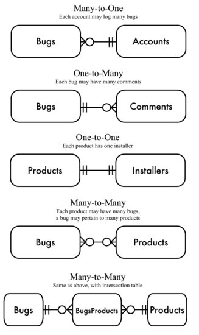 |
Figure 1. Examples of entity-relationship diagrams |
I illustrate most of the topics in SQL Antipatterns using a database for a hypothetical bug-tracking application. The entity-relationship diagram for this database is shown in Figure Diagram for example bug database. Notice the three connections between the Bugs table and the Accounts table, representing three separate foreign keys.
The following data definition language shows how I define the tables. In some cases, choices are made for the sake of examples later in the book, so they might not always be the choices one would make in a real-world application. I try to use only standard SQL so the example is applicable to any brand of database, but some MySQL data types also appear, such as SERIAL and BIGINT.
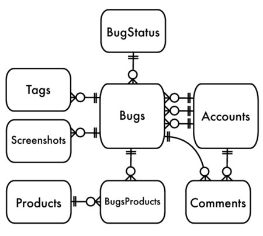 |
Figure 2. Diagram for example bug database |
CREATE TABLE Accounts ( account_id SERIAL PRIMARY KEY, account_name VARCHAR(20), first_name VARCHAR(20), last_name VARCHAR(20), email VARCHAR(100), password_hash CHAR(64), portrait_image BLOB, hourly_rate NUMERIC(9,2));CREATE TABLE BugStatus ( status VARCHAR(20) PRIMARY KEY);CREATE TABLE Bugs ( bug_id SERIAL PRIMARY KEY, date_reported DATE NOT NULL, summary VARCHAR(80), description VARCHAR(1000), resolution VARCHAR(1000), reported_by BIGINT UNSIGNED NOT NULL, assigned_to BIGINT UNSIGNED, verified_by BIGINT UNSIGNED, status VARCHAR(20) NOT NULL DEFAULT 'NEW', priority VARCHAR(20), hours NUMERIC(9,2), FOREIGN KEY (reported_by) REFERENCES Accounts(account_id), FOREIGN KEY (assigned_to) REFERENCES Accounts(account_id), FOREIGN KEY (verified_by) REFERENCES Accounts(account_id), FOREIGN KEY (status) REFERENCES BugStatus(status));CREATE TABLE Comments ( comment_id SERIAL PRIMARY KEY, bug_id BIGINT UNSIGNED NOT NULL, author BIGINT UNSIGNED NOT NULL, comment_date DATETIME NOT NULL, comment TEXT NOT NULL, FOREIGN KEY (bug_id) REFERENCES Bugs(bug_id), FOREIGN KEY (author) REFERENCES Accounts(account_id));CREATE TABLE Screenshots ( bug_id BIGINT UNSIGNED NOT NULL, image_id BIGINT UNSIGNED NOT NULL, screenshot_image BLOB, caption VARCHAR(100), PRIMARY KEY (bug_id, image_id), FOREIGN KEY (bug_id) REFERENCES Bugs(bug_id));CREATE TABLE Tags ( bug_id BIGINT UNSIGNED NOT NULL, tag VARCHAR(20) NOT NULL, PRIMARY KEY (bug_id, tag), FOREIGN KEY (bug_id) REFERENCES Bugs(bug_id));CREATE TABLE Products ( product_id SERIAL PRIMARY KEY, product_name VARCHAR(50));CREATE TABLE BugsProducts( bug_id BIGINT UNSIGNED NOT NULL, product_id BIGINT UNSIGNED NOT NULL, PRIMARY KEY (bug_id, product_id), FOREIGN KEY (bug_id) REFERENCES Bugs(bug_id), FOREIGN KEY (product_id) REFERENCES Products(product_id));In some chapters, especially those in Logical Database Design Antipatterns, I show different database definitions, either to exhibit the antipattern or to show an alternative solution that avoids the antipattern.
First and foremost, I owe my gratitude to my wife Jan. I could not have written this book without the inspiration, love, and support you give me, not to mention the occasional kick in the pants.
I also want to express thanks to my reviewers for giving me a lot of their time. Their suggestions improved the book greatly. Marcus Adams, Jeff Bean, Frederic Daoud, Darby Felton, Arjen Lentz, Andy Lester, Chris Levesque, Mike Naberezny, Liz Nealy, Daev Roehr, Marco Romanini, Maik Schmidt, Gale Straney, and Danny Thorpe.
Thanks to my editor Jacquelyn Carter and the publishers of Pragmatic Bookshelf, who believed in the mission of this book.
Instead of storing the account_id in the Products table, store it in a separate table, so each individual value of that attribute occupies a separate row. This new table Contacts implements a many-to-many relationship between Products and Accounts:
CREATE TABLE Contacts ( product_id BIGINT UNSIGNED NOT NULL, account_id BIGINT UNSIGNED NOT NULL, PRIMARY KEY (product_id, account_id), FOREIGN KEY (product_id) REFERENCES Products(product_id), FOREIGN KEY (account_id) REFERENCES Accounts(account_id));INSERT INTO Contacts (product_id, accont_id)VALUES (123, 12), (123, 34), (345, 23), (567, 12), (567, 34);When the table has foreign keys referencing two tables, it's called an intersection table.[2] This implements a many-to-many relationship between the two referenced tables. That is, each product may be associated through the intersection table to multiple accounts, and likewise each account may be associated to multiple products. See the entity-relationship diagram in Figure Intersection table entity-relationship diagram.
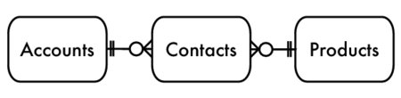 |
Figure 1. Intersection table entity-relationship diagram |
Let's see how using an intersection table resolves all the problems we saw in the "Antipattern" section.
To query the attributes of all products for a given account, it's more straightforward to join the Products table with the Contacts table:
SELECT p.*FROM Products AS p JOIN Contacts AS c ON (p.account_id = c.account_id)WHERE c.account_id = 34;Some people resist queries that contain a join, thinking that they perform poorly. However, this query uses indexes much better than the solution shown earlier in the "Antipattern" section.
Querying account details is likewise easy to read and easy to optimize. It uses indexes for the join efficiently, instead of an esoteric use of regular expressions:
SELECT a.*FROM Accounts AS a JOIN Contacts AS c ON (a.account_id = c.account_id)WHERE c.product_id = 123;The following example returns the number of accounts per product:
SELECT product_id, COUNT(*) AS accounts_per_productFROM ContactsGROUP BY product_id;The number of products per account is just as simple:
SELECT account_id, COUNT(*) AS products_per_accountFROM ContactsGROUP BY account_id;Other more sophisticated reports are possible too, such as the product with the greatest number of accounts:
SELECT c.product_id, c.accounts_per_productFROM ( SELECT product_id, COUNT(*) AS accounts_per_product FROM Contacts GROUP BY product_id) AS cHAVING c.accounts_per_product = MAX(c.accounts_per_product) You can add or remove entries in the list by inserting or deleting rows in the intersection table. Each product reference is stored in a separate row in the Contacts table, so you can add or remove them one at a time.
INSERT INTO Contacts (product_id, account_id) VALUES (456, 34);DELETE FROM Contacts WHERE product_id = 456 AND account_id = 34; You can use a foreign key to validate the entries against a set of legitimate values in another table. You declare that Contacts.account_id references Accounts.account_id, and therefore you rely on the database to enforce referential integrity. Now you can be sure that the intersection table contains only account IDs that exist.
You can also use SQL data types to restrict entries. For example, if the entries in the list should be valid INTEGER or DATE values and you declare the column using those data types, you can be sure all entries are legal values of that type (not nonsense entries like banana).
You use no separator character, since you store each entry on a separate row. There's no ambiguity if the entries contain commas or other characters you might have used as a separator.
Since each entry is in a separate row in the intersection table, the list is limited only by the number of rows that can physically exist in one table. If it's appropriate to limit the number of entries, you should enforce the policy in your application using the count of entries rather than the collective length of the list.
An index on Contacts.account_id makes performance better than matching a substring in a comma-separated list. Declaring a foreign key on a column implicitly creates an index on that column in many database brands (but check your documentation).
You can also create additional attributes for each entry by adding columns to the intersection table. For example, you could record the date a contact was added for a given product or an attribute noting who is the primary contact vs. the secondary contacts. You can't do this in a comma-separated list.
|
Store each value in its own column and row. |
|
The naive solution commonly shown in books and articles is to add a column parent_id. This column references another comment in the same table, and you can create a foreign key constraint to enforce this relationship. The SQL to define this table is shown next, and the entity-relationship diagram is shown in Figure Adjacency list entity-relationship diagram.
CREATE TABLE Comments ( comment_id SERIAL PRIMARY KEY, parent_id BIGINT UNSIGNED, bug_id BIGINT UNSIGNED NOT NULL, author BIGINT UNSIGNED NOT NULL, comment_date DATETIME NOT NULL, comment TEXT NOT NULL, FOREIGN KEY (parent_id) REFERENCES Comments(comment_id), FOREIGN KEY (bug_id) REFERENCES Bugs(bug_id), FOREIGN KEY (author) REFERENCES Accounts(account_id));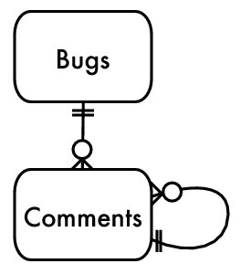 |
Figure 1. Adjacency list entity-relationship diagram |
This design is called Adjacency List. It's probably the most common design software developers use to store hierarchical data. The following is some sample data to show a hierarchy of comments, and an illustration of the tree is shown in Figure Threaded comments illustration.
|
|
|
|
1 |
| Fran | What's the cause of this bug? |
2 | 1 | Ollie | I think it's a null pointer. |
3 | 2 | Fran | No, I checked for that. |
4 | 1 | Kukla | We need to check for invalid input. |
5 | 4 | Ollie | Yes, that's a bug. |
6 | 4 | Fran | Yes, please add a check. |
7 | 6 | Kukla | That fixed it. |
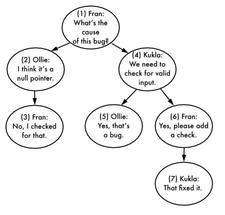 |
Figure 2. Threaded comments illustration |
Adjacency List can be an antipattern when it's the default choice of so many developers yet it fails to be a solution for one of the most common tasks you need to do with a tree: query all descendants.
You can retrieve a comment and its immediate children using a relatively simple query:
SELECT c1.*, c2.*FROM Comments c1 LEFT OUTER JOIN Comments c2 ON c2.parent_id = c1.comment_id; However, this queries only two levels of the tree. One characteristic of a tree is that it can extend to any depth, so you need to be able to query the descendents without regard to the number of levels. For example, you may need to compute the COUNT of comments in the thread or the SUM of the cost of parts in a mechanical assembly.
This kind of query is awkward when you use Adjacency List, because each level of the tree corresponds to another join, and the number of joins in an SQL query must be fixed. The following query retrieves a tree of depth up to four but cannot retrieve the tree beyond that depth:
SELECT c1.*, c2.*, c3.*, c4.*FROM Comments c1 -- 1st level LEFT OUTER JOIN Comments c2 ON c2.parent_id = c1.comment_id -- 2nd level LEFT OUTER JOIN Comments c3 ON c3.parent_id = c2.comment_id -- 3rd level LEFT OUTER JOIN Comments c4 ON c4.parent_id = c3.comment_id; -- 4th level This query is also awkward because it includes descendants from progressively deeper levels by adding more columns. This makes it hard to compute an aggregate such as COUNT.
Another way to query a tree structure from Adjacency List is to retrieve all the rows in the collection and instead reconstruct the hierarchy in the application before you can use it like a tree.
Copying a large volume of data from the database to the application before you can analyze it is grossly inefficient. You might need only a subtree, not the whole tree from its top. You might require only aggregate information about the data, such as the COUNT of comments.
Admittedly, some operations are simple to accomplish with Adjacency List, such as adding a new leaf node:
INSERT INTO Comments (bug_id, parent_id, author, comment) VALUES (1234, 7, 'Kukla', 'Thanks!');Relocating a single node or a subtree is also easy:
However, deleting a node from a tree is more complex. If you want to delete an entire subtree, you have to issue multiple queries to find all descendants. Then remove the descendants from the lowest level up to satisfy the foreign key integrity.
SELECT comment_id FROM Comments WHERE parent_id = 4; -- returns 5 and 6SELECT comment_id FROM Comments WHERE parent_id = 5; -- returns noneSELECT comment_id FROM Comments WHERE parent_id = 6; -- returns 7SELECT comment_id FROM Comments WHERE parent_id = 7; -- returns noneDELETE FROM Comments WHERE comment_id IN ( 7 );DELETE FROM Comments WHERE comment_id IN ( 5, 6 );DELETE FROM Comments WHERE comment_id = 4; You can use a foreign key with the ON DELETE CASCADE modifier to automate this, as long as you know you always want to delete the descendants instead of promoting or relocating them.
If you instead want to delete a nonleaf node and promote its children or move them to another place in the tree, you first need to change the parent_id of children and then delete the desired node.
SELECT parent_id FROM Comments WHERE comment_id = 6; -- returns 4UPDATE Comments SET parent_id = 4 WHERE parent_id = 6;DELETE FROM Comments WHERE comment_id = 6;These are examples of operations that require multiple steps when you use the Adjacency List design. That's a lot of code you have to write for tasks that a database should make simpler and more efficient.
There are several alternatives to the Adjacency List model of storing hierarchical data, including Path Enumeration, Nested Sets, and Closure Table. The following three sections show examples using these designs to solve the scenario in the "Antipattern" section, storing and querying a tree-like collection of comments.
These solutions take some getting used to. They may seem more complex than Adjacency List at first, but they make some tree operations easier that were very difficult or inefficient using the Adjacency List design. If your application needs to perform those operations, then these designs are a better choice than the simple Adjacency List.
One weakness of Adjacency List is that it's expensive to retrieve ancestors of a given node in the tree. In Path Enumeration, this is solved by storing the string of ancestors as an attribute of each node.
You can see a form of Path Enumeration in directory hierarchies. A UNIX path like /usr/local/lib/ is a Path Enumeration of the filesystem, where usr is the parent of local, which in turn is the parent of lib.
In the Comments table, instead of the parent_id column, define a column called path as a long VARCHAR. The string stored in this column is the sequence of ancestors of the current row in order from the top of the tree down, just like a UNIX path. You can even choose / as a separator character.
CREATE TABLE Comments ( comment_id SERIAL PRIMARY KEY, path VARCHAR(1000), bug_id BIGINT UNSIGNED NOT NULL, author BIGINT UNSIGNED NOT NULL, comment_date DATETIME NOT NULL, comment TEXT NOT NULL, FOREIGN KEY (bug_id) REFERENCES Bugs(bug_id), FOREIGN KEY (author) REFERENCES Accounts(account_id));
|
|
|
|
1 | 1/ | Fran | What's the cause of this bug? |
2 | 1/2/ | Ollie | I think it's a null pointer. |
3 | 1/2/3/ | Fran | No, I checked for that. |
4 | 1/4/ | Kukla | We need to check for invalid input. |
5 | 1/4/5/ | Ollie | Yes, that's a bug. |
6 | 1/4/6/ | Fran | Yes, please add a check. |
7 | 1/4/6/7/ | Kukla | That fixed it. |
You can query ancestors by comparing the current row's path to a pattern formed from the path of another row. For example, to find ancestors of comment #7, whose path is 1/4/6/7/, do this:
This matches the patterns formed from paths of ancestors 1/4/6/%, 1/4/%, and 1/%.
You can query descendants by reversing the arguments of the LIKE predicate. To find the descendants of comment #4 whose path is 1/4/, use this:
The pattern 1/4/% matches the paths of descendants 1/4/5/, and 1/4/6/, and 1/4/6/7/.
Once you can easily select a subset of the tree or the chain of ancestors to the top of the tree, you can perform many other queries easily, such as computing the SUM of costs of nodes in a subtree or simply counting the number of nodes. For example, to count the comments per author in the subtree starting at comment #4, do this:
SELECT COUNT(*)FROM Comments AS cWHERE c.path LIKE '1/4/' || '%'GROUP BY c.author; Inserting a node is similar to inserting in the Adjacency List model. You can insert a nonleaf node without needing to modify any other row. Copy the path from the new node's parent, and append the ID of the new node to this string. If your primary key generates its value automatically during the insert, you may need to insert the row and then update the path once you know the ID value for the new row. For example, if you use MySQL, the built-in function LAST_INSERT_ID returns the most recent ID value generated for an inserted row in the current session. Get the rest of the path from the parent of your new node.
INSERT INTO Comments (author, comment) VALUES ('Ollie', 'Good job!');UPDATE Comments SET path = (SELECT path FROM Comments WHERE comment_id = 7) || LAST_INSERT_ID() || '/'WHERE comment_id = LAST_INSERT_ID(); Path Enumeration has some drawbacks similar to those shown in the Chapter Jaywalking. The database can't enforce that the path is formed correctly or that values in the path correspond to existing nodes. Maintaining the path string depends on application code, and verifying it is costly. No matter how long you make the VARCHAR column, it still has a length limit, so it doesn't strictly support trees of unlimited depth.
Path Enumeration allows you to sort a set of rows easily by their hierarchy, as long as the elements between the separator are of consistent length.[3]
The Nested Sets solution stores information with each node that pertains to the set of its descendants, rather than the node's immediate parent. This information can be represented by encoding each node in the tree with two numbers, which you can call nsleft and nsright.
CREATE TABLE Comments ( comment_id SERIAL PRIMARY KEY, nsleft INTEGER NOT NULL, nsright INTEGER NOT NULL, bug_id BIGINT UNSIGNED NOT NULL, author BIGINT UNSIGNED NOT NULL, comment_date DATETIME NOT NULL, comment TEXT NOT NULL, FOREIGN KEY (bug_id) REFERENCES Bugs (bug_id), FOREIGN KEY (author) REFERENCES Accounts(account_id)); Each node is given nsleft and nsright numbers in the following way: the nsleft number is less than the numbers of all the node's children, whereas the nsright number is greater than the numbers of all the node's children. These numbers have no relation to the comment_id values.
An easy way to assign these values is by following a depth-first traversal of the tree, assigning nsleft numbers incrementally as you descend a branch of the tree and assigning nsright numbers as you ascend back up the branch.
It may be easier to visualize the pattern from Figure Nested Sets illustration than from this description.
|
|
|
|
|
1 | 1 | 14 | Fran | What's the cause of this bug? |
2 | 2 | 5 | Ollie | I think it's a null pointer. |
3 | 3 | 4 | Fran | No, I checked for that. |
4 | 6 | 13 | Kukla | We need to check for invalid input. |
5 | 7 | 8 | Ollie | Yes, that's a bug. |
6 | 9 | 12 | Fran | Yes, please add a check. |
7 | 10 | 11 | Kukla | That fixed it. |
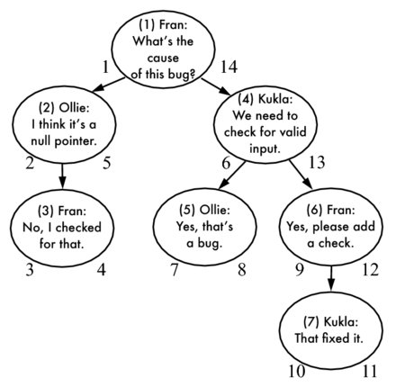 |
Figure 3. Nested Sets illustration |
Once you have assigned each node with these numbers, you can use them to find ancestors and descendants of any given node. For example, you can retrieve comment #4 and its descendants by searching for nodes whose numbers are between the current node's nsleft and nsright.
SELECT c2.*FROM Comments AS c1 JOIN Comments as c2 ON c2.nsleft BETWEEN c1.nsleft AND c1.nsrightWHERE c1.comment_id = 4;You can retrieve comment #6 and its ancestors by searching for nodes whose numbers span the current node's numbers. For example:
SELECT c2.*FROM Comments AS c1 JOIN Comment AS c2 ON c1.nsleft BETWEEN c2.nsleft AND c2.nsrightWHERE c1.comment_id = 6;One chief strength of the Nested Sets design is that when you delete a nonleaf node, its descendants are automatically considered direct children of the deleted node's parents. Although the right and left numbers of each node shown in the illustration have values forming a continuous series and the difference is always one compared to adjacent siblings and parents, this is not necessary for the Nested Sets design to preserve the hierarchy. So when gaps in the values result from deleting a node, there is no interruption to the tree structure.
For example, you can count the depth of a given node and delete its parent, and then when you count the depth of the node again, it seems to have decreased depth by one level.
-- Reports depth = 3SELECT c1.comment_id, COUNT(c2.comment_id) AS depthFROM Comment AS c1 JOIN Comment AS c2 ON c1.nsleft BETWEEN c2.nsleft AND c2.nsrightWHERE c1.comment_id = 7GROUP BY c1.comment_id;DELETE FROM Comment WHERE comment_id = 6;-- Reports depth = 2SELECT c1.comment_id, COUNT(c2.comment_id) AS depthFROM Comment AS c1 JOIN Comment AS c2 ON c1.nsleft BETWEEN c2.nsleft AND c2.nsrightWHERE c1.comment_id = 7GROUP BY c1.comment_id; However, some queries that are simple in the Adjacency List design, such as retrieving the immediate child or immediate parent, are more complex in the Nested Sets design. The direct parent of a given node c1 is an ancestor of that node, but no other node can exist in between them. So, you can use an additional outer join to search for a node that is both an ancestor of c1 and a descendant of the parent. Only if no such node is found (that is, the result of the outer join is null) is the ancestor truly the direct parent of c1.
For example, to find the immediate parent of comment #6, do this:
SELECT parent.*FROM Comment AS c JOIN Comment AS parent ON c.nsleft BETWEEN parent.nsleft AND parent.nsright LEFT OUTER JOIN Comment AS in_between ON c.nsleft BETWEEN in_between.nsleft AND in_between.nsright AND in_between.nsleft BETWEEN parent.nsleft AND parent.nsrightWHERE c.comment_id = 6 AND in_between.comment_id IS NULL;Manipulations of the tree, inserting and moving nodes, are generally more complex in the Nested Sets design than they are in other models. When you insert a new node, you need to recalculate all the left and right values greater than the left value of the new node.
This includes the new node's right siblings, its ancestors, and the right siblings of its ancestors. It also includes descendants, if the new node is inserted as a nonleaf node. Assuming the new node is a leaf node, the following statement should update everything necessary:
-- make space for NS values 8 and 9UPDATE Comment SET nsleft = CASE WHEN nsleft >= 8 THEN nsleft+2 ELSE nsleft END, nsright = nsright+2WHERE nsright >= 7;-- create new child of comment #5, occupying NS values 8 and 9INSERT INTO Comment (nsleft, nsright, author, comment) VALUES (8, 9, 'Fran', 'Me too!');The Nested Sets model is best when it's more important to perform queries for subtrees quickly and easily, rather than operations on individual nodes. Inserting and moving nodes is complex, because of the requirement to renumber the left and right values. If your usage of the tree involves frequent insertions, Nested Sets isn't the best choice.
The Closure Table solution is a simple and elegant way of storing hierarchies. It involves storing all paths through the tree, not just those with a direct parent-child relationship.
In addition to a plain Comments table, create another table TreePaths, with two columns, each of which is a foreign key to the Comments table.
CREATE TABLE Comments ( comment_id SERIAL PRIMARY KEY, bug_id BIGINT UNSIGNED NOT NULL, author BIGINT UNSIGNED NOT NULL, comment_date DATETIME NOT NULL, comment TEXT NOT NULL, FOREIGN KEY (bug_id) REFERENCES Bugs(bug_id), FOREIGN KEY (author) REFERENCES Accounts(account_id));CREATE TABLE TreePaths ( ancestor BIGINT UNSIGNED NOT NULL, descendant BIGINT UNSIGNED NOT NULL, PRIMARY KEY(ancestor, descendant), FOREIGN KEY (ancestor) REFERENCES Comments(comment_id), FOREIGN KEY (descendant) REFERENCES Comments(comment_id)); Instead of using the Comments table to store information about the tree structure, use the TreePaths table. Store one row in this table for each pair of nodes in the tree that shares an ancestor/descendant relationship, even if they are separated by multiple levels in the tree. Also add a row for each node to reference itself. For an illustration of how the nodes are paired, see Figure Closure Table illustration.
|
|
|
|
|
|
|
|
1 | 1 | 1 | 7 | 4 | 6 | ||
1 | 2 | 2 | 2 | 4 | 7 | ||
1 | 3 | 2 | 3 | 5 | 5 | ||
1 | 4 | 3 | 3 | 6 | 6 | ||
1 | 5 | 4 | 4 | 6 | 7 | ||
1 | 6 | 4 | 5 | 7 | 7 | ||
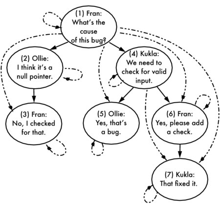 |
Figure 4. Closure Table illustration |
The queries to retrieve ancestors and descendants from this table are even more straightforward than those in the Nested Sets solution. To retrieve descendants of comment #4, match rows in TreePaths where the ancestor is 4:
SELECT c.*FROM Comments AS c JOIN TreePaths AS t ON c.comment_id = t.descendantWHERE t.ancestor = 4; To retrieve ancestors of comment #6, match rows in TreePaths where the descendant is 6:
SELECT c.*FROM Comments AS c JOIN TreePaths AS t ON c.comment_id = t.ancestorWHERE t.descendant = 6; To insert a new leaf node, for instance a new child of comment #5, first insert the self-referencing row. Then add a copy of the set of rows in TreePaths that reference comment #5 as a descendant (including the row in which comment #5 references itself), replacing the descendant with the number of the new comment:
INSERT INTO TreePaths (ancestor, descendant) SELECT t.ancestor, 8 FROM TreePaths AS t WHERE t.descendant = 5 UNION ALL SELECT 8, 8; To delete a leaf node, for instance comment #7, delete all rows in TreePaths that reference comment #7 as a descendant:
To delete a complete subtree, for instance comment #4 and its descendants, delete all rows in TreePaths that reference comment #4 as a descendant, as well as all rows that reference any of comment #4's descendants as descendants:
DELETE FROM TreePathsWHERE descendant IN (SELECT descendant FROM TreePaths WHERE ancestor = 4); Notice that if you delete rows in TreePaths, this doesn't delete the comments themselves. This seems odd for this example of Comments, but it makes more sense if you're working with other kinds of trees, for instance categories in a product catalog or employees in an org chart. You don't necessarily want to delete a node when you change its relationship to other nodes. When you store paths in a separate table, it helps make this more flexible.
To move a subtree from one location in the tree to another, first disconnect the subtree from its ancestors by deleting rows that reference the ancestors of the top node in the subtree and the descendants of that node. For instance, to move comment #6 from its position as a child of comment #4 to a child of comment #3, start with the following deletion. Make sure not to delete comment #6's self-reference.
DELETE FROM TreePathsWHERE descendant IN (SELECT descendant FROM TreePaths WHERE ancestor = 6) AND ancestor IN (SELECT ancestor FROM TreePaths WHERE descendant = 6 AND ancestor != descendant);By selecting ancestors of #6, but not #6 itself, and descendants of #6, including #6, this correctly removes all the paths from #6's ancestors to #6 and its descendants. In other words, this deletes the paths (1, 6), (1,7), (4, 6), and (4, 7). It does not delete (6, 6) or (6, 7).
Then add the orphaned subtree by inserting rows matching the ancestors of the new location and the descendants of the subtree. You can use the CROSS JOIN syntax to create a Cartesian product, generating the rows needed to match ancestors of the new location to all the nodes in the subtree you need to move.
INSERT INTO TreePaths (ancestor, descendant) SELECT supertree.ancestor, subtree.descendant FROM TreePaths AS supertree CROSS JOIN TreePaths AS subtree WHERE supertree.descendant = 3 AND subtree.ancestor = 6;This creates new paths using the ancestors of #3, including #3, and the descendants of #6, including #6. So, the new paths are (1, 6), (2, 6), (3, 6), (1, 7), (2, 7), (3, 7). The result is that the subtree starting with comment #6 is relocated as a child of comment #3. The cross join creates all the needed paths, even if the subtree is moved to a higher or lower level in the tree.
The Closure Table design is more straightforward than the Nested Sets design. Both have quick and easy methods for querying ancestors and descendants, but the Closure Table is easier to maintain the hierarchy information. In both designs, it's more convenient to query immediate child or parent nodes than in the Adjacency List or Path Enumeration designs.
However, you can improve the Closure Table to make queries for immediate parent or child nodes easier. Add a TreePaths.path_length attribute to the Closure Table design. The path_length of a node's self-reference is zero, the path_length of its immediate child is 1, the path_length of its grandchild is 2, and so on. Finding the children of comment #4 is now straightforward:
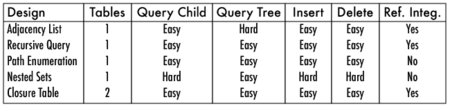 |
Figure 5. Comparing hierarchical data designs |
Each of the designs has its own strengths and weaknesses. Choose the design depending on which operations you need to be most efficient. In Figure Comparing hierarchical data designs, some operations are marked as easy or hard with each respective tree design. You can also consider the following strengths and weaknesses of each design:
WITH or CONNECT BY PRIOR make it more efficient to use the Adjacency List design, provided you use one of the database brands that supports the syntax. There's more to learn about storing and manipulating hierarchical data in SQL. A good book that covers hierarchical queries is Joe Celko's Trees and Hierarchies in SQL for Smarties[JCTAHISFS] . Another book that covers trees and even graphs is SQL Design Patterns[SDP] by Vadim Tropashko. The latter book has a more formal, academic style.
|
A hierarchy consists of entries and relationships. |
Model both of these to suit your work. |
|
The symptom of this antipattern is easy to recognize: tables use the overly generic name id for the primary key. There's virtually no reason to prefer this column name over one that is more descriptive.
The following can also be evidence of the antipattern:
A primary key is a constraint, not a data type. You can declare a primary key on any column or set of columns, as long as the data types support indexing. You should also be able to define a column as an auto-incrementing integer without making it the primary key of the table. The two concepts are independent.
Don't let inflexible conventions get in the way of good design.
Choose sensible names for your primary key. The name should convey the type of entity that the primary key identifies. For example, the primary key of the Bugs table should be bug_id.
Use the same column name in foreign keys where possible. This often means that the name of a primary key should be unique within your schema; no two tables should use the same name for their primary key, unless one is also a foreign key referencing the other. However, there are exceptions: sometimes it is appropriate for a foreign key to be named differently from the primary key it references, for instance to be descriptive of the nature of the association.
CREATE TABLE Bugs ( -- . . . reported_by BIGINT UNSIGNED NOT NULL, FOREIGN KEY (reported_by) REFERENCES Accounts(account_id));An industry standard exists to describe naming conventions for metadata. The standard, called ISO/IEC 11179,[4] is a guideline for "managing classification schemes" in information technology systems. In other words, this is how you should name your tables and columns sensibly. Like most ISO standards, this document is nearly impenetrable, but Joe Celko applies it practically to SQL in his book SQL Programming Style[JCSPS] .
Object-relational frameworks expect you to use a pseudokey named id, but they also allow you to override this and declare a different name instead. The following example uses Ruby on Rails:[5]
Some developers think that specifying the primary key column is necessary only when supporting legacy databases where they can't use their preferred conventions. In fact, supporting sensible column names is also important in new projects.
If your table contains an attribute that's guaranteed to be unique, is non-null, and can serve to identify the row, don't feel obligated to add a pseudokey solely for the sake of tradition.
Practically speaking, it's not uncommon for every attribute in a table to be subject to change or to be nonunique. Databases tend to evolve during the lifetime of a project, and decision makers may not respect the sanctity of a natural key. Sometimes a column that at first seemed like it would be a good natural key turns out to have legitimate duplicates. In those cases, a pseudokey is the only solution.
Use compound keys when they're appropriate. When a row is best identified by the combination of multiple attribute columns, as in the BugsProducts table, use those columns in a compound primary key.
CREATE TABLE BugsProducts ( bug_id BIGINT UNSIGNED NOT NULL, product_id BIGINT UNSIGNED NOT NULL, PRIMARY KEY (bug_id, product_id), FOREIGN KEY (bug_id) REFERENCES Bugs(bug_id), FOREIGN KEY (product_id) REFERENCES Products(product_id));INSERT INTO BugsProducts (bug_id, product_id) VALUES (1234, 1), (1234, 2), (1234, 3);INSERT INTO BugsProducts (bug_id, product_id) VALUES (1234, 1); -- error: duplicate entryNote that foreign keys that reference a compound primary key also need to be compound. This may seem clumsy to duplicate these columns in dependent tables, but they can have advantages too: you might simplify a query that would have required a join to fetch attributes of the referenced row.
|
Conventions are good only if they are helpful. |
|
Even though it seems at first that skipping foreign key constraints makes your database design simpler, more flexible, or speedier, you pay for this in other ways. It becomes your responsibility to write code to ensure referential integrity manually.
Many people's solution for referential integrity is to write application code so that data relationships are always satisfied. Every time you insert a row, make sure that values in foreign key columns reference existing values in the referenced table. Every time you delete a row, make sure that any child tables are also updated appropriately. In other words, the popular answer is simply to make no mistakes.
To avoid making referential integrity mistakes when you have no foreign key constraints, you'd have to run extra SELECT queries before you apply changes to confirm the change won't result in broken references. For instance, to insert a new row, you'd check that the parent row exists:
Then you could add a bug that references it:
To delete a row, you'd have to make sure no child rows exist:
Then you could delete the account:
What if the user with account_id 1 sneaks in and enters a new bug in the moment after your query and before you delete that account? This may seem unlikely, but as Gordon Letwin, architect of DOS 4, famously said, "One in a million is next Tuesday." That still leaves a broken reference---a bug reported by an account that no longer exists.
The only remedy is for you to explicitly lock the Bugs table while you're checking it and unlock it after you have finished deleting the account. Any architecture that requires that kind of locking is never going to do well when high concurrency and scalability are required.
The antisolution described in the story in this chapter uses developer-written scripts to report corrupted data.
For example, in our bugs database, the Bugs.status column references the lookup table BugStatus. To find bugs with an invalid status value, you could use a query like the following:
SELECT b.bug_id, b.statusFROM Bugs b LEFT OUTER JOIN BugStatus s ON (b.status = s.status)WHERE s.status IS NULL;You can imagine that you'd have to write a similar query for every referential relationship in your database.
If you find yourself in the habit of checking for broken references like this, your next question is, how often do you need to run these checks? Running hundreds of checks every day, or even more frequently, becomes quite a chore.
What happens when you do find a broken reference? Can you correct it? You can---sometimes. For instance, you might change an invalid bug status value to a sensible default.[6]
Inevitably, there are other cases where you can't synthesize data to correct these kinds of mistakes. For example, the Bugs.reported_by column should reference the account of the user who reported the given bug, but if this value is invalid, which user's account should you use as a replacement?
It's pretty unlikely that all your code touching the database is perfect. You could easily perform similar database updates in several functions in your application. When you have to change the code, how can you be sure you've applied compatible changes to every case in your application?
You may also have users applying changes directly to the database, using an SQL query tool or through private scripts. It's easy to introduce broken references through ad hoc SQL statements. You should assume this will happen at some point in the life of your application.
You need the database to be consistent---that is, you need to be able to depend on references in the database being satisfied at all times. But you can't be certain that all applications and scripts that have accessed your database have made their changes correctly.
Many developers avoid foreign key constraints because the constraints make it inconvenient to update related columns in multiple tables. For instance, if you need to delete a row that other rows depend on, you have to delete the child rows first to avoid violating foreign key constraints:
DELETE FROM BugStatus WHERE status = 'BOGUS'; -- ERROR!DELETE FROM Bugs WHERE status = 'BOGUS';DELETE FROM BugStatus WHERE status = 'BOGUS'; -- retry succeedsYou have to execute multiple statements manually, one for each child table. If you add another child table in a future enhancement to your database, you have to fix your code to delete from the new table too. But this problem is solvable.
The unsolvable problem is when you UPDATE a column that child rows depend on. You can't update the child rows before you update the parent, and you can't update the parent before you update the child values that reference it. You need to make both changes simultaneously, but that's impossible using two separate updates. It's a catch-22 scenario.
UPDATE BugStatus SET status = 'INVALID' WHERE status = 'BOGUS'; -- ERROR!UPDATE Bugs SET status = 'INVALID' WHERE status = 'BOGUS'; -- ERROR!Some developers find these scenarios difficult to manage, so they decide not to use foreign keys at all. We'll see later how foreign keys address multitable updates and deletes in a simple and effective way.
Sometimes you're forced to use a database brand that doesn't support foreign key constraints (for example MySQL's MyISAM storage engine or SQLite prior to version 3.6.19). If that's the case, then you have to find a way to compensate, like the quality control scripts described in this chapter's story.
There are also some ultra-flexible database designs where foreign keys can't model the relationships. It should be a strong clue that you're using another SQL antipattern if you can't use traditional referential integrity constraints. For more detail, you may want to look at the Chapter Entity-Attribute-Value and the Chapter Polymorphic Associations.
The Japanese phrase poka-yoke means "mistake-proofing."[7] This term refers to a manufacturing process that helps eliminate product defects by preventing, correcting, or drawing attention to errors as they occur. This practice improves quality and decreases the need for correction, which more than makes up for the cost of its use.
You can apply the poka-yoke principle to your database design by using foreign key constraints to enforce referential integrity. Instead of searching for and correcting data integrity mistakes, you can prevent these mistakes from entering your database in the first place.
CREATE TABLE Bugs ( -- . . . reported_by BIGINT UNSIGNED NOT NULL, status VARCHAR(20) NOT NULL DEFAULT 'NEW', FOREIGN KEY (reported_by) REFERENCES Accounts(account_id), FOREIGN KEY (status) REFERENCES BugStatus(status));Your existing code and also ad hoc queries obey the same constraints, so there's no way for any forgotten code or back doors to bypass enforcement. The database rejects any improper change, no matter where the change comes from.
Using foreign keys saves you from writing unnecessary code and ensures that all your code works the same way if you change the database. This reduces the time to develop the code and also many hours of debugging and maintenance. The software industry average is 15 to 50 bugs per 1,000 lines of code. All other things being equal, if you have fewer lines of code, you have fewer bugs.
Foreign keys have another feature you can't mimic using application code: cascading updates.
CREATE TABLE Bugs ( -- . . . reported_by BIGINT UNSIGNED NOT NULL, status VARCHAR(20) NOT NULL DEFAULT 'NEW', FOREIGN KEY (reported_by) REFERENCES Accounts(account_id) ON UPDATE CASCADE ON DELETE RESTRICT, FOREIGN KEY (status) REFERENCES BugStatus(status) ON UPDATE CASCADE ON DELETE SET DEFAULT); This solution allows you to update or delete the parent row and lets the database takes care of any child rows that reference it. Updates to the parent tables BugStatus and Accounts propagate automatically to child rows in Bugs. There's no longer a catch-22 problem.
The way you declare the ON UPDATE or ON DELETE clauses in the foreign key constraint allow you to control the result of a cascading operation. For example, RESTRICT for the foreign key on reported_by means that you can't delete an account if some rows in Bugs reference it. The constraint blocks the delete and raises an error. Whereas if you delete a status value, any bugs with that status are automatically reset to the default status value.
In either case, the database changes both tables atomically. The foreign key references remain satisfied both before and after the changes.
If you add a new child table to the database, the foreign keys in the child table dictate the cascading behavior. You don't need to change your application code. Neither do you need to change anything about the parent table, no matter how many child tables reference it.
It's true that foreign key constraints have a bit of overhead. But compared to the alternative, foreign keys prove to be a lot more efficient.
SELECT queries to check before you insert or update or delete. Foreign keys are easy to use, improve performance, and help you maintain consistent referential integrity during any data change, both simple and complex.
|
Make your database mistake-proof with constraints. |
|
DEFAULT as shown. Extensibility is frequently a goal of software projects. We would like to design software that can adapt fluidly to future usage with little or no additional programming.
This is not a new problem; similar arguments against the inflexibility of relational database metadata have been made almost continuously since 1970, when the relational model was first proposed in A Relational Model of Data for Large Shared Data Banks[ARMODFLSDB] by E. F. Codd.
A conventional table consists of attribute columns that are relevant for every row in the table, since every row represents an instance of a similar object. A different set of attributes represents a different type of object, so it belongs in a different table.
In modern object-oriented programming models, however, different object types can be related, for instance, by extending the same base type. In object-oriented design, these objects are considered instances of the same base type, as well as instances of their respective subtypes. We would like to store objects as rows in a single database table to simplify comparisons and calculations over multiple objects. But we also need to allow objects of each subtype to store their respective attribute columns, which may not apply to the base type or to other subtypes.
Let's use an example from our bugs database. In Figure Object-oriented class diagram for bug types, we can see that a Bug and a Feature Request share some attributes in common, seen in the Issue base type. Every issue is associated with a person who reported it. It's also associated with a product, and it has a priority for completion. However, a Bug has some distinct attributes: the version of the product in which the bug occurs and the severity or impact of the bug. Likewise, a FeatureRequest may have its own attributes as well. For this example, suppose a feature is associated with a sponsor whose budget supports that feature's development.
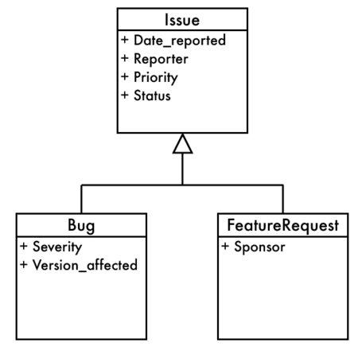 |
Figure 1. Object-oriented class diagram for bug types |
The solution that appeals to some programmers when they need to support variable attributes is to create a second table, storing attributes as rows. See the diagram showing the two tables in Figure EAV entity relationship. Each row in this attribute table has three columns:
status. The value of that attribute for bug 1234 is NEW. This design is called Entity-Attribute-Value, or EAV for short. It's also sometimes called open schema, schemaless, or name-value pairs.
CREATE TABLE Issues ( issue_id SERIAL PRIMARY KEY);INSERT INTO Issues (issue_id) VALUES (1234);CREATE TABLE IssueAttributes ( issue_id BIGINT UNSIGNED NOT NULL, attr_name VARCHAR(100) NOT NULL, attr_value VARCHAR(100), PRIMARY KEY (issue_id, attr_name), FOREIGN KEY (issue_id) REFERENCES Issues(issue_id));INSERT INTO IssueAttributes (issue_id, attr_name, attr_value) VALUES (1234, 'product', '1'), (1234, 'date_reported', '2009-06-01'), (1234, 'status', 'NEW'), (1234, 'description', 'Saving does not work'), (1234, 'reported_by', 'Bill'), (1234, 'version_affected', '1.0'), (1234, 'severity', 'loss of functionality'), (1234, 'priority', 'high');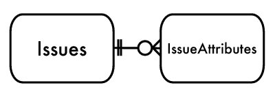 |
Figure 2. EAV entity relationship |
By adding one additional table, you seem to gain the following benefits:
This appears to be an improved design. However, the simple database structure doesn't make up for the difficulty of using it.
Your boss needs to run a report of the bugs reported per day. In a conventional table design, the Issues table would have a simple attribute column such as date_reported. To query all bugs with their report dates, your boss could use a simple query like this:
To get the same information as the previous query using the EAV design, your boss needs to fetch rows from the IssueAttributes table that stores an attribute named by the string date_reported. This query is more verbose but less clear.
SELECT issue_id, attr_value AS "date_reported"FROM IssueAttributesWHERE attr_name = 'date_reported';When you use EAV, you sacrifice many advantages that a conventional database design would have given you.
To help your boss generate accurate project reports, you should also require that the date_reported attribute has a value. In a conventional database design, it would be simple to enforce a mandatory column by declaring the column NOT NULL.
In the EAV design, each attribute corresponds to a row in the IssueAttributes table, not a column. You would need a constraint that checks that a row exists for each issue_id value, and the row must have the string date_reported in its attr_name column.
However, SQL doesn't support a constraint that can do this. So, you must write application code to enforce it. If you do find a bug with no reported date, should you add a value for this attribute? What value should you give it? If you make a guess or use some default value for a missing attribute, how does that affect the accuracy of your boss's reports?
Your boss tells you he is having trouble running his report because people have entered dates in different formats or sometimes even a string that isn't a date. In a conventional database, you can prevent this if you declared the column with the DATE data type.
In the EAV design, the data type of the IssueAttributes.attr_value column is typically a string to accommodate all possible attributes in a single column. So, it has no way of rejecting invalid data.
INSERT INTO IssueAttributes (issue_id, attr_name, attr_value) VALUES (1234, 'date_reported', 'banana'); -- Not an error! Some people try to extend the EAV design by defining a separate attr_value column for each SQL data type, leaving null in the unused columns. This allows you to use data types but makes queries even worse:
SELECT issue_id, COALESCE(attr_value_date, attr_value_datetime, attr_value_integer, attr_value_numeric, attr_value_float, attr_value_string, attr_value_text) AS "date_reported"FROM IssueAttributesWHERE attr_name = 'date_reported';You would need to add even more columns to support user-defined data types or domains.
In a conventional database, you can restrict the range of some attributes by defining a foreign key to a lookup table. For example, the status attribute of a bug or issue should be one of a short list of values stored in the BugStatus table.
CREATE TABLE Issues ( issue_id SERIAL PRIMARY KEY, -- other columns status VARCHAR(20) NOT NULL DEFAULT 'NEW', FOREIGN KEY (status) REFERENCES BugStatus(status)); In the EAV design, you can't apply this kind of constraint on the attr_value column. A referential integrity constraint applies to every row in the table.
CREATE TABLE IssueAttributes ( issue_id BIGINT UNSIGNED NOT NULL, attr_name VARCHAR(100) NOT NULL, attr_value VARCHAR(100), FOREIGN KEY (attr_value) REFERENCES BugStatus(status)); If you define this constraint, it would force every attribute to match a value in BugStatus, not just the status attribute.
Your boss' reports are still not reliable. You find that attributes are not being named consistently. One bug uses an attribute named by the string date_reported, but another bug names the attribute by the string report_date. Both are clearly intended to represent the same information.
How would you count bugs per date?
SELECT date_reported, COUNT(*) AS bugs_per_dateFROM (SELECT DISTINCT issue_id, attr_value AS date_reported FROM IssueAttributes WHERE attr_name IN ('date_reported', 'report_date'))GROUP BY date_reported;How would you know if a given bug has stored an attribute by yet another name? How would you know if a given bug has stored a given attribute twice, by two different names? How can you prevent such mistakes?
One remedy might be to declare a foreign key on the attr_name column to a lookup table that contains your approved attribute names. However, this doesn't support attributes you define on the fly for each entity. That's a common use of the EAV design.
It's natural to retrieve a row from the Issues table with all its attributes in columns. You want to fetch an issue in a single row as though it were stored in a conventional table.
|
|
|
|
|
1234 | 2009-06-01 | NEW | HIGH | Saving does not work |
Because each attribute is stored on a separate row of the IssueAttributes table, retrieving them all as part of a single row requires a join for each attribute. You must know all attributes at the time you write this query. The following query reconstructs the row shown earlier:
SELECT i.issue_id, i1.attr_value AS "date_reported", i2.attr_value AS "status", i3.attr_value AS "priority", i4.attr_value AS "description"FROM Issues AS i LEFT OUTER JOIN IssueAttributes AS i1 ON i.issue_id = i1.issue_id AND i1.attr_name = 'date_reported' LEFT OUTER JOIN IssueAttributes AS i2 ON i.issue_id = i2.issue_id AND i2.attr_name = 'status' LEFT OUTER JOIN IssueAttributes AS i3 ON i.issue_id = i3.issue_id AND i3.attr_name = 'priority'; LEFT OUTER JOIN IssueAttributes AS i4 ON i.issue_id = i4.issue_id AND i4.attr_name = 'description';WHERE i.issue_id = 1234; You must use outer joins because inner joins would cause the query to return no rows if any one of the attributes were not present in the IssueAttributes table. As the number of attributes increases, so does the number of joins, and the cost of this query increases exponentially.
It's hard to justify using the EAV antipattern in a relational database. You have to compromise too many features that are strengths of the relational paradigm. But that doesn't address the legitimate need in some applications to support dynamic attributes.
Most applications that need schemaless data really need it for only a few tables or even just one table. The rest of your data requirements conform to standard table designs. If you account for the extra work and risk of EAV in your project plan, it may be the lesser evil to use it sparingly. But keep in mind that experienced database consultants report that systems using EAV become unwieldy within a year.
If you have nonrelational data management needs, the best answer is to use a nonrelational technology. This is a book about SQL, not about SQL alternatives, so I'll list only a sampling of these technologies:
Many other nonrelational projects are also emerging. However, the weaknesses of EAV relative to relational databases also apply to these alternatives. When metadata is fluid, it's harder to formulate simple queries. Applications spend a lot of energy discovering the structure of data and adapting to it.
If EAV seems like the right design, you should take a second look before you implement it. If you do some good old-fashioned analysis, you will probably find that your project's data can be modeled in a traditional table design more easily and with greater assurance of data integrity.
There are several ways to store such data without using EAV. Most solutions work best when you have a finite number of subtypes and you know the attribute of each subtype. Which solution is best to use depends on how you intend to query the data, so you should decide on a design on a case-by-case basis.
The simplest design is to store all related types in one table, with distinct columns for every attribute that exists in any type. Use one attribute to define the subtype of a given row. In this example, this attribute is called issue_type. Some attributes are common to all subtypes. Many attributes are subtype-specific, and these columns must be given a null value on any row storing an object for which the attribute does not apply; the columns with non-null values become sparse.
The name of this design comes from Martin Fowler's book Patterns of Enterprise Application Architecture[POEAA] .
CREATE TABLE Issues ( issue_id SERIAL PRIMARY KEY, reported_by BIGINT UNSIGNED NOT NULL, product_id BIGINT UNSIGNED, priority VARCHAR(20), version_resolved VARCHAR(20), status VARCHAR(20), issue_type VARCHAR(10), -- BUG or FEATURE severity VARCHAR(20), -- only for bugs version_affected VARCHAR(20), -- only for bugs sponsor VARCHAR(50), -- only for feature requests FOREIGN KEY (reported_by) REFERENCES Accounts(account_id) FOREIGN KEY (product_id) REFERENCES Products(product_id));As new object types are introduced, the database must accommodate the attributes that describe these new object types. You must alter the table to add more columns as you add distinct attributes for the new object types. You may encounter a practical limit on the number of columns per table.
Another limitation of Single Table Inheritance is that there is no metadata to define which attributes belong to which subtypes. In your application, you can ignore some attributes if you know they don't apply to the object subtype on a given row. But you must track manually which attributes are applicable to each subtype. It would be better if you could use metadata to define this in the database.
Single Table Inheritance is best when you have few subtypes and few subtype-specific attributes, and you need to use a single-table database access pattern like Active Record.
Another solution is to create a separate table for each subtype. Every table contains the same attributes that are common to the base type, as well as the respective subtype-specific attribute. The name of this design also comes from Martin Fowler's book.
CREATE TABLE Bugs ( issue_id SERIAL PRIMARY KEY, reported_by BIGINT UNSIGNED NOT NULL, product_id BIGINT UNSIGNED, priority VARCHAR(20), version_resolved VARCHAR(20), status VARCHAR(20), severity VARCHAR(20), -- only for bugs version_affected VARCHAR(20), -- only for bugs FOREIGN KEY (reported_by) REFERENCES Accounts(account_id), FOREIGN KEY (product_id) REFERENCES Products(product_id));CREATE TABLE FeatureRequests ( issue_id SERIAL PRIMARY KEY, reported_by BIGINT UNSIGNED NOT NULL, product_id BIGINT UNSIGNED, priority VARCHAR(20), version_resolved VARCHAR(20), status VARCHAR(20), sponsor VARCHAR(50), -- only for feature requests FOREIGN KEY (reported_by) REFERENCES Accounts(account_id), FOREIGN KEY (product_id) REFERENCES Products(product_id)); An advantage of Concrete Table Inheritance over Single Table Inheritance is that you are prevented from storing a row containing values for attributes that don't apply to that row's subtype. If you reference an attribute column that doesn't exist in that table, the database informs you of the error automatically. For example, the severity column does not appear in the FeatureRequests table:
INSERT INTO FeatureRequests (issue_id, severity) VALUES ( ... ); -- ERROR!Another advantage of Concrete Table Inheritance is that you don't need an extra attribute to define the subtype on each row, as you do in the Single Table Inheritance design.
However, it's hard to tell the common attributes from subtype-specific attributes. Also, if you add a new attribute to the set of common attributes, you must alter every subtype table.
No metadata shows that the data stored in these subtype tables belong to related objects. That is, if a programmer new to your project looks at the table definitions, he would see that some columns are common to all these subtype tables, but the metadata does not tell him whether any logical relationship exists or whether the tables have similarities merely by coincidence.
If you want to search all objects regardless of their subtypes, this is complicated if each subtype is stored in a separate table. To make this query easier, define a view that is the union of the tables, selecting only common attributes.
CREATE VIEW Issues AS SELECT b.*, 'bug' AS issue_type FROM Bugs AS b UNION ALL SELECT f.*, 'feature' AS issue_type FROM FeatureRequests AS f;The Concrete Table Inheritance design is best used when you seldom need to query against all subtypes at once.
A third solution mimics inheritance, as though tables were object-oriented classes. Create a single table for the base type, containing attributes common to all subtypes. Then for each subtype, create another table, with a primary key that also serves as a foreign key to the base table. The name of this design also comes from Martin Fowler's book.
CREATE TABLE Issues ( issue_id SERIAL PRIMARY KEY, reported_by BIGINT UNSIGNED NOT NULL, product_id BIGINT UNSIGNED, priority VARCHAR(20), version_resolved VARCHAR(20), status VARCHAR(20), FOREIGN KEY (reported_by) REFERENCES Accounts(account_id), FOREIGN KEY (product_id) REFERENCES Products(product_id));CREATE TABLE Bugs ( issue_id BIGINT UNSIGNED PRIMARY KEY, severity VARCHAR(20), version_affected VARCHAR(20), FOREIGN KEY (issue_id) REFERENCES Issues(issue_id));CREATE TABLE FeatureRequests ( issue_id BIGINT UNSIGNED PRIMARY KEY, sponsor VARCHAR(50), FOREIGN KEY (issue_id) REFERENCES Issues(issue_id));The one-to-one relationship is enforced by the metadata, since the dependent table's foreign key is also a primary key and thus must be unique. This solution provides an efficient way to search against all subtypes, as long as your search references only the base type's attributes. Once you've found the entries that match your search, you can get the subtype-specific attributes by querying against the respective subtype tables.
You don't need to know from the row in the base table what subtype the row represents; as long as you have a small number of subtypes, you can write a join against all of them at once, producing a sparse result set like in the Single Table Inheritance table. Attributes are null where the attribute doesn't apply in the subtype for a given row.
SELECT i.*, b.*, f.*FROM Issues AS i LEFT OUTER JOIN Bugs AS b USING (issue_id) LEFT OUTER JOIN FeatureRequests AS f USING (issue_id); This is also a good candidate for defining a VIEW.
This design is best when you often need to query across all subtypes, referencing the columns they have in common.
If you have many subtypes or if you must support new attributes frequently, you can add a BLOB column to store data in a format such as XML or JSON, which encodes both the attribute names and their values. Martin Fowler calls this pattern the Serialized LOB.
CREATE TABLE Issues ( issue_id SERIAL PRIMARY KEY, reported_by BIGINT UNSIGNED NOT NULL, product_id BIGINT UNSIGNED, priority VARCHAR(20), version_resolved VARCHAR(20), status VARCHAR(20), issue_type VARCHAR(10), -- BUG or FEATURE attributes TEXT NOT NULL, -- all dynamic attributes for the row FOREIGN KEY (reported_by) REFERENCES Accounts(account_id), FOREIGN KEY (product_id) REFERENCES Products(product_id));The advantage of this design is that it's completely extensible. You can store new attributes in the blob at any time. Every row stores a potentially distinct set of attributes, so you have as many subtypes as you have rows.
The disadvantage is that SQL has little support for accessing specific attributes in such a structure. You can't easily select individual attributes within the blob for row-based restriction, aggregate calculation, sorting, or other operations. You must fetch the whole blob of attributes as a single value and write application code to decode and interpret the attributes.
This design is best when you can't limit yourself to a finite set of subtypes and when you need complete flexibility to define new attributes at any time.
Unfortunately, sometimes you're stuck with the EAV design, such as if you inherited a project and can't change it or if your company acquired a third-party software platform that uses EAV. If this is the case, familiarize yourself with the trouble areas in the "Antipattern" section so you can anticipate and plan for the extra work it takes to work with this design.
Above all, don't try to write queries that fetch entities as a single row as though data were stored in a conventional table. Instead, query the attributes associated with the entity and fetch them as a set of rows, like they are stored.
SELECT issue_id, attr_name, attr_valueFROM IssueAttributesWHERE issue_id = 1234;The result of this query might look like the following:
|
|
|
1234 | date_reported | 2009-06-01 |
1234 | description | Saving does not work |
1234 | priority | HIGH |
1234 | product | Open RoundFile |
1234 | reported_by | Bill |
1234 | severity | loss of functionality |
1234 | status | NEW |
This query is easier for you to write, and it's easier for the database to process. It returns all the attributes associated with the issue, even if you don't know how many there are when you write the query.
To use a result in this format, you need to write application code to loop over the rows of the result set and set properties of an object in your application. See the following PHP code for an example:
<?php$objects = array();$stmt = $pdo->query( "SELECT issue_id, attr_name, attr_value FROM IssueAttributes WHERE issue_id = 1234");while ($row = $stmt->fetch()) { $id = $row['issue_id']; $field = $row['attr_name']; $value = $row['attr_value']; if (!array_key_exists($id, $objects)) { $objects[$id] = new stdClass(); } $objects[$id]->$field = $value;}This might seem like too much work, but it's the consequence of a system-within-a-system like EAV. SQL already offers a way to identify distinct attributes---in distinct columns. By using EAV, you're layering onto SQL a new way to identify attributes, so it should be no surprise that SQL supports this awkwardly and inefficiently.
|
Use metadata for metadata. |
|
Of course, some people do go both ways.
Let's allow users to make comments on bugs. A given bug may have many comments, but any given comment must pertain to a single bug. So, there's a one-to-many relationship between Bugs and Comments. The entity-relationship diagram for this kind of simple association is shown in Figure Simple association, and the following SQL shows how you would create this table:
CREATE TABLE Comments ( comment_id SERIAL PRIMARY KEY, bug_id BIGINT UNSIGNED NOT NULL, author_id BIGINT UNSIGNED NOT NULL, comment_date DATETIME NOT NULL, comment TEXT NOT NULL, FOREIGN KEY (author_id) REFERENCES Accounts(account_id), FOREIGN KEY (bug_id) REFERENCES Bugs(bug_id)); However, you might have two tables you can comment on. Bugs and FeatureRequests are similar entities, although you might store them as separate tables (see the section Concrete Table Inheritance). You'd like to store Comments in a single table regardless of whether they pertain to either type of issue---a bug or a feature---but you can't declare a foreign key that references multiple parent tables. The following declaration is nonsense:
... FOREIGN KEY (issue_id) REFERENCES Bugs(issue_id) OR FeatureRequests(issue_id));Developers also try to write invalid SQL to query multiple tables, such as the following:
SELECT c.*, i.summary, i.statusFROM Comments AS cJOIN c.issue_type AS i USING (issue_id);But you can't join to a different table per row in SQL. SQL syntax requires that you name all the tables literally at the time you submit the query. The tables cannot vary during the query. What's wrong with this picture, and how do we solve it?
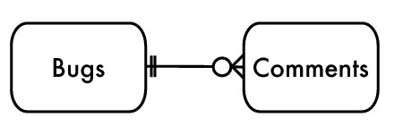 |
Figure 1. Simple association |
The Scarecrow in The Wizard of Oz gives Dorothy uncertain directions when she asks which fork in the road she should take to get to the Emerald City. What should be a clear answer to Dorothy's simple question just confuses her when the Scarecrow tries to give her two answers at once.
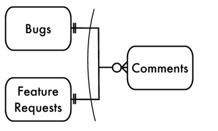 |
Figure 2. Polymorphic association |
This kind of association is illustrated in the entity-relationship diagram in Figure Polymorphic association. The foreign key in the child table "forks," so a row in the Comments table matches either a row in the Bugs table or a row in the FeatureRequests table. The curved arc in the diagram indicates an exclusive choice: a given comment must reference either one bug or one feature request.
A solution for these cases has become popular enough to be given a name, Polymorphic Associations. This is also sometimes called a promiscuous association, because it can reference multiple tables.
To make Polymorphic Associations work, you must add an extra string column alongside the foreign key on issue_id. The extra column contains the name of the parent table referenced by the current row. In this example, the new column is called issue_type, and it contains either Bugs or FeatureRequests, corresponding to the names of the two possible parent tables in this association.
CREATE TABLE Comments ( comment_id SERIAL PRIMARY KEY, issue_type VARCHAR(20), -- "Bugs" or "FeatureRequests" issue_id BIGINT UNSIGNED NOT NULL, author BIGINT UNSIGNED NOT NULL, comment_date DATETIME, comment TEXT, FOREIGN KEY (author) REFERENCES Accounts(account_id)); You can see one difference immediately: the foreign key declaration for issue_id is missing. In fact, since a foreign key must specify exactly one table, using a Polymorphic Association means that you can't declare this association in metadata. As a result, there is no enforcement of data integrity to ensure that the value in Comments.issue_id matches a value in the parent table.
Likewise, no metadata ensures that the string in Comments.issue_type corresponds to a table that exists in this database.
The issue_id value in the Comments table may occur in the primary key column of both parent tables, Bugs and FeatureRequests. Or the value may occur in one parent table but be missing in the other parent table. It's therefore crucial to use the issue_type correctly when joining the child table to the parent table. You must not match an issue_id value to the FeatureRequests table if it was intended to be matched to the Bugs table.
For example, this will retrieve comments for a given bug by its primary key value 1234:
SELECT *FROM Bugs AS b JOIN Comments AS c ON (b.issue_id = c.issue_id AND c.issue_type = 'Bugs')WHERE b.issue_id = 1234; Although the previous query works if bugs are stored in the single table Bugs, you run into a problem when Comments is associated with both tables Bugs and FeatureRequests. In SQL, you must specify all tables in a join; you cannot join Comments to two separate tables, switching between them row by row, depending on the value in the Comments.issue_type column.
To retrieve either a bug or a feature given a specific comment, you need to run a query with an outer join to both parent tables. Only one of the parent tables will satisfy its join, since part of the join condition relies on the value in the Comment.issue_type column. Using an outer join means that fields from the table that does not match contain null in the result set.
SELECT *FROM Comments AS c LEFT OUTER JOIN Bugs AS b ON (b.issue_id = c.issue_id AND c.issue_type = 'Bugs') LEFT OUTER JOIN FeatureRequests AS f ON (f.issue_id = c.issue_id AND c.issue_type = 'FeatureRequests');The result may look something like this:
|
|
|
|
|
|
6789 | Bugs | 1234 | It crashes! | 1234 |
|
9876 | Feature… | 2345 | Great idea! |
| 2345 |
In the example of Bugs and FeatureRequests, these two parent tables are meant to model related subtypes. Polymorphic Associations may also be used when the parent tables are completely unrelated to each other. For example, in an ecommerce database, both tables Users and Orders may be associated with Addresses, as illustrated in Figure Polymorphic Associations for addresses.
CREATE TABLE Addresses ( address_id SERIAL PRIMARY KEY, parent VARCHAR(20), -- "Users" or "Orders" parent_id BIGINT UNSIGNED NOT NULL, address TEXT); In this case, the Addresses table contains a polymorphic column that names either Users or Orders as the parent table for a given address. Notice that you have to choose one or the other. You can't associate a given address with both a user and an order, even an order placed by that user, to ship merchandise to himself.
Also, if a user has a shipping address as well as a billing address, you need some way to make this distinction in the Addresses table; likewise, any other parents need to note the special usage of addresses in the Addresses table. These notes can propagate like weeds.
CREATE TABLE Addresses ( address_id SERIAL PRIMARY KEY, parent VARCHAR(20), -- "Users" or "Orders" parent_id BIGINT UNSIGNED NOT NULL, users_usage VARCHAR(20), -- "billing" or "shipping" orders_usage VARCHAR(20), -- "billing" or "shipping" address TEXT);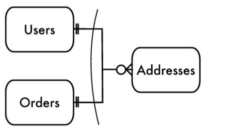 |
Figure 3. Polymorphic Associations for addresses |
If you hear statements like the following, it's a clue that the Polymorphic Associations antipattern is being employed:
entity_type column for? Oh, that tells you which thing this other column points to." The Ruby on Rails framework supports Polymorphic Associations by declaring Active Record classes with the :polymorphic attribute. For example, you could associate Comments to Bugs and FeatureRequests as follows:
class Comment < ActiveRecord::Base belongs_to :commentable, :polymorphic => trueendclass Bug < ActiveRecord::Base has_many :comments, :as => :commentableendclass FeatureRequest < ActiveRecord::Base has_many :comments, :as => :commentableendThe Hibernate framework for Java supports Polymorphic Associations using a variety of schema declarations.[8]
It's better to redesign your database to avoid the weaknesses of Polymorphic Associations but still support the data modeling you need. The following sections describe a few solutions that accommodate the data relationship but make better use of metadata to enforce integrity.
One solution to this antipattern is simple once you see the nature of the problem: Polymorphic Associations are backward.
A foreign key in the child table Comments can't reference multiple parent tables, so instead, use multiple foreign keys to reference the Comments table. Create a separate intersection table for each parent table, and in each intersection table include a foreign key to Comments, as well as a foreign key to the respective parent table. This design is illustrated in the entity-relationship diagram in Figure Reversing a polymorphic association.
CREATE TABLE BugsComments ( issue_id BIGINT UNSIGNED NOT NULL, comment_id BIGINT UNSIGNED NOT NULL, PRIMARY KEY (issue_id, comment_id), FOREIGN KEY (issue_id) REFERENCES Bugs(issue_id), FOREIGN KEY (comment_id) REFERENCES Comments(comment_id));CREATE TABLE FeaturesComments ( issue_id BIGINT UNSIGNED NOT NULL, comment_id BIGINT UNSIGNED NOT NULL, PRIMARY KEY (issue_id, comment_id), FOREIGN KEY (issue_id) REFERENCES FeatureRequests(issue_id), FOREIGN KEY (comment_id) REFERENCES Comments(comment_id)); This solution removes the need for the Comments.issue_type column. Now the metadata can enforce data integrity, instead of relying on application code to manage the associations without error.
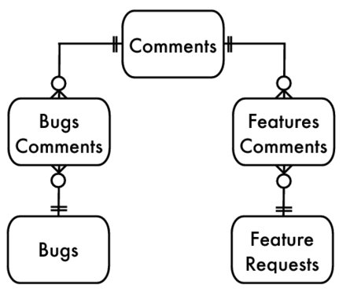 |
Figure 4. Reversing a polymorphic association |
A potential weakness of this solution is that it permits associations that you might not want to be permitted. Intersection tables usually model many-to-many associations, so this would allow a given comment to be associated with multiple bugs or multiple feature requests. However, you probably want each comment to pertain to only one bug or one feature request. You can enforce at least part of this rule by declaring a UNIQUE constraint on the comment_id column of each intersection table.
CREATE TABLE BugsComments ( issue_id BIGINT UNSIGNED NOT NULL, comment_id BIGINT UNSIGNED NOT NULL, UNIQUE KEY (comment_id), PRIMARY KEY (issue_id, comment_id), FOREIGN KEY (issue_id) REFERENCES Bugs(issue_id), FOREIGN KEY (comment_id) REFERENCES Comments(comment_id));This ensures that a given comment can be referenced only once in the intersection table, which naturally prevents it from being associated with multiple bugs or multiple feature requests. However, the metadata doesn't prevent a given comment from being referenced once in both intersection tables, associating the comment with both a bug and a feature request. This is probably not what you want, but ensuring against it remains the responsibility of your application code.
You can query comments given a specific bug or feature request simply by using the intersection table.
SELECT *FROM BugsComments AS b JOIN Comments AS c USING (comment_id)WHERE b.issue_id = 1234;You can query the matching bug or feature request based on an instance of a comment by using an outer join to both intersection tables. You have to name all the possible parent tables, but that's no more complex than the query you had to use in the Polymorphic Associations antipattern. Also, you can depend on referential integrity when using intersection tables, whereas with Polymorphic Associations you couldn't.
SELECT *FROM Comments AS c LEFT OUTER JOIN (BugsComments JOIN Bugs AS b USING (issue_id)) USING (comment_id) LEFT OUTER JOIN (FeaturesComments JOIN FeatureRequests AS f USING (issue_id)) USING (comment_id)WHERE c.comment_id = 9876;Sometimes you need to make the result of a query against multiple parent tables appear is if you had stored the parents in a single table (see the section Single Table Inheritance). You can do this in either of two ways.
First look at the following query using UNION:
SELECT b.issue_id, b.description, b.reporter, b.priority, b.status, b.severity, b.version_affected, NULL AS sponsor FROM Comments AS c JOIN (BugsComments JOIN Bugs AS b USING (issue_id)) USING (comment_id) WHERE c.comment_id = 9876;UNION SELECT f.issue_id, f.description, f.reporter, f.priority, f.status, NULL AS severity, NULL AS version_affected, f.sponsor FROM Comments AS c JOIN (FeaturesComments JOIN FeatureRequests AS f USING (issue_id)) USING (comment_id) WHERE c.comment_id = 9876; This query should be guaranteed to return a single row if your application has associated each comment with exactly one parent table. Since query results can be combined with UNION only if their columns are the same in number and data type, you must provide null placeholders for columns that are unique to each parent table. You must list the columns in the same order in both queries involved in the UNION.
Alternatively, look at the following query using the SQL COALESCE function. This function returns its first non-null argument. Since you are using an outer join in the query, a comment that pertains to a feature request and has no matching row in Bugs would return all fields in b.* as null. Likewise, all fields in f.* would be null if the comment pertains to a bug instead of a feature request. List the fields specific to one parent table or the other in a simple manner; if they are irrelevant to the matching parent table, they are returned as null.
SELECT c.*, COALESCE(b.issue_id, f.issue_id ) AS issue_id, COALESCE(b.description, f.description) AS description, COALESCE(b.reporter, f.reporter ) AS reporter, COALESCE(b.priority, f.priority ) AS priority, COALESCE(b.status, f.status ) AS status, b.severity, b.version_affected, f.sponsorFROM Comments AS c LEFT OUTER JOIN (BugsComments JOIN Bugs AS b USING (issue_id)) USING (comment_id) LEFT OUTER JOIN (FeaturesComments JOIN FeatureRequests AS f USING (issue_id)) USING (comment_id)WHERE c.comment_id = 9876;Both of these queries are pretty complex, so they're good candidates for a database view, and you can use them more simply in your application.
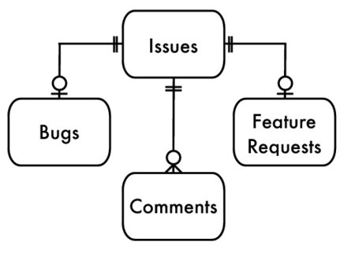 |
Figure 5. Association of Comments to the Base Issues table |
In object-oriented polymorphism, two subtypes can be referenced similarly because they implicitly share a common supertype. In SQL, the Polymorphic Associations antipattern leaves out that crucial entity: the common supertype. You can fix that by creating a base table that all of your parent tables extend (see the section Class Table Inheritance). Add the foreign key in the child Comments table to reference the base table. You don't need an issue_type column. This solution is illustrated in the entity-relationship diagram in Figure Association of Comments to the Base Issues table.
CREATE TABLE Issues ( issue_id SERIAL PRIMARY KEY);CREATE TABLE Bugs ( issue_id BIGINT UNSIGNED PRIMARY KEY, FOREIGN KEY (issue_id) REFERENCES Issues(issue_id), . . .);CREATE TABLE FeatureRequests ( issue_id BIGINT UNSIGNED PRIMARY KEY, FOREIGN KEY (issue_id) REFERENCES Issues(issue_id), . . .);CREATE TABLE Comments ( comment_id SERIAL PRIMARY KEY, issue_id BIGINT UNSIGNED NOT NULL, author BIGINT UNSIGNED NOT NULL, comment_date DATETIME, comment TEXT, FOREIGN KEY (issue_id) REFERENCES Issues(issue_id), FOREIGN KEY (author) REFERENCES Accounts(account_id),); Note that the primary keys of Bugs and FeatureRequests are also foreign keys. They reference the surrogate key value generated in the Issues table, instead of generating a new value for themselves.
Given a specific comment, you can retrieve the referenced bug or feature request using a relatively simple query. You don't have to include the Issues table in that query at all, unless you defined attribute columns in that table. Also, since the primary key value of the Bugs table and its ancestor Issues table are the same, you can join Bugs directly to Comments. You can join two tables even if there is no foreign key constraint linking them directly, as long as you use columns that represent comparable information in your database.
SELECT *FROM Comments AS c LEFT OUTER JOIN Bugs AS b USING (issue_id) LEFT OUTER JOIN FeatureRequests AS f USING (issue_id)WHERE c.comment_id = 9876;Given a specific bug, you can retrieve its comments just as easily.
SELECT *FROM Bugs AS b JOIN Comments AS c USING (issue_id)WHERE b.issue_id = 1234; The point is that if you use an ancestor table like Issues, you can rely on the enforcement of your database's data integrity by foreign keys.
|
In every table relationship, there is one referencing table |
and one referenced table. |
|
This is the same objective as in the Chapter Jaywalking: an attribute seems to belong in one table, but the attribute has multiple values. Previously, we saw that combining multiple values into a comma-separated string makes it hard to validate the values, hard to read or change individual values, and hard to compute aggregate expressions such as counting the number of distinct values.
We'll use a new example to illustrate this antipattern. We want the bugs database to allow tags so we can categorize bugs. Some bugs may be categorized by the software subsystem that they affect, for instance printing, reports, or email. Other bugs may be categorized by the nature of the defect; for instance, a crash bug could be tagged crash, while you could tag a report of slowness with performance, and you could tag a bad color choice in the user interface with cosmetic.
The bug-tagging feature must support multiple tags, because tags are not necessarily mutually exclusive. A defect could affect multiple systems or could affect the performance of printing.
We still have to account for multiple values in the attribute, but we know the new solution must store only a single value in each column. It might seem natural to create multiple columns in this table, each containing a single tag.
CREATE TABLE Bugs ( bug_id SERIAL PRIMARY KEY, description VARCHAR(1000), tag1 VARCHAR(20), tag2 VARCHAR(20), tag3 VARCHAR(20));As you assign tags to a given bug, you'd put values in one of these three columns. Unused columns remain null.
|
|
|
|
|
1234 | Crashes while saving | crash |
|
|
3456 | Increase performance | printing | performance |
|
5678 | Support XML |
|
|
|
Most tasks you could do easily with a conventional attribute now become more complex.
When searching for bugs with a given tag, you must search all three columns, because the tag string could occupy any of these columns.
For example, to retrieve bugs that reference performance, use a query like the following:
SELECT * FROM BugsWHERE tag1 = 'performance' OR tag2 = 'performance' OR tag3 = 'performance'; You might need to search for bugs that reference both tags, performance and printing. To do this, use a query like the following one. Remember to use parentheses correctly, because OR has lower precedence than AND.
SELECT * FROM BugsWHERE (tag1 = 'performance' OR tag2 = 'performance' OR tag3 = 'performance') AND (tag1 = 'printing' OR tag2 = 'printing' OR tag3 = 'printing'); The syntax required to search for a single value over multiple columns is lengthy and tedious to write. You can make it more compact by using an IN predicate in a slightly untraditional manner:
SELECT * FROM BugsWHERE 'performance' IN (tag1, tag2, tag3) AND 'printing' IN (tag1, tag2, tag3); Adding and removing a value from the set of columns presents its own issues. Simply using UPDATE to change one of the columns isn't safe, since you can't be sure which column is unoccupied, if any. You might have to retrieve the row into your application to see.
In this case, for instance, the result shows you that tag2 is null. Then you can form the UPDATE statement.
You face the risk that in the moment after you query the table and before you update it, another client has gone through the same steps of reading the row and updating it. Depending on who applied their update first, either you or he risks getting an update conflict error or having his changes overwritten by the other. You can avoid this two-step query by using complex SQL expressions.
The following statement uses the NULLIF function to make each column null if it equals a specific value. NULLIF returns null if its two arguments are equal.[9]
UPDATE BugsSET tag1 = NULLIF(tag1, 'performance'), tag2 = NULLIF(tag2, 'performance'), tag3 = NULLIF(tag3, 'performance')WHERE bug_id = 3456; The following statement adds the new tag performance to the first column that is currently null. However, if none of the three columns is null, then the statement makes no change to the row, and the new tag value is not recorded at all. Also, constructing this statement is laborious. Notice you must repeat the string performance six times.
UPDATE BugsSET tag1 = CASE WHEN 'performance' IN (tag2, tag3) THEN tag1 ELSE COALESCE(tag1, 'performance') END, tag2 = CASE WHEN 'performance' IN (tag1, tag3) THEN tag2 ELSE COALESCE(tag2, 'performance') END, tag3 = CASE WHEN 'performance' IN (tag1, tag2) THEN tag3 ELSE COALESCE(tag3, 'performance') ENDWHERE bug_id = 3456;You probably don't want the same value to appear in multiple columns, but when you use the Multicolumn Attributes antipattern, the database can't prevent this. In other words, it's hard to prevent the following statement:
INSERT INTO Bugs (description, tag1, tag2, tag3) VALUES ('printing is slow', 'printing', 'performance', 'performance');Another weakness of this design is that three columns might not be enough. To keep the design of one value per column, you must define as many columns as the maximum number of tags a bug can have. How can you predict, at the time you define the table, what that greatest number will be?
One tactic is to guess at a moderate number of columns and expand later, if necessary, by adding more columns. Most databases allow you to restructure existing tables, so you can add Bugs.tag4, or even more columns, as you need them.
However, this change is costly in three ways:
SELECT * FROM BugsWHERE tag1 = 'performance' OR tag2 = 'performance' OR tag3 = 'performance' OR tag4 = 'performance'; -- you must add this new termIn some cases, an attribute may have a fixed number of choices, and the position or order of these choices may be significant. For example, a given bug may be associated with several users' accounts, but the nature of each association is unique. One is the user who reported the bug, another is a programmer assigned to fix the bug, and another is the quality control engineer assigned to verify the fix. Even though the values in each of these columns are compatible, their significance and usage actually makes them logically different attributes.
It would be valid to define three ordinary columns in the Bugs table to store each of these three attributes. The drawbacks described in this chapter aren't as important, because you are more likely to use them separately. Sometimes you might still need to query over all three columns, for instance to report everyone involved with a given bug. But you can accept this complexity for a few cases in exchange for greater simplicity in most other cases.
Another way to structure this is to create a dependent table for multiple associations from the Bugs table the Accounts table and give this new table an extra column to note the role each account has in relation to that bug. However, this structure might lead to some of the problems described in the Chapter Entity-Attribute-Value.
As we saw in the Chapter Jaywalking, the best solution is to create a dependent table with one column for the multivalue attribute. Store the multiple values in multiple rows instead of multiple columns. Also, define a foreign key in the dependent table to associate the values to its parent row in the Bugs table.
CREATE TABLE Tags ( bug_id BIGINT UNSIGNED NOT NULL tag VARCHAR(20), PRIMARY KEY (bug_id, tag), FOREIGN KEY (bug_id) REFERENCES Bugs(bug_id));INSERT INTO Tags (bug_id, tag) VALUES (1234, 'crash'), (3456, 'printing'), (3456, 'performance');When all the tags associated with a bug are in a single column, searching for bugs with a given tag is more straightforward.
Even more complex searches, such as a bug that relates to two specific tags, is easy to read.
SELECT * FROM Bugs JOIN Tags AS t1 USING (bug_id) JOIN Tags AS t2 USING (bug_id)WHERE t1.tag = 'printing' AND t2.tag = 'performance';You can add or remove an association much more easily than with the Multicolumn Attributes antipattern. Simply insert or delete a row from the dependent table. There's no need to inspect multiple columns to see where you can add a value.
INSERT INTO Tags (bug_id, tag) VALUES (1234, 'save');DELETE FROM Tags WHERE bug_id = 1234 AND tag = 'crash'; The PRIMARY KEY constraint ensures that no duplication is allowed. A given tag can be applied to a given bug only once. If you attempt to insert a duplicate, SQL returns a duplicate key error.
You are not limited to three tags per bug, as you were when there were only three tagN columns in the Bugs table. Now you can apply as many tags per bug as you need.
|
Store each value with the same meaning in a single column. |
|
NULLIF is a standard function in SQL; it's supported by all brands except Informix and Ingres. In the television series Star Trek,[10] "tribbles" are small furry animals kept as pets. Tribbles are very appealing at first, but soon they reveal their tendency to reproduce out of control, and managing the overpopulation of tribbles becomes a serious problem.
Where do you put them? Who's responsible for them? How long would it take to pick up every tribble? Eventually, Captain Kirk discovers that his ship and crew can't function, and he has to order his crew to make it top priority to remove the tribbles.
We know from experience that querying a table with few rows is quicker than querying a table with many rows, all other things being equal. This leads to a common fallacy that we must make every table contain fewer rows, no matter what we have to do. This leads to two forms of the antipattern:
But you can't get something for nothing; to meet the goal of having few rows in every table, you have to either create tables that have too many columns or else create a greater number of tables. In both cases, you find that the number of tables or columns continues to grow, since new data values can make you create new schema objects.
To split data into separate tables, you'd need some policy for which rows belong in which tables. For example, you could split them up by the year in the date_reported column:
CREATE TABLE Bugs_2008 ( . . . );CREATE TABLE Bugs_2009 ( . . . );CREATE TABLE Bugs_2010 ( . . . );As you insert rows into the database, it's your responsibility to use the correct table, depending on the values you insert:
INSERT INTO Bugs_2010 (..., date_reported, ...) VALUES (..., '2010-06-01', ...); Fast forward to January 1 of the next year. Your application starts getting an error from all new bug reports, because you didn't remember to create the Bugs_2011 table.
INSERT INTO Bugs_2011 (..., date_reported, ...) VALUES (..., '2011-02-20', ...);This means that introducing a new data value can cause a need for a new metadata object. This is not usually the relationship between data and metadata in SQL.
Suppose your boss is trying to count bugs reported during the year, but his numbers don't adding up. After investigating, you discover that some 2010 bugs were entered in the Bugs_2009 table by mistake. The following query should always return an empty result, and if it doesn't, you have a problem:
SELECT * FROM Bugs_2009WHERE date_reported NOT BETWEEN '2009-01-01' AND '2009-12-31'; There's no way to limit the data relative to the name of its table automatically, but you can declare a CHECK constraint in each of your tables:
CREATE TABLE Bugs_2009 ( -- other columns date_reported DATE CHECK (EXTRACT(YEAR FROM date_reported) = 2009));CREATE TABLE Bugs_2010 ( -- other columns date_reported DATE CHECK (EXTRACT(YEAR FROM date_reported) = 2010)); Remember to adjust the value in the CHECK constraint when you create Bugs_2011. If you make a mistake, you could create a table that rejects the rows it's supposed to accept.
One day, your customer support analyst asks to change a bug report date. It's in the database as reported on 2010-01-03, but the customer who reported it actually sent it in by fax a week earlier, on 2009-12-27. You could change the date with a simple UPDATE:
UPDATE Bugs_2010SET date_reported = '2009-12-27'WHERE bug_id = 1234; But this correction makes the row an invalid entry in the Bugs_2010 table. You would need to remove the row from one table and insert it into the other table, in the infrequent case that a simple UPDATE would cause this anomaly.
INSERT INTO Bugs_2009 (bug_id, date_reported, ...) SELECT bug_id, date_reported, ... FROM Bugs_2010 WHERE bug_id = 1234;DELETE FROM Bugs_2010 WHERE bug_id = 1234;You should make sure that the primary key values are unique across all the split tables. If you need to move a row from one table to another, you need some assurance that the primary key value doesn't conflict with another row.
If you use a database that supports sequence objects, you can use a single sequence to generate values for all the split tables. For databases that support only per-table ID uniqueness, this may be more awkward. You have to define one extra table solely to produce primary key values:
CREATE TABLE BugsIdGenerator (bug_id SERIAL PRIMARY KEY);INSERT INTO BugsIdGenerator (bug_id) VALUES (DEFAULT);ROLLBACK;INSERT INTO Bugs_2010 (bug_id, . . .) VALUES (LAST_INSERT_ID(), . . .); Inevitably, your boss needs a query that references multiple tables. For example, he may ask for a count of all open bugs regardless of the year they were created. You can reconstruct the full set of bugs using a UNION of all the split tables and query that as a derived table:
SELECT b.status, COUNT(*) AS count_per_status FROM ( SELECT * FROM Bugs_2008 UNION SELECT * FROM Bugs_2009 UNION SELECT * FROM Bugs_2010 ) AS bGROUP BY b.status; As the years go on and you create more tables such as Bugs_2011, you need to keep your application code up-to-date to reference the newly created tables.
Your boss tells you to add a column to track the hours of work required to resolve each bug.
If you've split the table, then the new column applies only to the one table you alter. None of the other tables contains the new column.
If you use a UNION query across your split tables as in the previous section, you stumble upon a new problem: you can combine tables using UNION if they have the same columns. If they differ, then you have to name only the columns that all tables have in common, without using the * wildcard.
If a dependent table like Comments references Bugs, the dependent table cannot declare a foreign key. A foreign key must specify a single table, but in this case the parent table is split into many.
CREATE TABLE Comments ( comment_id SERIAL PRIMARY KEY, bug_id BIGINT UNSIGNED NOT NULL, FOREIGN KEY (bug_id) REFERENCES Bugs_????(bug_id)); The split table may also have problems being a dependent instead of a parent. For example, Bugs.reported_by references the Accounts table. If you want to query all bugs reported by a given person regardless of the year, you need a query like the following:
SELECT * FROM Accounts aJOIN ( SELECT * FROM Bugs_2008 UNION ALL SELECT * FROM Bugs_2009 UNION ALL SELECT * FROM Bugs_2010 ) t ON (a.account_id = t.reported_by)Columns can be Metadata Tribbles, too. You can create a table containing columns that are bound to propagate by their nature, as we saw in the story at the beginning of this chapter.
Another example we might have in our bugs database is a table that records summary data for project metrics, where individual columns store subtotals. For instance, in the following table, it's only a matter of time before you need to add the column bugs_fixed_2011:
CREATE TABLE ProjectHistory ( bugs_fixed_2008 INT, bugs_fixed_2009 INT, bugs_fixed_2010 INT);There are better ways to improve performance if a table gets too large, instead of splitting the table manually. These include horizontal partitioning, vertical partitioning, and using dependent tables.
You can gain the benefits of splitting a large table without the drawbacks by using a feature that is called either horizontal partitioning or sharding. You define a logical table with some rule for separating rows into individual partitions, and the database manages the rest. Physically, the table is split, but you can still execute SQL statements against the table as though it were whole.
You have flexibility in that you can define the way each individual table splits its rows into separate storage. For example, using the partitioning support in MySQL version 5.1, you can specify partitions as an optional part of a CREATE TABLE statement.
CREATE TABLE Bugs ( bug_id SERIAL PRIMARY KEY, -- other columns date_reported DATE) PARTITION BY HASH ( YEAR(date_reported) ) PARTITIONS 4; The previous example achieves a partitioning similar to that which we saw earlier in this chapter, separating rows based on the year in the date_reported column. However, its advantages over splitting the table manually are that rows are never placed in the wrong split table, even if the value of date_reported column is updated, and you can run queries against the Bugs table without the need to reference individual split tables.
The number of separate physical tables used to store the rows is fixed at four in this example. When you have rows spanning more than four years, one of the partitions will be used to store more than one year's worth of data. This will continue as the years go on. You don't need to add new partitions unless the volume of data becomes so great that you feel the need to split it further.
Partitioning is not defined in the SQL standard, so each brand of database implements it in their own nonstandard way. The terminology, syntax, and specific features of partitioning vary between brands. Nevertheless, some form of partitioning is now supported by every major brand of database.
Whereas horizontal partitioning splits a table by rows, vertical partitioning splits a table by columns. Splitting a table by columns can have advantages when some columns are bulky or seldom needed.
BLOB and TEXT columns have variable size, and they may be very large. For efficiency of both storage and retrieval, many database brands automatically store columns with these data types separately from the other columns of a given row. If you run a query without referencing any BLOB or TEXT columns of a table, you can access the other columns more efficiently. But if you use the column wildcard * in your query, the database retrieves all columns from that table, including any BLOB or TEXT columns.
For example, in the Products table of our bugs database, we might store a copy of the installation file for the respective product. This file is typically a self-extracting archive with an extension such as .exe on Windows or .dmg on a Mac. The files are usually very large, but a BLOB column can store binary data of enormous size.
Logically, the installer file should be an attribute of the Products table. But in most queries against that table, you wouldn't need the installer. Storing such a large volume of data in the Products table, which you use infrequently, could lead to inadvertent performance problems if you're in the habit of retrieving all columns using the * wildcard.
The remedy is to store the BLOB column in another table, separate from but dependent on the Products table. Make its primary key also serve as a foreign key to the Products table to ensure there is at most one row per product row.
CREATE TABLE ProductInstallers ( product_id BIGINT UNSIGNED PRIMARY KEY, installer_image BLOB, FOREIGN KEY (product_id) REFERENCES Products(product_id)); The previous example is extreme to make the point, but it shows the benefit of storing some columns in a separate table. For example, in MySQL's MyISAM storage engine, querying a table is most efficient when the rows are of fixed size. VARCHAR is a variable-length data type, so the presence of a single column with that data type in a table prevents the table from gaining that advantage. If you store all variable-length columns in a separate table, then queries against the primary table can benefit (if even a little bit).
CREATE TABLE Bugs ( bug_id SERIAL PRIMARY KEY, -- fixed length data type summary CHAR(80), -- fixed length data type date_reported DATE, -- fixed length data type reported_by BIGINT UNSIGNED, -- fixed length data type FOREIGN KEY (reported_by) REFERENCES Accounts(account_id));CREATE TABLE BugDescriptions ( bug_id BIGINT UNSIGNED PRIMARY KEY, description VARCHAR(1000), -- variable length data type resolution VARCHAR(1000) -- variable length data type FOREIGN KEY (bug_id) REFERENCES Bugs(bug_id));Similar to the solution we saw in the Chapter Multicolumn Attributes, the remedy for Metadata Tribbles columns is to create a dependent table.
CREATE TABLE ProjectHistory ( project_id BIGINT, year SMALLINT, bugs_fixed INT, PRIMARY KEY (project_id, year), FOREIGN KEY (project_id) REFERENCES Projects(project_id));Instead of one row per project with multiple columns for each year, use multiple rows, with one column for bugs fixed. If you define the table in this way, you don't need to add new columns to support subsequent years. You can store any number of rows per project in this table as time goes on.
|
Don't let data spawn metadata. |
|
Instead of FLOAT or its siblings, use the NUMERIC or DECIMAL SQL data types for fixed-precision fractional numbers.
ALTER TABLE Bugs ADD COLUMN hours NUMERIC(9,2);ALTER TABLE Accounts ADD COLUMN hourly_rate NUMERIC(9,2); These data types store numeric values exactly, up to the precision you specify in the column definition. Specify precision as an argument to the data type, similar to the syntax you would use for the length of a VARCHAR data type. The precision is the total number of decimal digits you can use in a value in this column. A precision of 9 means that you can store a value like 123456789, but you may not be able to store 1234567890.[11]
You may also specify a scale in a second argument to the data type. The scale is the number of digits to the right of the decimal point. These digits are included in the precision digits, so a precision of 9 with a scale of 2 means you can store a value like 1234567.89, but not 12345678.91 or 123456.789.
The precision and scale you specify applies to the column on all rows in the table. In other words, you can't store values with scale 2 on some rows and scale 4 on other rows. It's ordinary in SQL that a column's data type applies uniformly on all rows (just as a column defined as VARCHAR(20) would allow a string of that length on every row).
The advantage of NUMERIC and DECIMAL are that they store rational numbers without rounding, as the FLOAT data types do. After you set a value to 59.95, you can depend on that value being stored exactly. When you compare it for equality to a literal value 59.95, the comparison succeeds.
Returns: 59.95
Likewise, if you scale up the value by a billion, you get the expected value:
SELECT hourly_rate * 1000000000 FROM Accounts WHERE hourly_rate = 59.95; Returns: 59950000000
The data types NUMERIC and DECIMAL behave identically; there should be no difference between them. DEC is also a synonym for DECIMAL.
You still can't store values that require infinite precision, such as one-third. But at least we're more familiar with values that have this restriction in decimal format.
If you need exact decimal values, use the NUMERIC data type. The FLOAT data type is unable to represent many decimal rational numbers, so they should be treated as inexact values.
|
Do not use |
|
NUMERIC column may have more digits than the precision you specified. The Index Shotgun antipattern is about creating or dropping indexes without reason, so let's come up with ways to analyze a database and find good reasons to include indexes or omit them.
You can use the mnemonic MENTOR to describe a checklist for analyzing your database for good index choices: Measure, Explain, Nominate, Test, Optimize, and Rebuild.
You can't make informed decisions without information. Most databases provide some way to log the time to execute SQL queries so you can identify the operations with the greatest cost. For example:
long_query_time configuration parameter defaults to 10 seconds. PostgreSQL has a similar configuration variable log_min_duration_statement. Once you know which queries account for the most time in your application, you know where you should focus your optimizing attention for the greatest benefit. You might even find that all queries are working efficiently except for one single bottleneck query. This is the query you should start optimizing.
The area of greatest cost in your application isn't necessarily the most time-consuming query if that query is run only rarely. Other simpler queries might be run frequently, more often than you would expect, so they account for more total time. Giving attention to optimizing these queries gives you more bang for your buck.
Disable any query result caching while you're measuring query performance. This type of cache is designed to bypass query execution and index usage, so it won't give an accurate measurement.
You can get more accurate information by profiling your application after you deploy it. Collect aggregate data of where the code spends its time when real users are using it, and against the real database. You should monitor profiling data from time to time to be sure you haven't acquired a new bottleneck.
Remember to disable or turn down the reporting rate of profilers after you're done measuring, because these tools incur some overhead.
Having identified the query that has the greatest cost, your next step is to find out why it's so slow. Every database uses an optimizer to pick indexes for your query. You can get the database to give you a report of its analysis, called the query execution plan (QEP).
The syntax to request a QEP varies by database brand:
Database Brand | QEP Reporting Solution |
IBM DB2 |
|
Microsoft SQL Server |
|
MySQL |
|
Oracle |
|
PostgreSQL |
|
SQLite |
|
There's no standard for what information a QEP report includes or the format of the report. In general, the QEP shows you which tables are involved in a query, how the optimizer chooses to use indexes, and what order it will access the tables. The report may also include statistics, such as the number of rows generated by each stage of the query.
Let's look at a sample SQL query and request a QEP report:
EXPLAIN SELECT Bugs.*FROM BugsJOIN (BugsProducts JOIN Products USING (product_id)) USING (bug_id)WHERE summary LIKE '%crash%' AND product_name = 'Open RoundFile'ORDER BY date_reported DESC;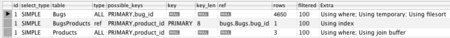 |
Figure 1. MySQL query execution plan |
In the MySQL QEP report shown in Figure MySQL query execution plan, the key column shows that this query makes use of only the primary key index BugsProducts. Also, the extra notes in the last column indicate that the query will sort the result in a temporary table, without the benefit of an index.
The LIKE expression forces a full table scan in Bugs, and there is no index on Products.product_name. We can improve this query if we create a new index on product_name and also use a full-text search solution.[12]
The information in a QEP report is vendor-specific. In this example, you should read the MySQL manual page "Optimizing Queries with EXPLAIN" to understand how to interpret the report.[13]
Now that you have the optimizer's QEP for your query, you should look for cases where the query accesses a table without using an index.
Some databases have tools to do this for you, collecting query trace statistics and proposing a number of changes, including creating new indexes that you're missing but would benefit your query. For example:
Even without automatic advisors, you can learn how to recognize when an index could benefit a query. You need to study your database's documentation to interpret the QEP report.
This step is important: after creating indexes, profile your queries again. It's important to confirm that your change made a difference so you know that your work is done.
You can also use this step to impress your boss and justify the work you put into this optimization. You don't want your weekly status to be like this: "I've tried everything I can think of to fix our performance issues, and we'll just have to wait and see…." Instead, you should have the opportunity to report this: "I determined we could create one new index on a high-activity table, and I improved the performance of our critical queries by 38 percent."
Indexes are compact, frequently used data structures, which makes them good candidates for keeping in cache memory. Reading indexes in memory improves performance an order of magnitude greater than reading indexes via disk I/O.
Database servers allow you to configure the amount of system memory to allocate for caching. Most databases set the cache buffer size pretty low to ensure that the database works well on a wide variety of systems. You probably want to raise the size of the cache.
How much memory should you allocate to cache? There's no single answer to this, because it depends on the size of your database and how much system memory you have available.
You may also benefit from preloading indexes into cache memory, instead of relying on database activity to bring the most frequently used data or indexes into the cache. For instance, on MySQL, use the LOAD INDEX INTO CACHE statement.
Indexes provide the most efficiency when they are balanced. Over time, as you update and delete rows, the indexes may become progressively imbalanced, similar to how filesystems become fragmented over time. In practice, you may not see a large difference between an index that is optimal vs. one that has some imbalance. But we want to get the most out of indexes, so it's worthwhile to perform maintenance on a regular schedule.
Like most features related to indexes, each database brand uses vendor-specific terminology, syntax, and capabilities.
Database Brand | Index Maintenance Command |
IBM DB2 |
|
Microsoft SQL Server |
|
MySQL |
|
Oracle |
|
PostgreSQL |
|
SQLite |
|
How frequently should you rebuild an index? You might hear generic answers such as "once a week," but in truth there's no single answer that fits all applications. It depends on how frequently you commit changes to a given table that could introduce imbalance. It also depends on how large the table is and how important it is to get optimal benefit from indexes for this table. Is it worth spending hours rebuilding indexes for a large but seldom used table if you can expect to gain only an extra 1 percent performance? You're the best judge of this, because you know your data and your operation requirements better than anyone else does.
A lot of the knowledge about getting the most out of indexes is vendor-specific, so you'll need to research the brand of database you use. Your resources include the database manual, books and magazines, blogs and mailing lists, and also lots of experimentation on your own. The most important rule is that guessing blindly at indexing isn't a good strategy.
|
Know your data, know your queries, and MENTOR your indexes. |
|
The root cause of this antipattern is simple, and it reveals a common misconception that many programmers have about how grouping queries work in SQL.
The rows in each group are those rows with the same value in the column or columns you name after GROUP BY. For example, in the following query, there is one row group for each distinct value in product_id.
SELECT product_id, MAX(date_reported) AS latestFROM Bugs JOIN BugsProducts USING (bug_id)GROUP BY product_id; Every column in the select-list of a query must have a single value row per row group. This is called the Single-Value Rule. Columns named in the GROUP BY clause are guaranteed to be exactly one value per group, no matter how many rows the group matches.
The MAX expression is also guaranteed to result in a single value for each group: the highest value found in the argument of MAX over all the rows in the group.
However, the database server can't be so sure about any other column named in the select-list. It can't always guarantee that the same value occurs on every row in a group for those other columns.
SELECT product_id, MAX(date_reported) AS latest, bug_idFROM Bugs JOIN BugsProducts USING (bug_id)GROUP BY product_id; In this example, there are many distinct values for bug_id for a given product_id, because the BugsProducts table associates multiple bugs to a given product. In a grouping query that reduces to a single row per product, there's no way to represent all the values of bug_id.
Since there is no guarantee of a single value per group in the "extra" columns, the database assumes that they violate the Single-Value Rule. Most brands of database report an error if you try to run any query that tries to return a column other than those columns named in the GROUP BY clause or as arguments to aggregate functions.
MySQL and SQLite have different behavior from other brands of database, which we'll explore in the section Legitimate Uses of the Antipattern.
The common misconception that programmers have is that SQL can guess which bug_id you want in the report, based on the fact that MAX is used in another column. Most people assume that if the query fetches the greatest value, then other columns named will naturally take their value from the same row where that greatest value occurs.
Unfortunately, SQL can't make this inference in several cases:
date_reported and that is the greatest value in the group, which value of bug_id should the query report? MAX and MIN, these probably correspond to two different rows in the group. Which bug_id should the query return for this group? SELECT product_id, MAX(date_reported) AS latest, MIN(date_reported) AS earliest, bug_idFROM Bugs JOIN BugsProducts USING (bug_id)GROUP BY product_id;bug_id? This is commonly true for the functions AVG, COUNT, and SUM. SELECT product_id, SUM(hours) AS total_project_estimate, bug_idFROM Bugs JOIN BugsProducts USING (bug_id)GROUP BY product_id;These are examples of why the Single-Value Rule is important. Not every query that fails to follow this rule would produce an ambiguous result, but many do. It would be clever if the database could tell an ambiguous query from an unambiguous one and produce an error only when the data contains ambiguity. But that would not be good for application reliability; it would mean that the same query might be valid or invalid, depending on the state of data.
As we've seen, MySQL and SQLite can't guarantee a reliable result for a column that doesn't fit the Single-Value Rule. There are cases when you can take advantage of the fact that these databases enforce the rule less strictly than other brands.
SELECT b.reported_by, a.account_nameFROM Bugs b JOIN Accounts a ON (b.reported_by = a.account_id)GROUP BY b.reported_by; In the previous query, the account_name column technically violates the Single-Value Rule, since it's named neither in the GROUP BY clause nor in an aggregate function. Nevertheless, there is only one value possible for account_name in each group; the groups are based on Bugs.reported_by, which is a foreign key to the Accounts table. Therefore, the groups correspond one-to-one with rows in the Accounts table.
In other words, if you know the value of reported_by, then you know the value of account_name unambiguously, like if you had queried by the primary key of the Accounts table.
This kind of unambiguous relationship is called a functional dependency. The most common example of this is between the primary key of a table and the table's attributes: account_name is a functional dependency of its primary key, account_id. If you group a query by a table's primary key column(s), then the groups correspond to a single row of that table, and therefore all other columns of the same table must have a single value per group.
Bugs.reported_by has a similar relationship with the dependent attributes of the Accounts table, because it references the primary key of the Accounts table. When the query groups by the reported_by column, which is a foreign key, the attributes of the Accounts table are functionally dependent, and the query result contains no ambiguity.
However, most brands of database still return an error. Not only is this the behavior required by the SQL standard, but it's not too expensive to figure out functional dependencies on the fly.[14] But if you use MySQL or SQLite and you're careful to query only functionally dependent columns, you can use this kind of grouping query and still avoid problems of ambiguity.
The sections that follow describe several ways you can resolve this antipattern and write unambiguous queries.
The most straightforward solution is to eliminate ambiguous columns from the query.
SELECT product_id, MAX(date_reported) AS latestFROM Bugs JOIN BugsProducts USING (bug_id)GROUP BY product_id; The query reveals the date of the latest bug per product, even though it doesn't report the bug_id corresponding to that latest bug. Sometimes this is enough, so don't overlook a simple solution.
A correlated subquery contains a reference to the outer query and so produces different results for each row of the outer query. We can use this to find the latest bug per product by running a subquery to search for bugs with the same product and a greater date. When the subquery finds none, the bug in the outer query is the latest.
SELECT bp1.product_id, b1.date_reported AS latest, b1.bug_idFROM Bugs b1 JOIN BugsProducts bp1 USING (bug_id)WHERE NOT EXISTS (SELECT * FROM Bugs b2 JOIN BugsProducts bp2 USING (bug_id) WHERE bp1.product_id = bp2.product_id AND b1.date_reported < b2.date_reported);Use this solution as a simple solution that is readable and easy to code. However, keep in mind that this solution isn't likely to be the best for performance, because correlated subqueries are executed once for each row of the outer query.
You can use a subquery as a derived table, producing an interim result that contains only the product_id and the corresponding greatest bug report date for each product. Then use this result to join against the tables so that the query result contains only bugs with the latest date per product.
SELECT m.product_id, m.latest, b1.bug_idFROM Bugs b1 JOIN BugsProducts bp1 USING (bug_id) JOIN (SELECT bp2.product_id, MAX(b2.date_reported) AS latest FROM Bugs b2 JOIN BugsProducts bp2 USING (bug_id) GROUP BY bp2.product_id) m ON (bp1.product_id = m.product_id AND b1.date_reported = m.latest);
|
|
|
1 | 2010-06-01 | 2248 |
2 | 2010-02-16 | 3456 |
2 | 2010-02-16 | 5150 |
3 | 2010-01-01 | 5678 |
Notice that you can get multiple rows per product if the latest date returned by the subquery matches multiple rows. If you need to ensure a single row per product_id, you can use another grouping function in the outer query:
SELECT m.product_id, m.latest, MAX(b1.bug_id) AS latest_bug_idFROM Bugs b1 JOIN (SELECT product_id, MAX(date_reported) AS latest FROM Bugs b2 JOIN BugsProducts USING (bug_id) GROUP BY product_id) m ON (b1.date_reported = m.latest)GROUP BY m.product_id, m.latest;
|
|
|
1 | 2010-06-01 | 2248 |
2 | 2010-02-16 | 5150 |
3 | 2010-01-01 | 5678 |
Use the derived table solution as a more scalable alternative to the correlated subquery. The derived table is noncorrelated, so most database brands should be able to execute the subquery once. However, the database must store the interim result set in a temporary table, so this still isn't the best for performance.
You can create a join that tries to match against a set of rows that may not exist. This type of join is called an outer join. Where the matching rows don't exist, null is used for all columns in that nonexistent row. So, where the query finds null, we know no such row was found.
SELECT bp1.product_id, b1.date_reported AS latest, b1.bug_idFROM Bugs b1 JOIN BugsProducts bp1 ON (b1.bug_id = bp1.bug_id)LEFT OUTER JOIN (Bugs AS b2 JOIN BugsProducts AS bp2 ON (b2.bug_id = bp2.bug_id)) ON (bp1.product_id = bp2.product_id AND (b1.date_reported < b2.date_reported OR b1.date_reported = b2.date_reported AND b1.bug_id < b2.bug_id))WHERE b2.bug_id IS NULL;
|
|
|
1 | 2010-06-01 | 2248 |
2 | 2010-02-16 | 5150 |
3 | 2010-01-01 | 5678 |
It takes a few minutes of gazing at this query, and perhaps some doodles on notepaper, for most people to see how it works. But once you do, this technique can be an important tool.
Use the JOIN solution when the scalability of the query over large sets of data is important. Although it's a tougher concept to grasp and therefore more difficult to maintain, it often scales better than a subquery-based solution. Remember to measure the performance of several query forms, instead of assuming that one performs better than the other.
You can make the extra column comply with the Single-Value Rule by applying another aggregate function to it.
SELECT product_id, MAX(date_reported) AS latest, MAX(bug_id) AS latest_bug_idFROM Bugs JOIN BugsProducts USING (bug_id)GROUP BY product_id; Use this solution only when you can rely on the latest bug_id being the bug with the latest date, in other words, if bugs are guaranteed to be reported in chronological order.
Finally, you can use another aggregate function on bug_id to avoid violating the Single-Value Rule. MySQL and SQLite support a function GROUP_CONCAT that concatenates all the values in the group into one value. By default, this is a comma-separated string.
SELECT product_id, MAX(date_reported) AS latest GROUP_CONCAT(bug_id) AS bug_id_list,FROM Bugs JOIN BugsProducts USING (bug_id)GROUP BY product_id;
|
|
|
1 | 2010-06-01 | 1234,2248 |
2 | 2010-02-16 | 3456,4077,5150 |
3 | 2010-01-01 | 5678,8063 |
This query doesn't reveal which bug_id corresponds to the latest date; the bug_id_list includes all bug_id values in each group.
Another disadvantage of this solution is that it isn't standard SQL. and other brands of database don't support this function. Some brands of database support custom functions and custom aggregate functions. For example, here's the solution for PostgreSQL:
CREATE AGGREGATE GROUP_ARRAY ( BASETYPE = ANYELEMENT, SFUNC = ARRAY_APPEND, STYPE = ANYARRAY, INITCOND = '{}');SELECT product_id, MAX(date_reported) AS latest ARRAY_TO_STRING(GROUP_ARRAY(bug_id), ',') AS bug_id_list,FROM Bugs JOIN BugsProducts USING (bug_id)GROUP BY product_id;Some other brands of database don't support custom functions, so the solution may require writing a stored procedure to loop over an nongrouped query result, concatenating values manually.
Use this solution when you expect the extra column to have a single value per group but the column still violates the Single-Value Rule.
|
Follow the Single-Value Rule to avoid ambiguous query results. |
|
It's surprising how frequently we need an SQL query that returns a random result. This seems to go against the principles of repeatability and deterministic programming. However, it's ordinary to ask for a sample from a large data set. The following are some examples:
It's better to query the database for this sample, as an alternative to fetching the entire data set into your application just so you can pick a sample from the set.
The objective is to write an efficient SQL query that returns only a random sample of data.[15]
The technique shown in the antipattern is straightforward, and many programmers use it, either after reading it in an article or coming up with it on their own. Some of the following quotes are clues that your colleague is practicing the antipattern:
The sort-by-random technique is an example of a query that's bound to perform a table scan and an expensive manual sort. When you design solutions in SQL, you should be on the lookout for inefficient queries like this. Instead of searching fruitlessly for a way to optimize an unoptimizable query, rethink your approach. You can use the alternative techniques shown in the following sections to query a random row from a query result set. In different circumstances, each of these solutions can produce the same result with greater efficiency.
One technique that avoids sorting the table is to choose a random value between 1 and the greatest primary key value.
SELECT b1.*FROM Bugs AS b1JOIN (SELECT CEIL(RAND() * (SELECT MAX(bug_id) FROM Bugs)) AS rand_id) AS b2 ON (b1.bug_id = b2.rand_id); This solution assumes that primary key values start at 1 and that primary key values are contiguous. That is, there are no values unused between 1 and the greatest value. If there are gaps, a randomly chosen value may not match a row in the table.
Use this solution when you know your key uses all values between 1 and the greatest key value.
This is similar to the preceding solution, but if you have gaps of unused values between 1 and the greatest key value, this query matches a random value to the first key value it finds.
SELECT b1.*FROM Bugs AS b1JOIN (SELECT CEIL(RAND() * (SELECT MAX(bug_id) FROM Bugs)) AS bug_id) AS b2WHERE b1.bug_id >= b2.bug_idORDER BY b1.bug_idLIMIT 1; This solves the problem of a random number that misses any key value, but it means that a key value that follows a gap is chosen more often. Random values should be approximately even in distribution, but bug_id values aren't.
Use this solution when gaps are uncommon and when it's not important for all key values to be chosen with equal frequency.
You can use application code to pick one value from the primary keys in the result set. Then query the full row from the database using that primary key. This technique is shown in the following PHP code:
<?php$bug_id_list = $pdo->query("SELECT bug_id FROM Bugs")->fetchAll();$rand = random( count($bug_id_list) );$rand_bug_id = $bug_id_list[$rand]["bug_id"];$stmt = $pdo->prepare("SELECT * FROM Bugs WHERE bug_id = ?");$stmt->execute( array($rand_bug_id) );$rand_bug = $stmt->fetch();This avoids sorting the table, and the chance of choosing each key value is approximately equal, but this solution has other costs:
bug_id values from the database might return a list of impractical size. It can even exceed application memory resources and cause an error such as the following: Fatal error: Allowed memory size of 16777216 bytes exhaustedUse this solution when you're selecting a random row from a simple query with a moderately sized result set. This solution is good for choosing from a list of noncontiguous values.
Still another technique that avoids problems found in the preceding alternatives is to count the rows in the data set and return a random number between 0 and the count. Then use this number as an offset when querying the data set.
<?php$rand = "SELECT ROUND(RAND() * (SELECT COUNT(*) FROM Bugs))";$offset = $pdo->query($rand)->fetch(PDO::FETCH_ASSOC);$sql = "SELECT * FROM Bugs LIMIT 1 OFFSET :offset";$stmt = $pdo->prepare($sql);$stmt->execute( $offset );$rand_bug = $stmt->fetch(); This solution relies on the nonstandard LIMIT clause, supported by MySQL, PostgreSQL, and SQLite.
An alternative that uses the ROW_NUMBER window function works in Oracle, Microsoft SQL Server, and IBM DB2.
For example, here's the solution in Oracle:
<?php$rand = "SELECT 1 + MOD(ABS(dbms_random.random()), (SELECT COUNT(*) FROM Bugs)) AS offset FROM dual";$offset = $pdo->query($rand)->fetch(PDO::FETCH_ASSOC);$sql = "WITH NumberedBugs AS ( SELECT b.*, ROW_NUMBER() OVER (ORDER BY bug_id) AS RN FROM Bugs b) SELECT * FROM NumberedBugs WHERE RN = :offset";$stmt = $pdo->prepare($sql);$stmt->execute( $offset );$rand_bug = $stmt->fetch();Use this solution when you can't assume contiguous key values and you need to make sure each row has an even chance of being selected.
Any given brand of database might implement its own solution for this kind of task. For example, Microsoft SQL Server 2005 added a TABLESAMPLE clause:
Oracle uses a slightly different SAMPLE clause, for example to return 1 percent of the rows in the table:
SELECT * FROM (SELECT * FROM Bugs SAMPLE (1)ORDER BY dbms_random.value) WHERE ROWNUM = 1;You should read the documentation for the proprietary solution in your brand of database. There are often limitations or other options you need to know about.
|
Some queries cannot be optimized; take a different approach. |
|
SQL provides pattern-matching predicates for comparing strings, and this is the first solution most programmers use when searching for key words. The most widely supported of these is the LIKE predicate.
The LIKE predicate supports a wildcard (%) that matches zero or more characters. Using this wildcard before and after a key word matches any string that contains that word. The first wildcard matches any text preceding the word, and the second wildcard matches any text following the word.
Regular expressions are also supported by many database brands, although not in a standard way. You don't need wildcards, because conventionally regular expressions match the pattern against any substring anyway. Here's an example using MySQL's regular expression predicate:[16]
The most important disadvantage of pattern-matching operators is that they have poor performance. They can't benefit from a conventional index, so they must scan every row in a table. Since matching a pattern against a string column is a fairly expensive operation (relative to, for instance, comparing two integers for equality), the total cost of a table scan for this search is very high.
A second problem of simple pattern-matching using LIKE or regular expressions is that it can find unintended matches.
The previous example matches text that contains the words one, but it also matches strings money, prone, lonely, and so on. Searching for a pattern with the key word delimited by spaces doesn't match occurrences of the word with punctuation or at the start or end of the text. The regular expressions supported by your database might support a special pattern for a word boundary, to solve this issue:[17]
Given the problems of performance and scalability and the gymnastics you have to do to prevent irrelevant matches, simple pattern matching is a poor technique for searching for key words.
It's best to use a specialized search engine technology, instead of SQL. Another alternative is to reduce the recurring cost of search by saving the result.
The following sections describe some of the technologies offered as built-in extensions by different database brands and also technologies offered by independent projects. Also, we'll develop a solution that uses standard SQL but is more efficient on average than substring matching.
Every major brand of database has invented their own answer to the common requirement of full-text search, but these features are not standard or compatible between database brands. If you use a single brand (or are willing to use vendor-dependent features), these features are the best way to get high-performance text search, with the greatest integration with SQL queries.
The following are brief descriptions of full-text search features in several brands of SQL database. The details are subject to change, so be sure to read the current documentation for your brand.
MySQL provides a simple full-text index type for the MyISAM storage engine only. You can define a full-text index over columns of type CHAR, VARCHAR, or TEXT. Here's an example that defines a full-text index that includes content from the bug summary and description columns:
Use the MATCH function to search for a key word among the indexed text. You must name the columns in the full-text index (so you can match using another index that covers different columns in the same table).
Since MySQL 4.1, you can also use a simple boolean expression notation in the pattern to filter results more carefully.
SELECT * FROM Bugs WHERE MATCH(summary, description) AGAINST ('+crash -save' IN BOOLEAN MODE);Oracle has supported text-indexing features since Oracle 8 in 1997, when it was part of a data cartridge called ConText. The technology has been updated several times, and the feature is now integrated into the database software. The text indexing in Oracle is complex and rich, so here is a greatly simplified summary:
CONTEXTCONTAINS operator to search using this index. The index doesn't stay consistent with changes to data, so you have to rebuild the index manually or on a schedule. CREATE INDEX BugsText ON Bugs(summary) INDEXTYPE IS CTSSYS.CONTEXT;SELECT * FROM Bugs WHERE CONTAINS(summary, 'crash') > 0;CTXCATCTX_DDL.CREATE_INDEX_SET('BugsCatalogSet');CTX_DDL.ADD_INDEX('BugsCatalogSet', 'status');CTX_DDL.ADD_INDEX('BugsCatalogSet', 'priority');CREATE INDEX BugsCatalog ON Bugs(summary) INDEXTYPE IS CTSSYS.CTXCAT PARAMETERS('BugsCatalogSet');CATSEARCH operator takes two arguments for searching the text column and the structured column set, respectively. SELECT * FROM BugsWHERE CATSEARCH(summary, '(crash save)', 'status = "NEW"') > 0;CTXXPATHexistsNode operator. CREATE INDEX BugTestXml ON Bugs(testoutput) INDEXTYPE IS CTSSYS.CTXXPATH;SELECT * FROM BugsWHERE testoutput.existsNode('/testsuite/test[@status="fail"]') > 0;CTXRULECTXRULE index, you can design rules to analyze documents and report their classification. Alternatively, you can provide a sample set of documents with your idea of their classifications and have Oracle design the rules to apply to the rest of the document collection. You can even fully automate the process, letting Oracle analyze your document collection and come up with a set of rules and classifications for identifying them. CTXRULE indexes are beyond the scope of this book. SQL Server 2000 and later support full-text searching, with complex configuration options for languages, a thesaurus, and automatic synchronization with data changes. SQL Server provides a series of stored procedures for creating full-text indexes, and you can use the CONTAINS operator in queries to employ the full-text index.
To perform the familiar example of searching for bugs that include the word crash, first enable the full-text feature, and define a catalog in your database:
EXEC sp_fulltext_database 'enable'EXEC sp_fulltext_catalog 'BugsCatalog', 'create' Next, define a full-text index on the Bugs table, add columns to the index, and activate the index:
EXEC sp_fulltext_table 'Bugs', 'create', 'BugsCatalog', 'bug_id'EXEC sp_fulltext_column 'Bugs', 'summary', 'add', '2057'EXEC sp_fulltext_column 'Bugs', 'description', 'add', '2057'EXEC sp_fulltext_table 'Bugs', 'activate'Enable automatic synchronization for the full-text index so that changes to the indexed column are propagated to the index. Then begin the process of populating the index. This will run in the background, so it may take some time to complete before queries benefit from the index.
EXEC sp_fulltext_table 'Bugs', 'start_change_tracking'EXEC sp_fulltext_table 'Bugs', 'start_background_updateindex'EXEC sp_fulltext_table 'Bugs', 'start_full' Finally, run a query using the CONTAINS operator:
PostgreSQL 8.3 provides a sophisticated and highly configurable way of converting text into a searchable collections of lexical elements and matching these documents against patterns.
To get the best benefit of performance, you need to store content as its original text form and also as a searchable form using the special data type TSVECTOR.
CREATE TABLE Bugs ( bug_id SERIAL PRIMARY KEY, summary VARCHAR(80), description TEXT, ts_bugtext TSVECTOR -- other columns); Make sure the TSVECTOR column is kept in sync with the content in the text column(s) you want to make searchable. PostgreSQL provides a built-in trigger procedure to make this easier:
CREATE TRIGGER ts_bugtext BEFORE INSERT OR UPDATE ON BugsFOR EACH ROW EXECUTE PROCEDURE tsvector_update_trigger(ts_bugtext, 'pg_catalog.english', summary, description); You should also create a generalized inverted index (GIN) index on the TSVECTOR column:
After this, you can use the PostgreSQL text search operator @@ to search efficiently, aided by the full-text index:
There are many other options for customizing searchable content, search queries, and search results.
Standard tables in SQLite don't support efficient full-text searches, but you can use an optional extension for SQLite to store searchable text in a virtual table specialized for searching text. Three versions of the searchable text extension exist, known as FTS1, FTS2, and FTS3.
FTS extensions are not typically enabled in a default build of SQLite, so you need to build it from source with one of the FTS extensions enabled. For example, add the following options to Makefile.in, and then build SQLite.
Once you have a version of SQLite with FTS enabled, you can create a virtual table for the searchable text. Any data type, constraints, or other column options are ignored.
If you are indexing text from another table (as in this example using the Bugs table), you must copy the data into the virtual table. The FTS virtual table always contains a primary key column called docid, so you can correlate rows to those in a source table.
INSERT INTO BugsText (docid, summary, description) SELECT bug_id, summary, description FROM Bugs; Now you can query the FTS virtual table BugsText using the efficient full-text search predicate MATCH, and you can join matching rows to the source table Bugs. Using the name of the FTS table as a pseudocolumn matches the pattern against any column.
SELECT b.* FROM BugsText t JOIN Bugs b ON (t.docid = b.bug_id)WHERE BugsText MATCH 'crash';The matching pattern also supports limited boolean expressions.
If you need to search text in a way that works the same regardless of which database brand you use, you need a search engine that runs independently from the SQL database. This section briefly describes two such products, Sphinx Search and Apache Lucene.
Sphinx Search (http://www.sphinxsearch.com/) is an open source search engine technology that integrates well with MySQL and PostgreSQL. As of this writing, an unofficial patch exists for using Sphinx Search with the open source Firebird database. Perhaps in the future this search engine will support other databases.
Indexing and searching is fast in Sphinx Search, and it supports distributed queries as well. It's a good choice for high-scale searching applications that have data that updates infrequently.
You can use Sphinx Search to index data stored in a MySQL database. By modifying a few fields in a configuration file sphinx.conf, you can specify the database. You must also write an SQL query to fetch data for building the index. The first column in this query is the integer primary key. You may declare some columns as attributes for restricting or sorting results. The remaining columns are those to be full-text indexed. Finally, another SQL query fetches a full row from the database given a primary key value coded as $id.
source bugsrc{ type = mysql sql_user = bugsuser sql_pass = xyzzy sql_db = bugsdatabase sql_query = \ SELECT bug_id, status, date_reported, summary, description \ FROM Bugs sql_attr_timestamp = date_reported sql_attr_str2ordinal = status sql_query_info = SELECT * FROM Bugs WHERE bug_id = $id}index bugs{ source = bugsrc path = /opt/local/var/db/sphinx/bugs} Once you declare this configuration in sphinx.conf, you can create the index at the shell with the indexer command:
You can search the index using the search command:
Sphinx Search also has a daemon process and an API with which to invoke searches from popular scripting languages such as PHP, Perl, and Ruby. The major disadvantage of the current software is that the index algorithm doesn't support incremental updates efficiently. Using Sphinx Search over a data source that updates frequently requires some compromises. For example, split your searchable table into two tables, the first to store the majority of historical data that doesn't change and the second to store a smaller set of current data that grows incrementally and must be reindexed. Then your application must search two Sphinx Search indexes.
Lucene (http://lucene.apache.org/) is a mature search engine for Java applications. Work-alike projects exist for other languages including C++, C#, Perl, Python, Ruby, and PHP.
Lucene builds an index in its proprietary format for a collection of text documents. The Lucene index doesn't stay in sync with the source data it indexes. If you insert, delete, or update rows in the database, you must apply matching changes to a Lucene index.
Using the Lucene search engine is a bit like using a car engine; you need quite a bit of supporting technology around it to make it useful. Lucene doesn't read data collections from an SQL database directly. you have to write documents in the Lucene index. For example, you could run an SQL query and, for each row of the result, create one Lucene document and save it to the Lucene index. You can use Lucene through its Java API.
Fortunately, Apache also offers a complementary project called Solr (http://lucene.apache.org/solr/. Solr is a server that provides a gateway to a Lucene index. You can add documents to Solr and submit search queries using a REST-like interface so you can use it from any programming language.
You can also direct Solr to connect to a database itself, run a query, and index the results using its DataImportHandler tool.
Suppose you don't want to use proprietary search features, nor do you want to install an independent search engine product. You need an efficient, database-independent solution to make text searchable. In this section, we design what's called an inverted index. Basically, an inverted index is a list of all words one might search for. In a many-to-many relationship, the index associates these words with the text entries that contain the respective word. That is, a word like crash can appear in many bugs, and each bug may match many other keywords. This section shows how to design an inverted index.
First, define a table Keywords to list keywords for which users search, and define an intersection table BugsKeywords to establish a many-to-many relationship:
CREATE TABLE Keywords ( keyword_id SERIAL PRIMARY KEY, keyword VARCHAR(40) NOT NULL, UNIQUE KEY (keyword));CREATE TABLE BugsKeywords ( keyword_id BIGINT UNSIGNED NOT NULL, bug_id BIGINT UNSIGNED NOT NULL, PRIMARY KEY (keyword_id, bug_id), FOREIGN KEY (keyword_id) REFERENCES Keywords(keyword_id), FOREIGN KEY (bug_id) REFERENCES Bugs(bug_id)); Next, add a row to BugsKeywords for every keyword that matches the description text for a given bug. We can use substring-match query to determine these matches using LIKE or regular expressions. This is nothing more costly than the naive searching method described in the "Antipattern" section, but we gain efficiency because we only need to perform the search once. If we save the result in the intersection table, all subsequent searches for the same keyword are much faster.
Next, we write a stored procedure to make it easier to search for a given keyword.[18] If the word has already been searched, the query is faster because the rows in BugsKeywords are a list of the documents that contain the keyword. If no one has searched for the given keyword before, we need to search the collection of text entries the hard way.
_CREATE PROCEDURE BugsSearch(keyword VARCHAR(40))_BEGIN_ SET @keyword = keyword;_1» PREPARE s1 FROM 'SELECT MAX(keyword_id) INTO @k FROM Keywords _ WHERE keyword = ?';_ EXECUTE s1 USING @keyword;_ DEALLOCATE PREPARE s1;__ IF (@k IS NULL) THEN2» PREPARE s2 FROM 'INSERT INTO Keywords (keyword) VALUES (?)'; _ EXECUTE s2 USING @keyword;_ DEALLOCATE PREPARE s2;3» SELECT LAST_INSERT_ID() INTO @k; _4» PREPARE s3 FROM 'INSERT INTO BugsKeywords (bug_id, keyword_id) _ SELECT bug_id, ? FROM Bugs_ WHERE summary REGEXP CONCAT(''[[:<:]]'', ?, ''[[:>:]]'')_ OR description REGEXP CONCAT(''[[:<:]]'', ?, ''[[:>]]'')';_ EXECUTE s3 USING @k, @keyword, @keyword;_ DEALLOCATE PREPARE s3;_ END IF;_5» PREPARE s4 FROM 'SELECT b.* FROM Bugs b _ JOIN BugsKeywords k USING (bug_id)_ WHERE k.keyword_id = ?';_ EXECUTE s4 USING @k;_ DEALLOCATE PREPARE s4;_END«1»
Search for the user-specified keyword. Return either the integer primary key fromKeywords.keyword_idor null if the word has not been seen previously.
«2»
If the word was not found, insert it as a new word.
«3»
Query for the primary key value generated inKeywords.
«4»
Populate the intersection table by searchingBugsfor rows containing the new keyword.
«5»
Finally, query the full rows fromBugsthat match thekeyword_id, whether the keyword was found or had to be inserted as a new entry.
Now we can call this stored procedure and pass the desired keyword. The procedure returns the set of matching bugs, whether it has to calculate the matching bugs and populate the intersection table for a new keyword or whether it simply benefits from the result of an earlier search.
There's another piece to this solution: we need to define a trigger to populate the intersection table as each new bug is inserted. If you need to support edits to bug descriptions, you may also have to write a trigger to reanalyze text and add or delete rows in the BugsKeywords table.
CREATE TRIGGER Bugs_Insert AFTER INSERT ON BugsFOR EACH ROWBEGIN INSERT INTO BugsKeywords (bug_id, keyword_id) SELECT NEW.bug_id, k.keyword_id FROM Keywords k WHERE NEW.description REGEXP CONCAT('[[:<:]]', k.keyword, '[[:>:]]') OR NEW.summary REGEXP CONCAT('[[:<:]]', k.keyword, '[[:>:]]');ENDThe keyword list is populated naturally as users perform searches, so we don't need to fill the keyword list with every word found in the knowledge-base articles. On the other hand, if we can anticipate likely keywords, we can easily run a search for them, thus bearing the initial cost of being the first to search for each keyword so that doesn't fall on our users.
I used an inverted index for my knowledge-base application that I described at the start of this chapter. I also enhanced the Keywords table with an additional column num_searches. I incremented this column each time a user searched for a given keyword so I could track which searches were most in demand.
|
You don't have to use SQL to solve every problem. |
|
SIMILAR TO for matching regular expressions, most brands of SQL database use nonstandard syntax. SQL is a very expressive language---you can accomplish a lot in a single query or statement. But that doesn't mean it's mandatory or even a good idea to approach every task with the assumption it has to be done in one line of code. Do you have this habit with any other programming language you use? Probably not.
One common consequence of producing all your results in one query is a Cartesian product. This happens when two of the tables in the query have no condition restricting their relationship. Without such a restriction, the join of two tables pairs each row in the first table to every row in the other table. Each such pairing becomes a row of the result set, and you end up with many more rows than you expect.
Let's see an example. Suppose we want to query our bugs database to count the number of bugs fixed, and the number of bugs open, for a given product. Many programmers would try to use a query like the following to calculate these counts:
SELECT p.product_id, COUNT(f.bug_id) AS count_fixed, COUNT(o.bug_id) AS count_openFROM BugsProducts pLEFT OUTER JOIN Bugs f ON (p.bug_id = f.bug_id AND f.status = 'FIXED')LEFT OUTER JOIN Bugs o ON (p.bug_id = o.bug_id AND o.status = 'OPEN')WHERE p.product_id = 1GROUP BY p.product_id;You happen to know that in reality there are twelve fixed bugs and seven open bugs for the given product. So, the result of the query is puzzling:
|
|
|
1 | 84 | 84 |
What caused this to be so inaccurate? It's no coincidence that 84 is 12 times 7. This example joins the Products table to two different subsets of Bugs, but this results in a Cartesian product between those two sets of bugs. Each of the twelve rows for FIXED bugs is paired with all seven rows for OPEN bugs.
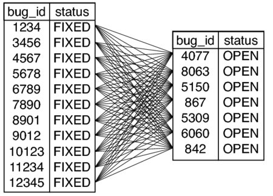 |
Figure 1. Cartesian product between fixed and open bugs |
You can visualize the Cartesian product graphically as shown in Figure Cartesian product between fixed and open bugs. Each line connecting a fixed bug to an open bug becomes a row in the interim result set (before grouping is applied). We can see this interim result set by eliminating the GROUP BY clause and aggregate functions.
SELECT p.product_id, f.bug_id AS fixed, o.bug_id AS openFROM BugsProducts pJOIN Bugs f ON (p.bug_id = f.bug_id AND f.status = 'FIXED')JOIN Bugs o ON (p.bug_id = o.bug_id AND o.status = 'OPEN')WHERE p.product_id = 1; The only relationships expressed in that query are between the Bugs-Products table and each subset of Bugs. No conditions restrict every FIXED bug from matching with every OPEN bug, and the default is that they do. The result produces twelve times seven rows.
It's all too easy to produce an unintentional Cartesian product when you try to make a query do double-duty like this. If you try to do more unrelated tasks with a single query, the total could be multiplied by yet another Cartesian product.
Besides the fact that you can get the wrong results, it's important to consider that these queries are simply hard to write, hard to modify, and hard to debug. You should expect to get regular requests for incremental enhancements to your database applications. Managers want more complex reports and more fields in a user interface. If you design intricate, monolithic SQL queries, it's more costly and time-consuming to make enhancements to them. Your time is worth something, both to you and to your project.
There are runtime costs, too. An elaborate SQL query that has to use many joins, correlated subqueries, and other operations is harder for the SQL engine to optimize and execute quickly than a more straightforward query. Programmers have an instinct that executing fewer SQL queries is better for performance. This is true assuming the SQL queries in question are of equal complexity. On the other hand, the cost of a single monster query can increase exponentially, until it's much more economical to use several simpler queries.
Always spell out all the columns you need, instead of relying on wildcards or implicit column lists.
SELECT bug_id, date_reported, summary, description, resolution, reported_by, assigned_to, verified_by, status, priority, hoursFROM Bugs;INSERT INTO Accounts (account_name, first_name, last_name, email, password_hash, portrait_image, hourly_rate)VALUES ('bkarwin', 'Bill', 'Karwin', 'bill@example.com', SHA2('xyzzy'), NULL, 49.95);All this typing seems burdensome, but it's worth it in several ways.
Remember poka-yoke?[19] You make your SQL queries more resistant to the errors and confusion described earlier when you specify the columns in the select-list of the query.
You get similar benefits when you specify columns in INSERT statements. The order of columns you specify overrides the order in the table definition, and values are assigned to the columns you intend. Newly added columns you haven't named in your statement are given default values or null. If you reference a column that has been deleted, you get an error, but troubleshooting is easier.
This is an example of the fail early principle.
If you're concerned about the scalability and throughput of your software, you should look for possible wasteful use of network bandwidth. The bandwidth of an SQL query can seem harmless during software development and testing, but it bites you when your production environment is running thousands of SQL queries per second.
Once you abandon the SQL wildcard, you're naturally motivated to leave out unneeded columns---it means less typing. This promotes more efficient use of bandwidth too.
SELECT date_reported, summary, description, resolution, status, priorityFROM Bugs;When you buy a bag of M&M's candies from the vending machine, the wrapper is a convenience, making it easy to carry the package of candies back to your desk. Once you open the bag, however, you need to treat M&M's as individuals. They roll, slide, and bounce all over the place. If you're not careful, some may fall under your desk and attract bugs. But there's no way to eat one until you tear open the bag.
In an SQL query, as soon as you want to apply an expression to a column or use a column alias or exclude columns for the sake of efficiency, you need to break open the "container" provided by the wildcard. You lose the convenience of treating the collection of columns as a single package, but you gain access to all of its contents.
You'll inevitably need to treat some columns in a query individually by employing a column alias or a function or removing a column from the list. If you skip the use of wildcards from the beginning, it'll be easier to change your query later.
|
Take all you want, but eat all you take. |
|
The frequent mistake in these kinds of password-recovery solutions is that the application allows the user to request an email containing his password in clear text. This is a dire security flaw related to the database design, and it leads to several security risks that could allow unauthorized people to gain privileged access to the application.
Let's explore these risks in the following sections, assuming our example bug-tracking database has a table Accounts, where each user's account is stored as a row in this table.
A password is typically stored in the Accounts table as a string attribute column:
CREATE TABLE Accounts ( account_id SERIAL PRIMARY KEY, account_name VARCHAR(20) NOT NULL, email VARCHAR(100) NOT NULL, password VARCHAR(30) NOT NULL);You can create an account simply by inserting one row and specifying the password as a string literal:
INSERT INTO Accounts (account_id, account_name, email, password) VALUES (123, 'billkarwin', 'bill@example.com', 'xyzzy');It's not secure to store a password in clear text or even to pass it over the network in the clear. If an attacker can read the SQL statement you use to insert a password, they can see the password plainly. This is also true for SQL statements to change a password or verify that user input matches a stored password. Hackers have several opportunities to steal a password, including the following:
Later, when the user tries to log in, your application compares the user's input to the password string stored in the database. This comparison is done as plain text, since the password itself is stored in plain text. For example, you can use a query like the following to return a 0 (false) or 1 (true), indicating whether the user's input matches the password in the database:
SELECT CASE WHEN password = 'opensesame' THEN 1 ELSE 0 END AS password_matchesFROM AccountsWHERE account_id = 123; In the previous example, the password the user entered, opensesame, is incorrect, and the query returns a zero value.
Like in the earlier section on storing passwords, interpolating the user's input string into the SQL query in plain text exposes it to discovery by an attacker.
Don't Lump Together Two Different ConditionsMost of the time, I see the authentication query place conditions for both the
account_idandpasswordcolumns in theWHEREclause:SELECT * FROM AccountsWHERE account_name = 'bill' AND password = 'opensesame';This query returns an empty result set if the account doesn't exist or if the user gave the wrong password. Your application can't separate the two causes for failed authentication. It's better to use a query that can treat the two cases as distinct. Then you can handle the failure appropriately.
For example, you may want to lock an account temporarily if you detect many failed logins, because this may indicate an attempted intrusion. However, you can't detect this pattern if you can't tell the difference between a wrong account name and a wrong password.
Since the password is stored in plain text in the database, retrieving the password in your application is simple:
SELECT account_name, email, passwordFROM AccountsWHERE account_id = 123;Your application can then send to a user's email address on request. You've probably seen one of these emails as part of the password reminder feature of any number of websites you use. An example of this kind of email is shown here:
Example of Password Recovery Email:From: daemonTo: bill@example.comSubject: password requestYou requested a reminder of the password for your account "bill".Your password is "xyzzy".Click the link below to log in to your account:http://www.example.com/login
Sending an email with the password in plain text is a serious security risk. Email can be intercepted, logged, and stored in multiple ways by hackers. It's not good enough that you use a secure protocol to view mail or that the sending and receiving mail servers are managed by responsible system administrators. Since email is routed across the Internet, it can be intercepted at other sites. Secure protocols for email aren't necessarily widespread or under your control.
The chief problem in this antipattern is that the original form of the password is readable. But you can authenticate the user's input against a password without reading it. This section describes how to implement this kind of secure password storage in an SQL database.
Encode the password using a one-way cryptographic hash function. This function transforms its input string into a new string, called the hash, that is unrecognizable. Even the length of the original string is obscured, because the hash returned by a hash function is a fixed-length string. For example, the SHA-256 algorithm converts our example password, xyzzy, to a 256-bit string of bits, usually represented as a 64-character string of hexadecimal digits:
SHA2('xyzzy') = '184858a00fd7971f810848266ebcecee5e8b69972c5ffaed622f5ee078671aed'Another characteristic of a hash is that it's not reversible. You can't recover the input string from its hash because the hashing algorithm is designed to "lose" some information about the input. A good hashing algorithm should take as much work to crack as it would to simply guess the input through trial and error.
A popular algorithm in the past has been SHA-1, but researchers have recently proved this 160-bit hashing algorithm to have insufficient cryptographic strength; a technique exists to infer the input from a hash string. This technique is very time-consuming but nevertheless takes less time than it would take to guess the password by trial and error. The National Institute of Standards and Technology (NIST) has announced a plan to phase out SHA-1 as an approved secure hashing algorithm after 2010 in favor of these stronger variants: SHA-224, SHA-256, SHA-384, and SHA-512.[21] Whether you need to comply with NIST standards or not, it's a good idea to use at least SHA-256 for passwords.
MD5 is another popular hash function, producing hash strings of 128 bits. MD5 has also been shown to be cryptographically weak, so you shouldn't use it for encoding passwords. Weaker algorithms still have uses but not for sensitive information like passwords.
The following is a redefinition of the Accounts table. The SHA-256 password hash is always 64 characters long, so define the column as a fixed-length CHAR column of that length.
CREATE TABLE Accounts ( account_id SERIAL PRIMARY KEY, account_name VARCHAR(20), email VARCHAR(100) NOT NULL, password_hash CHAR(64) NOT NULL); Hashing functions aren't part of the standard SQL language, so you may need to rely on your database brand to support hashing as an extension. For example, MySQL 6.0.5 with SSL support includes a function SHA2, which returns a 256-bit hash by default.
INSERT INTO Accounts (account_id, account_name, email, password_hash) VALUES (123, 'billkarwin', 'bill@example.com', SHA2('xyzzy'));You can validate a user's input by applying the same hash function to it and comparing the result to the value stored in the database.
SELECT CASE WHEN password_hash = SHA2('xyzzy') THEN 1 ELSE 0 END AS password_matchesFROM AccountsWHERE account_id = 123; You can lock an account easily by changing the value in the password hash to a string that the hash function can't return. For example, the string noaccess contains letters that aren't hexadecimal digits.
If you store hashes instead of passwords and the attacker gains access to your database (by searching your trash for a CDROM backup, for example), he can still attempt to guess passwords by trial and error. Guessing each password may take a long time, but he can prepare his own database of hashes of likely passwords against which to compare the hash strings he finds in your database. If only one user chose a password that is a word in the dictionary, it's easy for an attacker to find it by searching your password database for hashes that match his prepared table of hashes. He can even do this with SQL:
CREATE TABLE DictionaryHashes ( password VARCHAR(100), password_hash CHAR(64));SELECT a.account_name, h.passwordFROM Accounts AS a JOIN DictionaryHashes AS h ON a.password_hash = h.password_hash;One way to defeat this kind of "dictionary attack" is by including a salt in your password-encoding expression. A salt is a string of meaningless bytes you concatenate with the user's password, before passing the resulting string to the hash function. Even if the user chose a word in the dictionary as their password, the hash produced from a salted password won't match the hash in the attacker's hash database. For example, if the password is the word password, you can see that the hash of this word is different from a hash of the word with a few random bytes appended:
SHA2('password') = '5e884898da28047151d0e56f8dc6292773603d0d6aabbdd62a11ef721d1542d8'SHA2('password-0xT!sp9') = '7256d8d7741f740ee83ba7a9b30e7ac11fcd9dbd7a0147f4cc83c62dd6e0c45b'Each password should use a different salt value to make an attacker have to generate a new dictionary table of hashes for each password. Then he's back to square one, because cracking passwords in your database takes as much time as guessing them with trial and error.[22]
CREATE TABLE Accounts ( account_id SERIAL PRIMARY KEY, account_name VARCHAR(20), email VARCHAR(100) NOT NULL, password_hash CHAR(32) NOT NULL, salt BINARY(8) NOT NULL);INSERT INTO Accounts (account_id, account_name, email, password_hash, salt) VALUES (123, 'billkarwin', 'bill@example.com', SHA2('xyzzy' || '-0xT!sp9'), '-0xT!sp9');SELECT (password_hash = SHA2('xyzzy' || salt)) AS password_matchesFROM AccountsWHERE account_id = 123;A good length for a salt is 8 bytes. You should generate the salt randomly for each password. The previous examples show a salt string containing printable characters, but remember you can make a salt using any random, unprintable bytes.
Now that you're using a strong hashing function to encode the password before you store it and you use a salt to thwart dictionary attacks, you would think this is enough to ensure security. But the password still appears in plain text in the SQL expression, which means that it's readable if an attacker can intercept network packets or if SQL queries are logged and the log files fall into the wrong hands.
You can protect against this kind of exposure if you don't put the plain-text password into the SQL query. Instead, compute the hash in your application code, and use only the hash in the SQL query. It does an attacker little good to intercept the hash, because he can't reverse it to get the password.
You do need the salt before you can compute the hash.
The following is a PHP example using the PDO extension to get the salt, compute a hash, and run a query to validate the password against the salted hash stored in the database:
<?php$password = 'xyzzy';$stmt = $pdo->query( "SELECT salt FROM Accounts WHERE account_name = 'bill'");$row = $stmt->fetch();$salt = $row[0];$hash = hash('sha256', $password . $salt);$stmt = $pdo->query(" SELECT (password_hash = '$hash') AS password_matches; FROM Accounts AS a WHERE a.acct_name = 'bill'");$row = $stmt->fetch();if ($row === false) { // account 'bill' does not exist} else { $password_matches = $row[0]; if (!$password_matches) { // password given was incorrect }} The hash function is guaranteed to return only hexadecimal digits, so there's no risk of SQL injection (see the Chapter SQL Injection).
In web applications, there's another place where attackers have an opportunity to intercept data on the network: between the user's browser and the web application server. When the user submits a login form, the browser sends his password in plain text to the server, where it's used to compute a hash as described earlier. You could protect against this by encoding the password into a hash in the user's browser before sending the form data. But this is awkward because you need to retrieve the salt associated with that password before you can compute the correct hash. A good compromise is to use a secure HTTP connection whenever sending a password from browser to the application.
Now that the password is stored in a more secure way, you still need to solve the original objective: help users who have forgotten their password. You can't recover their password, because now your database stores a hash instead of the password. You can't reverse the hash any more easily than an attacker could. But you can allow a user access in other ways. Two sample implementations are described here.
The first alternative is that when a user who has forgotten his password requests help, instead of emailing his password to him, your application can send an email with a temporary password generated by the application. For additional security, the application may expire the temporary password after a short time, so if the email is intercepted, it's more likely that it will not allow unauthorized access. Also, the application should be designed so that the user is forced to change the password as his first action when he logs in.
Example of Email with a System-Generated Temporary PasswordFrom: daemonTo: bill@example.comSubject: password resetYou requested to reset your password for your account.Your temporary password is "p0trz3b1e".This password will cease to allow access after one hour.Click the link below to log in to your account andset your new password:http://www.example.com/login
In a second alternative, instead of including a new password in an email, the request is logged in a database table and assigned a unique token as an identifier:
CREATE TABLE PasswordResetRequest ( token CHAR(32) PRIMARY KEY, account_id BIGINT UNSIGNED NOT NULL, expiration TIMESTAMP NOT NULL, FOREIGN KEY (account_id) REFERENCES Accounts(account_id));SET @token = MD5('billkarwin' || CURRENT_TIMESTAMP);INSERT INTO PasswordResetRequest (token, account_id, expiration) VALUES (@token, 123, CURRENT_TIMESTAMP + INTERVAL 1 HOUR);Then you include the token in an email. You could also send the token in some other message, such as SMS, as long as it's an address that's already associated with the account requesting a password reset. That way, if a stranger requests a password reset illicitly, it sends a spurious email only to the actual owner of the account.
Example of Email with a Temporary Link to a Password Reset PageFrom: daemonTo: bill@example.comSubject: password resetYou requested to reset your password for your account.Click the link below within one hour to change your password.After one hour, the link below will no longer work and yourpassword will remain unchanged.http://www.example.com/reset_password?token=f5cabff22532bd0025118905bdea50da
When the application receives a request for the special reset_password screen, the value in the token parameter must match a row in the PasswordResetRequest table, and the expiration timestamp on this row must still be upcoming, not past. The account_id on this row references the Accounts table, so the token is restricted to enable a password reset of only one specific account.
Of course, it would be harmful if the wrong people could access this page. Simple restrictions reduce this risk, such as giving the special screen a short expiration period and making sure the screen does not show the account for which the password is being set.
The state of cryptography is constantly advancing, trying to stay ahead of attack technology. The techniques in this chapter will improve a great number of typical applications, but if you need to develop very secure systems, you should move on to more advanced techniques such as the following:
|
If you can read passwords, so can a hacker. |
|
Quote me as saying I was misquoted.
In March 2010, serial computer hacker Albert Gonzalez was convicted for his role in the largest identity theft in history. He acquired an estimated 130 million credit and debit card numbers by hacking into ATM machines and payment systems of several major retail store chains and the credit-card processing companies that serve them.
Gonzales broke the previous record, which he also held, for stealing 45.6 million credit and debit card numbers in 2006. He performed that earlier crime by exploiting vulnerable wireless networks.
How did Gonzalez nearly triple his own record? We imagine a daring plot from a James Bond movie, with black-clad agents rappelling down elevators shafts, using supercomputers to crack state-of-the-art encrypted passwords, or sabotaging electrical power to an entire city.
The indictment describes a more mundane reality. Gonzalez exploited a vulnerability that is one of the most common security weaknesses on the Internet. He was able to use an attack technique called SQL Injection to gain privileged access to upload files to the corporate victims' servers. After Gonzalez and his coconspirators gained this access, the indictment states:[23]
Executing the Attacks: The Malware...they would install "sniffer" programs that would capture credit and debit card numbers, corresponding Card Data, and other information on a real-time basis as the information moved through the Corporate Victims' credit and debit card processing networks, and then periodically transmit that information to the coconspirators.
The retailers whose websites Gonzalez attacked have said that they've made changes to correct these security holes. However, they've plugged only one hole, while new web applications are created every day that contain other holes. SQL Injection attacks remain an easy target for hackers, because software developers don't understand the nature of the vulnerability or how to write code to prevent it.
SQL is intended to be used in concert with application code. When you build SQL queries as strings and combine application variables into the string, this is commonly called dynamic SQL.[24]
<?php$sql = "SELECT * FROM Bugs WHERE bug_id = $bug_id";$stmt = $pdo->query($sql); This simple example shows interpolating a PHP variable into a string. We intend that $bug_id is an integer so that by the time the database receives the query, the value of $bug_id is part of the query.
Dynamic SQL queries are a natural way to get the most out of a database. When you use application data to specify how you want to query a database, you're using SQL as a two-way language. Your application is having a kind of dialogue with the database.
However, it's not too hard to make your software do tasks that you want it to do---the harder challenge is making your software secure so it doesn't allow actions that you don't want it to do. Software defects resulting from SQL Injection are failures to satisfy the latter.
SQL injection happens when you interpolate some content into an SQL query string and the content modifies the syntax of your query in ways you didn't intend. In the classic example of SQL Injection, the value you interpolate into your string finishes the SQL statement and executes a second complete statement. For instance, if the value of the $bug_id variable is 1234; DELETE FROM Bugs, the resulting SQL shown earlier would look like this:
This type of SQL Injection can be spectacular, as shown in Figure Exploits of a mom.[25] Usually these flaws are more subtle---but still dangerous.
Figure 1. Exploits of a mom |
Suppose you are writing a web interface to view the bugs database and one page allows you to view a project based on its name:
<?php$project_name = $_REQUEST["name"];$sql = "SELECT * FROM Projects WHERE project_name = '$project_name'";The trouble begins when your team is hired to develop software for O'Hare International Airport in Chicago. You naturally give the project a name like "O'Hare." How do you submit a request to view the project in your web application?
http://bugs.example.com/project/view.php?name=O'Hare
Your PHP code takes the value of that request parameter and interpolates it into the SQL query, but it produces a query that neither you nor the user intended:
Because a string is terminated by the first quote character it finds, the resulting expression contains a short string, 'O', followed by some extra characters, Hare', that make no sense in this context. The database can only report this as a syntax error. This is an honest accident. The risk of anything bad happening is low, because a statement with a syntax error can't execute. The greater risk is that the statement executes without error but does something you didn't intend.
SQL Injection becomes a greater threat when an attacker can use this to manipulate your SQL statements. For example, your application may allow a user to change his or her password:
<?php$password = $_REQUEST["password"];$userid = $_REQUEST["userid"];$sql = "UPDATE Accounts SET password_hash = SHA2('$password') WHERE account_id = $userid";A clever attacker who can guess how the request parameters are used in your SQL statement can send a carefully chosen string to exploit it:
http://bugs.example.com/setpass?password=xyzzy&userid=123 OR TRUE
After interpolating the string from the userid parameter into your SQL expression, the string has changed the syntax of the statement. Now it changes the password for every account in the database, not for one specific account:
UPDATE Accounts SET password_hash = SHA2('xyzzy')WHERE account_id = 123 OR TRUE;This is key to understanding SQL Injection and also how to combat it: SQL Injection works by changing the syntax of the SQL statement before the statement is parsed. As long as you insert dynamic portions to the statement before it's parsed, you have a risk of SQL Injection.
There are countless ways a maliciously chosen string can alter the behavior of your SQL statements. It's limited only by the imagination of the attacker and your ability to protect your SQL statements.
Now that we know the threat of SQL Injection, the next natural question is, what do we need to do to protect code from being exploited? You may have read a blog or an article that described some single technique and claimed it's the universal remedy against SQL Injection. In reality, none of these techniques is proof against all forms of SQL Injection, so you need to use all of them in different cases.
The oldest way to protect SQL queries from accidental unmatched quote characters is to escape any quote characters to prevent them from becoming the end of the quoted string. In standard SQL, you can use two quote characters to make one literal quote character:
Most brands of database also support the backslash to escape the following quote character, just like most other programming languages do:
The idea is that you transform application data before you interpolate it into SQL strings. Most SQL programming interfaces provide a convenience function. For example, in PHP's PDO extension, use the quote function to both delimit a string with quote characters and escape any literal quote characters within the string.
<?php$project_name = $pdo->quote($_REQUEST["name"]);$sql = "SELECT * FROM Projects WHERE project_name = $project_name";This technique can reduce the risk of SQL Injection resulting from unmatched quote characters within the dynamic content. But it doesn't work as well for nonstring content.
<?php$password = $pdo->quote($_REQUEST["password"]);$userid = $pdo->quote($_REQUEST["userid"]);$sql = "UPDATE Accounts SET password_hash = SHA2($password) WHERE account_id = $userid";UPDATE Accounts SET password_hash = SHA2('xyzzy')WHERE account_id = '123 OR TRUE' You can't compare a numeric column directly to a string containing digits in all brands of database. Some databases may implicitly cast the string to a sensible numeric equivalent, but in standard SQL you have to use the CAST function deliberately to convert a string to a numeric data type.
There are also obscure corner cases where strings in non-ASCII character sets can pass through a function intended to escape the quote characters but leave unescaped quote characters intact.[26]
The solution most frequently cited as a panacea to SQL Injection is to use query parameters. Instead of interpolating dynamic values into your SQL string, leave parameter placeholders in the string as you prepare the query. Then provide a parameter value as you execute the prepared query.
<?php$stmt = $pdo->prepare("SELECT * FROM Projects WHERE project_name = ?");$params = array($_REQUEST["name"]);$stmt->execute($params);Many programmers recommend this solution because you don't have to escape dynamic content or worry about flawed escaping functions. In fact, query parameters are a very strong defense against SQL Injection. But parameters aren't a universal solution because the value of a query parameter is always interpreted as a single literal value.
<?php$stmt = $pdo->prepare("SELECT * FROM Bugs WHERE bug_id IN ( ? )");$stmt->execute(array("1234,3456,5678"));<?php$stmt = $pdo->prepare("SELECT * FROM ? WHERE bug_id = 1234");$stmt->execute(array("Bugs"));<?php$stmt = $pdo->prepare("SELECT * FROM Bugs ORDER BY ?");$stmt->execute(array("date_reported"));<?php$stmt = $pdo->prepare("SELECT * FROM Bugs ORDER BY date_reported ?");$stmt->execute(array("DESC"));Use of stored procedures is another method that many software developers claim is proof against SQL Injection vulnerabilities. Typically, stored procedures contain fixed SQL statements, parsed when you define the procedure.
However, it's possible to use dynamic SQL in stored procedures unsafely. In the following example, the input_userid argument is interpolated into the SQL query verbatim, which is unsafe.
CREATE PROCEDURE UpdatePassword(input_password VARCHAR(20), input_userid VARCHAR(20))BEGIN SET @sql = CONCAT('UPDATE Accounts SET password_hash = SHA2(', QUOTE(input_password), ') WHERE account_id = ', input_userid); PREPARE stmt FROM @sql; EXECUTE stmt;END Using dynamic SQL in a stored procedure is no more and no less safe than using dynamic SQL in application code. The input_userid argument can contain harmful content and produce an unsafe SQL statement:
UPDATE Accounts SET password_hash = SHA2('xyzzy')WHERE account_id = 123 OR TRUE;You might see advocates of data access frameworks claim that their library protects your code from SQL Injection risks. This is a false claim for any framework that allows you to write SQL statements as strings.
Practice Good HygieneAfter I gave a presentation on a PHP data access framework that I had developed, a member of the audience approached me and asked, "Does your framework prevent SQL Injection?" I answered that it provides functions for quoting strings and using query parameters.
The young man looked puzzled. "But can it prevent SQL Injection?" he repeated. He was looking for an automatic way to ensure that he doesn't make a mistake that he doesn't know how to recognize himself.
I told him the framework prevents SQL Injection like a toothbrush prevents cavities. You have to use it consistently to get the benefit.
No framework can force you to write safe SQL code. A framework may provide convenience functions to help you, but it's easy to bypass these functions and instead use common string manipulation to build an SQL statement unsafely.
There is no single technique for securing your SQL code. You should learn all of the following techniques and use them in appropriate cases.
Instead of wondering whether some input contains harmful content, you should strip away any characters that aren't valid for that input. That is, if you need an integer, use only the part of the content that comprises an integer. The best way to do this depends on your programming language; for example, in PHP, use the filter extension:
<?php$bugid = filter_input(INPUT_GET, "bugid", FILTER_SANITIZE_NUMBER_INT);$sql = "SELECT * FROM Bugs WHERE bug_id = {$bugid}";$stmt = $pdo->query($sql);You can use type casting functions for simple cases like numbers:
<?php$bugid = intval($_GET["bugid"]);$sql = "SELECT * FROM Bugs WHERE bug_id = {$bugid}";$stmt = $pdo->query($sql);You can also use regular expressions to match safe substrings, filtering out illegitimate content:
<?php$sortorder = "date_reported"; // defaultif (preg_match("/[_[:alnum:]]+/", $_GET["order"], $matches)) { $sortorder = $matches[1];}$sql = "SELECT * FROM Bugs ORDER BY {$sortorder}";$stmt = $pdo->query($sql);When the dynamic parts of your query are simple values, you should use query parameters to separate them from SQL expressions.
<?php$sql = "UPDATE Accounts SET password_hash = SHA2(?) WHERE account_id = ?";$stmt = $pdo->prepare($sql);$params = array($_REQUEST["password"], $_REQUEST["userid"]);$stmt->execute($params); We saw examples in the "Antipattern" section that a parameter can substitute only for a single value. If you add the parameter values after the RDBMS parses the SQL statement, no SQL Injection attack can change the syntax of a parameterized query. Even if an attacker tries to use a malicious parameter value such as 123 OR TRUE, the RDBMS interprets the parameter as a value. At worst, the query fails to apply to any rows; it's not likely to apply to the wrong rows. The malicious value would result in a relatively safe SQL statement equivalent to the following:
UPDATE Accounts SET password_hash = SHA2('xyzzy')WHERE account_id = '123 OR TRUE'You should use query parameters when you need to combine application variables as literal values in SQL expressions.
Query parameters are usually the best solution, but in rare cases a query with parameter placeholders causes the query optimizer to make odd decisions about which indexes to use.
For example, suppose you have a column in the Accounts table called is_active. This column stores a true value for 99 percent of the rows, giving it an uneven distribution of values. A query that searches for is_active = false would benefit from an index, but it would be a waste to read the index for a query searching for is_active = true. However, if you used a parameter in the expression is_active = ?, the optimizer can't know which value you will supply when you execute the prepared query, so it's liable to choose the wrong optimization plan.
In exotic cases like this, it could be better to interpolate values directly into the SQL statement, in spite of the general recommendation to use query parameters. If you do this, you should quote the strings carefully.
<?php$quoted_active = $pdo->quote($_REQUEST["active"]);$sql = "SELECT * FROM Accounts WHERE is_active = {$quoted_active}";$stmt = $pdo->query($sql); Make sure you use a function that is mature and well-tested against obscure SQL security issues. Most data access libraries include such a string-quoting function. For example, in PHP, use PDO::quote. Don't try to implement your own quoting function unless you have studied the security risks thoroughly.
Query parameters and escaping techniques help you combine literal values into SQL expressions, but they don't help with other parts of a statement, such as table or column identifiers or SQL keywords. You need another solution to make these parts of a query dynamic.
Suppose your users want to choose how to sort lists of bugs, for instance by status or by date created. They also want to choose the direction of sorting.
SELECT * FROM Bugs ORDER BY status ASCSELECT * FROM Bugs ORDER BY date_reported DESC In the following example, a PHP script accepts request parameters order and dir, and your code interpolates these user choices into the SQL query to be a column name and a keyword.
<?php$sortorder = $_REQUEST["order"];$direction = $_REQUEST["dir"];$sql = "SELECT * FROM Bugs ORDER BY $sortorder $direction";$stmt = $pdo->query($sql); The script assumes that order contains the name of a column and that dir contains either ASC or DESC. This is not a safe assumption, because a user can send any parameter values in a web request.
Instead, you can use the request parameters to look up predefined values and then use these values in your SQL query.
$sortorders array that maps user choices as keys and SQL column names as values. Declare a $directions array that maps user choices as keys and SQL keywords ASC and DESC as values. $sortorders = array( "status" => "status", "date" => "date_reported" );$directions = array( "up" => "ASC", "down" => "DESC" );$sortorder and $dir to default values in case the user's choices aren't in the arrays. $sortorders and $directions, use the corresponding values. if (array_key_exists($_REQUEST["order"], $sortorders)) { $sortorder = $sortorders[ $_REQUEST["order"] ];}if (array_key_exists($_REQUEST["dir"], $directions)) { $direction = $directions[ $_REQUEST["dir"] ];}$sortorder and $direction variables in your SQL query, because they can contain only values you declared in your code. $sql = "SELECT * FROM Bugs ORDER BY {$sortorder} {$direction}";$stmt = $pdo->query($sql);Using this technique has several advantages:
The choices are hard-coded in your application, but this is appropriate for table names, column names, and SQL keywords. Choices over the full range of strings or numbers are typical for data values, but not for identifiers or syntax.
The best way to catch flaws is to get another pair of eyes to look at it. Ask a teammate who is familiar with SQL Injection risks to help you inspect your code. Don't let pride or ego keep you from doing the right thing---you may be embarrassed now over missing a coding mistake, but would you rather have to admit responsibility later for a security flaw that allowed hackers to exploit your website?
In an inspection for SQL Injection, use the following guidelines:
Code inspection is the most accurate and economical way to find SQL Injection flaws. You should budget your time for this and treat it as a mandatory activity. You can also return the favor by inspecting your teammates' code.
|
Let users input values, but never let users input code. |
|
Most people's first reaction to a perceived gap is naturally to want to seal the gap. There are two ways you might do this.
Instead of allocating a new primary key value using the automatic pseudokey mechanism, you might want to make any new row use the first unused primary key value. This way, as you insert data, you naturally make gaps fill in.
|
|
|
1 | OPEN | Open RoundFile |
2 | FIXED | ReConsider |
4 | OPEN | ReConsider |
3 | NEW | Visual TurboBuilder |
However, you have to run an unnecessary self-join query to find the lowest unused value:
SELECT b1.bug_id + 1FROM Bugs b1LEFT OUTER JOIN Bugs AS b2 ON (b1.bug_id + 1 = b2.bug_id)WHERE b2.bug_id IS NULLORDER BY b1.bug_id LIMIT 1; Earlier in the book, we looked at a concurrency issue when you try to allocate a unique primary key value by running a query such as SELECT MAX(bug_id)+1 FROM Bugs.[27] This has the same flaw when two applications may try to find the lowest unused value at the same time. As both try to use the same value as a primary key value, one succeeds, and the other gets an error. This method is both inefficient and prone to errors.
You might find it's more urgent to make the primary key values be contiguous, and waiting for new rows to fill in the gaps won't fix the issue quickly enough. You might think to use a strategy of updating the key values of existing rows to eliminate gaps and make all the values contiguous. This usually means you find the row with the highest primary key value and update it with the lowest unused value. For example, you could update the value 4 to 3:
|
|
|
1 | NEW | Open RoundFile |
2 | FIXED | ReConsider |
3 | DUPLICATE | ReConsider |
To accomplish this, you need to find an unused key value using a method similar to the previous one for inserting new rows. You also need to run the UPDATE statement to reassign the primary key value. Either one of these steps is susceptible to concurrency issues. You need to repeat the steps many times to fill a wide gap in the numbers.
You must also propagate the changed value to all child records that reference the rows you renumber. This is easiest if you declared foreign keys with the ON UPDATE CASCADE option, but if you didn't, you would have to disable constraints, update all child records manually, and restore the constraints. This is a laborious, error-prone process that can interrupt service in your database, so if you feel you want to avoid it, you're right.
Even if you do accomplish this cleanup, it's short-lived. When a pseudokey generates a new value, the value is greater than the last value it generated (even if the row with that value has since been deleted or changed), not the highest value currently in the table, as some database programmers assume. Suppose you update the row with the greatest bug_id value 4 to the lower unused value to fill a gap. The next row you insert using the default pseudokey generator will allocate 5, leaving a new gap at 4.
Mitch Ratcliffe said, "A computer lets you make more mistakes faster than any other human invention in human history…with the possible exception of handguns and tequila."[28]
The story at the beginning of this chapter describes some hazards of renumbering primary key values. If another system external to your database depends on identifying rows by their primary keys, then your updates invalidate the data references in that system.
It's not a good idea to reuse the row's primary key value, because a gap could be the result of deleting or rolling back a row for a good reason. For example, suppose a user with account_id 789 is barred from your system for sending offensive emails. Your policies require you to delete the offender's account, but if you recycle primary keys, you would subsequently assign 789 to another user. Since some offensive emails are still waiting to be read by some recipients, you could get further complaints about account 789. Through no fault of his own, the poor user who now has that number catches the blame.
Don't reallocate pseudokey values just because they seem to be unused.
The values in any primary key must be unique and non-null so you can use them to reference individual rows, but that's the only rule---they don't have to be consecutive numbers to identify rows.
Most pseudokey generators return numbers that look almost like row numbers, because they're monotonically increasing (that is, each successive value is one greater than the preceding value), but this is only a coincidence of their implementation. Generating values in this way is a convenient way to ensure uniqueness.
Don't confuse row numbers with primary keys. A primary key identifies one row in one table, whereas row numbers identify rows in a result set. Row numbers in a query result set don't correspond to primary key values in the table, especially when you use query operations like JOIN, GROUP BY, or ORDER BY.
There are good reasons to use row numbers, for example to return a subset of rows from a query result. This is often called pagination, like a page of an Internet search. To select a subset in this way, you need to use true row numbers that are increasing and consecutive, regardless of the form of the query.
SQL:2003 specifies window functions including ROW_NUMBER, which returns consecutive numbers specific to a query result set. A common use of row numbering is to limit the query result to a range of rows:
SELECT t1.* FROM (SELECT a.account_name, b.bug_id, b.summary, ROW_NUMBER() OVER (ORDER BY a.account_name, b.date_reported) AS rn FROM Accounts a JOIN Bugs b ON (a.account_id = b.reported_by)) AS t1WHERE t1.rn BETWEEN 51 AND 100;These functions are currently supported by many leading brands of database, including Oracle, Microsoft SQL Server 2005, IBM DB2, PostgreSQL 8.4, and Apache Derby.
MySQL, SQLite, Firebird, and Informix don't support SQL:2003 window functions, but they have proprietary syntax you can use in the scenario presented in this section. MySQL and SQLite support a LIMIT clause, and Firebird and Informix support a query option with keywords FIRST and SKIP.
You could also generate random pseudokey values, as long as you don't use any number more than once. Some databases support a globally unique identifier (GUID) for this purpose.
A GUID is a pseudorandom number of 128 bits (usually represented by 32 hexadecimal digits). For practical purposes, a GUID is unique, so you can use it to generate a pseudokey.
The following example uses Microsoft SQL Server 2005 syntax:
CREATE TABLE Bugs ( bug_id UNIQUEIDENTIFIER DEFAULT NEWID(), -- . . .);INSERT INTO Bugs (bug_id, summary)VALUES (DEFAULT, 'crashes when I save');This creates a row like the following:
|
|
| Crashes when I save |
You gain at least two advantages over traditional pseudokey generators when you use GUIDs:
The latter point leads to some of the disadvantages:
Now that you know the problems caused by renumbering pseudokeys and some alternative solutions for related goals, you still have one big problem to solve: how do you fend off an order from a boss who wants you to tidy up the database by closing the gaps in a pseudokey? This is a problem of communication, not technology. Nevertheless, you might need to manage your manager to defend the data integrity of your database.
|
Use pseudokeys as unique row identifiers; they're not row numbers. |
|
Developers commonly practice the See No Evil antipattern in two forms: first, ignoring the return values of a database API; and second, reading fragments of SQL code interspersed with application code. In both cases, developers fail to use information that is easily available to them.
_<?php1»$pdo = new PDO("mysql:dbname=test;host=db.example.com", _ "dbuser", "dbpassword");_$sql = "SELECT bug_id, summary, date_reported FROM Bugs_ WHERE assigned_to = ? AND status = ?";2»$stmt = $dbh->prepare($sql); 3»$stmt->execute(array(1, "OPEN")); 4»$bug = $stmt->fetch(); This code is concise, but there are several places in this code where status values returned from functions could indicate a problem, but you'll never know about it if you ignore the return values.
Probably the most common error from a database API occurs when you try to create a database connection, for example at «1». You could accidentally mistype the database name or server hostname or you could get the user or password wrong, or the database server could be unreachable. An error with instantiating a PDO connection throws an exception, which would terminate the example script shown previously.
The call to prepare at «2» could return false if you have a simple syntax error caused by a typo or an imbalanced parenthesis or a misspelled column name. If this happens, the attempt to call execute as a method of $stmt at «3» would be a fatal error because the value false isn't an object.
PHP Fatal error: Call to a member function execute() on a non-object The call to execute could also fail, for example, because the statement violates a constraint or exceeds access privileges. The method also returns false on error.
The call to fetch at «4» would return false if any other error occurs, such as if the connection to the RDBMS fails.
Figure 1. A fatal error in PHP results in a blank screen |
Programmers with attitudes like Mr. Davis aren't uncommon. They may feel that checking return values and exceptions adds nothing to their code, because those cases aren't supposed to happen anyway. Also, the extra code is repetitive and makes an application ugly and hard to read. It definitely adds no coolness.
But users don't see the code; they only see the output. When a fatal error goes unhandled, the user may see only a blank white screen, as in Figure A fatal error in PHP results in a blank screen, or else an incomprehensible exception message. When this happens, it's little consolation that the application code is tidy and concise.
Another common bad habit that fits the See No Evil antipattern is to debug by staring at application code that builds an SQL query as a string. This is difficult because it's hard to visualize the resulting SQL string after you build it with application logic, string concatenation, and extra content from application variables. Trying to debug in this way is like trying to solve a jigsaw puzzle without looking at the photo on the box.
For a simple example, let's look at a type of question I see frequently from developers. The following code builds a query conditionally by concatenating a WHERE clause if the script needs to search for a specific bug instead of a collection of bugs.
<?php$sql = "SELECT * FROM Bugs";if ($bug_id) { $sql .= "WHERE bug_id = " . intval($bug_id);}$stmt = $pdo->prepare($sql); Why would the query in this example give an error? The answer is clearer if you look at the full $sql string resulting from the concatenation:
There's no whitespace between Bugs and WHERE, which gives the query invalid syntax, as though it were reading a table called BugsWHERE, followed by an SQL expression in an invalid context. The code concatenated the strings with no space between them.
Developers waste an unbelievable amount of time and energy trying to debug problems like this by looking at the code that builds the SQL, instead of looking at the SQL itself.
Though you might think that the absence of code is by nature difficult to spot, many modern IDE products highlight instances in your code where you ignore a return value from a function that returns one or where your code calls a function but neglects to handle a checked exception.[29] You could also encounter the See No Evil antipattern if you hear phrases like the following:
Anyone who enjoys dancing knows that missteps are inevitable. The secret to remaining graceful is to know how to recover. Give yourself a chance to notice the cause of the mistake. Then you can react quickly and seamlessly, getting back into rhythm before anyone has noticed your gaffe.
Checking return status and exceptions from database API calls is the best way to ensure that you haven't missed a step. The following example shows code that checks the status after each call that could cause an error:
_<?php_try {_ $pdo = new PDO("mysql:dbname=test;host=localhost",_ "dbuser", "dbpassword");1»} catch (PDOException $e) { _ report_error($e->getMessage());_ return;_}__$sql = "SELECT bug_id, summary, date_reported FROM Bugs_ WHERE assigned_to = ? AND status = ?";_2»if (($stmt = $pdo->prepare($sql)) === false) { _ $error = $pdo->errorInfo();_ report_error($error[2]);_ return;_}_3»if ($stmt->execute(array(1, "OPEN")) === false) { _ $error = $stmt->errorInfo();_ report_error($error[2]);_ return;_}_4»if (($bug = $stmt->fetch()) === false) { _ $error = $stmt->errorInfo();_ report_error($error[2]);_ return;_} The code at «1» catches the exception that is thrown if a database connection fails. The other functions return false when there's a problem. After checking for a problem at «2», «3», and «4», you can get more information from the database connection object or the statement object.
It's also important to use the actual SQL query to debug a problem, instead of the code that produces an SQL query. Many simple mistakes, such as misspellings or imbalanced quotes or parentheses, are apparent instantly, even though they're obscure and puzzling otherwise.
Using an object-relational mapping (ORM) framework that builds and executes SQL queries transparently can make debugging complicated. If you don't have access to the content of the SQL query, how can you observe it for debugging? Some ORM frameworks solve this by sending generated SQL to a log.
Finally, most database brands provide their own logging mechanism on the database servers instead of in application client code. If you can't enable SQL logging in the application, you can still monitor queries as the database server executes them.
|
Troubleshooting code is already hard enough. |
Don't hinder yourself by doing it blind. |
|
Humans are allergic to change. They love to say, "We've always done it this way." I try to fight that. That's why I have a clock on my wall that runs counterclockwise.
One of my earliest jobs gave me a lesson in the importance of using software engineering best practices, after a tragic accident left me responsible for an important database application.
I interviewed for a contract job at Hewlett-Packard to develop and maintain an application on UNIX, written in C with HP ALLBASE/SQL. The manager and staff interviewing me told me sadly that their programmer who had worked on that application was killed in a traffic accident. No one else in their department knew how to use UNIX or anything about the application.
After I started the job, I found that the developer had never written documentation or tests for this application, and he never used a source code control system or even code comments. All his code resided in a single directory, including code that was part of the live system, code that was under development, and code that was no longer used.
This project had high technical debt---a consequence of using shortcuts instead of best practices.[31] Technical debt causes risk and extra work in a project until you pay it off by refactoring, testing, and documenting.
I worked for six months to organize and document the code for what was really a fairly modest application, because I had to spend a lot of my time supporting its users and continuing development.
There was obviously no way that I could ask my predecessor to help me come up to speed on the project. The experience really demonstrated the impact of letting technical debt get out of control.
Quality is simply testing to most software developers, but that's only quality control---only part of the story. The full life cycle of software engineering involves quality assurance, which includes three parts:
You need to do all three of these to perform QA correctly, although in some software methodologies, you don't necessarily have to do them in that order.
You can achieve quality assurance in database development by following best practices in documentation, source code control, and testing.
There's no such thing as self-documenting code. Although it's true that a skilled programmer can decipher most code through a combination of careful analysis and experimentation, this is laborious.[32] Also, code can't tell you about missing features or unsolved problems.
You should document the requirements and implementation of a database just as you do application code. Whether you're the original designer of the database or you're inheriting a database designed by someone else, use the following checklist to document a database:
Entity-relationship diagram:
The single most important piece of documentation for a database is an ER diagram showing the tables and their relationships. Several chapters in this book use a simple form of ER diagrams. More complex ER diagrams have notation for columns, keys, indexes, and other database objects.
Some diagramming software packages include elements for ER diagram notation. Some tools can even reverse-engineer an SQL script or a live database and produce an ER diagram.
One caveat is that databases can be complex and have so many tables that it's impractical to use a single diagram. In this case, you should decompose it into several diagrams. Usually you can choose natural subgroups of tables so each diagram is readable enough to be useful and not overwhelming to the reader.
Tables, columns, and views:
You also need written documentation for your database, because an ER diagram isn't the right format to describe the purpose and usage of each table, column, and other object.
Tables need a description of what type of entity the table models. For example,Bugs,Products, andAccountsare pretty clear, but what about a lookup table likeBugStatusor an intersection table likeBugsProductsor a dependent table likeComments? Also, how many rows do you anticipate each table to have? What queries against this table do you expect? What indexes exist in this table?
Columns each have a name and a data type, but that doesn't tell the reader what the column's values mean. What values make sense in that column (it's rarely the full range of the data type)? For columns storing a quantitative value, what is the unit of measurement? Does the column allow nulls or not, and why? Does it have a unique constraint, and if so, why?
Views store frequently used queries against one or more tables. What made it worthwhile to create a given view? What application or user is expected to use the view? Was the view intended to abstract a complex relationship of tables? Does it exist as a way to allow unprivileged users to query a subset of rows or columns in a privileged table? Is the view updatable?
Relationships:
Referential integrity constraints implement dependencies between tables, but this might not tell everything that you intend the constraints to model. For example,Bugs.reported_byis not nullable, butBugs.assigned_tois nullable. Does that mean a bug can be fixed before it's assigned? If not, what are the business rules for when the bug must be assigned?
In some cases, you may have implicit relationships but no constraints for them. Without documentation, it's hard to know where these relationships exist.
Triggers:
Data validation, data transformation, and logging database changes are examples of tasks for a trigger. What business rules are you implementing in triggers?
Stored procedures:
Document your stored procedures like an API. What problem is the procedure solving? Does a procedure perform any changes to data? What are the data types and meanings of the input and output parameters? Do you intend the procedure to replace a certain type of query to eliminate a performance bottleneck? Do you use the procedure to grant unprivileged users access to privileged tables?
SQL Security:
What database users do you define for applications to use? What access privileges do each of these users have? What SQL roles do you provide, and which users can use them? Are any users designated for specific tasks, such as backups or reports? What system-level security provisions do you use, such as if the client must reach the RDBMS server via SSL? What measures do you take to detect and block attempts at illicit authentication, such as brute-force password guessing? Have you done a thorough code review for SQL Injection vulnerabilities?
Database infrastructure:
This information is chiefly used by IT staff and DBAs, but developers need to know some of it too. What RDBMS brand and version do you operate? What is your database server hostname? Do you use multiple database servers, replication, clusters, proxies, and so on? What is your network organization and the port number used by the database server? What connection options do client applications need to use? What are the database user passwords? What are your database backup policies?
Object-relational mapping:
Your project may implement some database-handling logic in application code, as part of an layer of ORM-based code classes. What business rules are implemented in this way? Data validation, data transformation, logging, caching, or profiling?
Developers don't like to maintain engineering documentation. It's hard to write, it's hard to keep up-to-date, and it's dispiriting when few people read what you do write. But even battle-hardened, extreme programmers know that they need to document the database, even if they document no other part of their software.[33]
If your database server failed completely, how would you re-create a database? What's the best way to track a complex upgrade to your database design? How would you back out a change?
We know how we would use a source control system to manage application code, solving similar problems of software development. A project under source control should include everything you need to rebuild and redeploy the project if your existing deployment explodes. Source control also serves as a history of changes and an incremental backup so you can reverse any of these changes.
You can use source control with your database code and get similar benefits for development.
You should check into source control the files related to your database development, including the following:
Data definition scripts:
All brands of database provide ways to execute SQL scripts containingCREATE TABLEand other statements that define the database objects.
Triggers and procedures:
Many projects supplement application code with routines stored in the database. Your application probably won't work without these routines, so they count as part of your project's code.
Bootstrap data:
Lookup tables may contain some set of data that represents an initial state of your database, before any users enter new data. You should keep bootstrap data to help if you need to re-create a database from your project source. Also called seed data.
ER diagrams and documentation:
These files aren't code, but they're closely tied to the code, describing database requirements, implementation, and integration with the application. As the project evolution results in changes to both the database and the application, you should keep these files up-to-date. Make sure the documents describe the current designs.
DBA scripts:
Most projects have a collection of data-handling jobs that run outside the application. These include tasks for import/export, synchronization, reporting, backups, validation, testing, and so on. These may be written as SQL scripts, not part of a conventional application programming language.
Make sure your database code files are associated with the application code that uses that database. Part of the benefit of using source control is that if you check out your project from source control given a certain revision number, date, or milestone, the files should work together. Use the same source control repository for both application code and database code.
The final part of quality assurance is quality control---validating that your application does what it set out to do. Most professional developers are familiar with techniques to write automated tests to validate application code behavior. One important principle of testing is isolation, testing only one part of the system at a time so that if a defect exists, you can narrow down where it exists as precisely as possible.
We can extend the practice of isolation testing to the database by validating the database structure and behavior independently from your application code.
The following example shows a unit test script using the PHPUnit test framework:[34]
<?phprequire_once "PHPUnit/Framework/TestCase.php";class DatabaseTest extends PHPUnit_Framework_TestCase{ protected $pdo; public function setUp() { $this->pdo = new PDO("mysql:dbname=bugs", "testuser", "xxxxxx"); } public function testTableFooExists() { $stmt = $this->pdo->query("SELECT COUNT(*) FROM Bugs"); $err = $this->pdo->errorInfo(); $this->assertType("object", $stmt, $err[2]); $this->assertEquals("PDOStatement", get_class($stmt)); } public function testTableFooColumnBugIdExists() { $stmt = $this->pdo->query("SELECT COUNT(bug_id) FROM Bugs"); $err = $this->pdo->errorInfo(); $this->assertType("object", $stmt, $err[2]); $this->assertEquals("PDOStatement", get_class($stmt)); } static public function main() { $suite = new PHPUnit_Framework_TestSuite(__CLASS__); $result = PHPUnit_TextUI_TestRunner::run($suite); }}DatabaseTest::main();You can use the following checklist for tests that validate your database:
Tables, columns, views:
You should test that tables and views you expect to exist in the database do exist. Each time you enhance the database with a new table, view, or column, add a new test that confirms that the object is present. You can also use negative tests to confirm that a table or column you removed in the current revision of your project is in fact no longer present.
Constraints:
This is another use of negative testing. Try to executeINSERT,UPDATE, orDELETEstatements that should result in an error because of a constraint. For example, try to violate not-null, unique constraints, or foreign keys. If the statement doesn't return an error, then your constraint isn't working. You can catch many bugs early by identifying these failures.
Triggers:
Triggers can enforce constraints too. Triggers can perform cascading effects, transform values, log changes, and so on. You should test these scenarios by executing a statement that spawns the trigger and then querying to confirm that the trigger performed the action you intended.
Stored procedures:
Testing procedures in the database is closest to conventional unit testing of application code. A stored procedure has input parameters, which could throw errors if you try to pass values outside the range of valid input. Logic within the body of the procedure could allow multiple execution paths. The procedure could return a single value or a query result set, depending on the inputs and the state of data in the database. Also, the procedure could have side effects in the form of updating the database. You can test all of these features of procedures.
Bootstrap data:
Even a supposedly empty database typically needs some initial data, such as in lookup tables. You can run queries to validate that the initial data is present.
Queries:
Application code is laced with SQL queries. You can execute queries in a test environment to validate syntax and results. Confirm that the result set includes the column names and data types you expect, just like testing tables and views.
ORM classes:
Like triggers, ORM classes contain logic, including validation, transformation, or monitoring. You should test your ORM-based database abstraction code as you would any other application code. Confirm that these classes do the expected actions with input and also that they reject invalid input.
If any of your tests fail, your application could be using the wrong database instance. Always double-check that you're connecting to the right database---the mistake is frequently simply a matter of connecting to the wrong instance. Edit the configuration if needed and try again. If you're sure you're connection is proper but you need to alter the database, then you can run a migration script (see the sidebar Schema Evolution Tools) to synchronize this database instance to match what your application expects.
While you develop your application, you could work on multiple revisions of the code. You might even work on different revisions in the same day. For example, you could fix an urgent bug in the branch of the application currently deployed and then moments later resume working on long-term development in the main branch.
But the database your application uses isn't under revision control. It's not practical to set up and tear down a database on a moment's notice, even if the database brand you use is relatively agile and easy to use.
Ideally, create a separate instance of your database for each revision of the application you need to develop, test, stage, or deploy. Also, each developer in your project team needs a separate database instance so they can work without interfering with the rest of the team.
Make your application support a configurable means to specify database connection parameters so that whichever application revision you work on, you can specify which database to use without overwriting code.
Today every RDBMS brand, both commercial and open source, offers a free solution for development and testing. Platform virtualization technology such as VMware Workstation, Xen, and VirtualBox allow every developer to run a clone of the server infrastructure at little cost. There is no reason that software developers can't develop and test in a fully functional environment that matches the production environment.
|
Use software development best practices, including documentation, testing, and source control, for your database as well as your application. |
|
Web application frameworks make it faster and easier to add features and code to an application. The greatest contributor to the cost of a software project is development time. So, the more we can reduce developer time, the less expensive it is to produce software. Robert L. Glass found that "eighty percent of software work is intellectual. A fair amount of it is creative. Little of it is clerical."[35]
One way we assist the intellectual part of software development is to adopt the terminology and conventions of design patterns. When we say Singleton or Facade or Factory, the other developers on our team know what we mean. That saves a lot of time.
Much of the code in any application is repetitive---practically boilerplate. Frameworks help improve coding productivity by giving us reusable components and code generation tools. We can produce working software applications while writing less original code.
Design patterns and software frameworks come together when we use the Model View Controller (MVC) architecture. This is a technique for separating concerns in an application, as illustrated in Figure Model View Controller.
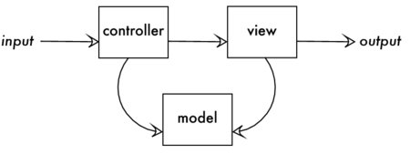 |
Figure 1. Model View Controller |
It's easy to understand what the controller and the view do. But the purpose of the model is more vague. There's a great desire in the software developer community to simplify and generalize what a model is, with the goal of reducing the complexity of software design. But often that goal leads them to oversimplify by assuming the model is only a data access object.
In simple applications, you don't need much custom logic in a model. It's relatively straightforward to match the fields of a model object to the columns of a single table in a database. This is a type of object-relational mapping. All you need the object to do is know how to create a row in the table, read the row, and update and delete it---the basic CRUD operations.
Martin Fowler described a design pattern to support this mapping, called Active Record.[37] Active Record is a data access pattern. You define a class corresponding to a table or view in your database. You can call a class method find that returns an object instance of the class, corresponding to an individual row in that table or view. You can also use the class constructor to create a new row. Calling save on this object either inserts a new row or updates the existing row.
<?php$bugsTable = Doctrine_Core::getTable('Bugs');$bugsTable->find(1234);$bug = new Bugs();$bug->summary = "Crashes when I save";$bug->save();Ruby on Rails popularized Active Record for web development frameworks in 2004, and now most web application frameworks use this pattern as the de facto data access object (DAO). There's nothing wrong with using Active Record; it's a fine pattern that provides a simple interface to individual rows in a single table. The antipattern is the convention that all model classes in an MVC application inherit from the base Active Record class. This is an example of the Golden Hammer antipattern: if the only tool you have is a hammer, treat everything as if it were a nail.
It's tempting to embrace any convention that simplifies software design. We can make our work easier if we're willing to sacrifice some flexibility, and if we never really needed the flexibility to begin with, that's even better.
But this is a fairy tale, like Jack and the Beanstalk. Jack believed that his magic beans would grow into a mighty beanstalk while he slept. It worked out all right in Jack's story, but we may not always be so lucky. Let's look at the consequences of the Magic Beans antipattern.
Active Record is a simple pattern, because a plain Active Record class represents a single table or view in the database. The fields of each Active Record object match the columns in one corresponding table. If you have sixteen tables, you define sixteen model subclasses.
This means that if you need to refactor your database to represent a new structure of data, your model classes need to change, as well as any code in your application that uses the model classes. Likewise, if you add a controller to handle a new screen in your application, you may have to duplicate code that queries your models.
The next problem you may run into is that other programmers who use your model class can bypass your intended usage, updating data directly using CRUD functions.
For example, you might add a method assignUser to a bug model, because you need to send an email to that engineer after updating the bug.
<?phpclass CustomBugs extends BaseBugs{ public function assignUser(Accounts $a) { $this->assigned_to = $a->account_id; $this->save(); mail($a->email, "Assigned bug", "You are now responsible for bug #{$this->bug_id}."); }}However, another programmer working on the bug application bypasses your method and assigns the bug manually without sending the email.
$bugsTable = Doctrine_Core::getTable('Bugs');$bugsTable->find(1234);$bug->assigned_to = $user->account_id;$bug->save();Your requirement was to have an email notification sent whenever the assignment changes. This allows that step to be bypassed. Does it make sense for your derived model class to expose the CRUD methods of the base Active Record class? How can you prevent other programmers from using these methods inappropriately? How can you exclude the base Active Record interface from your model class's generated documentation and code completion in programming editors?
A closely related point is that a model frequently has no behavior except generic CRUD methods. Many developers extend the base Active Record class without adding any new methods related to the work the model should do.
Treating models as simple data access objects encourages you to code your business logic outside the model, usually spread over multiple controller classes and reducing cohesion of the model's behavior. Martin Fowler calls this antipattern the Anemic Domain Model in his blog.[38] For example, you might have separate Active Record classes corresponding to the Bugs, Accounts, and Products tables. But you need data from all three of these tables in many application tasks.
Let's look at a simple code example for our bug-tracking application that implements bug assignment, data entry, bug display, and bug search tasks. It uses a PHP framework called Doctrine to provide a simple active record interface, and it uses the Zend Framework for the MVC architecture.
<?phpclass AdminController extends Zend_Controller_Action{ public function assignAction() { $bugsTable = Doctrine_Core::getTable("Bugs"); $bug = $bugsTable->find($_POST["bug_id"]); $bug->Products[] = $_POST["product_id"]; $bug->assigned_to = $_POST["user_assigned_to"]; $bug->save(); }}class BugController extends Zend_Controller_Action{ public function enterAction() { $bug = new Bugs(); $bug->summary = $_POST["summary"]; $bug->description = $_POST["summary"]; $bug->status = "NEW"; $accountsTable = Doctrine_Core::getTable("Accounts"); $auth = Zend_Auth::getInstance(); if ($auth && $auth->hasIdentity()) { $bug->reported_by = $auth->getIdentity(); } $bug->save(); } public function displayAction() { $bugsTable = Doctrine_Core::getTable("Bugs"); $this->view->bug = $bugsTable->find($_GET["bug_id"]); $accountsTable = Doctrine_Core::getTable("Accounts"); $this->view->reportedBy = $accountsTable->find($bug->reported_by); $this->view->assignedTo = $accountsTable->find($bug->assigned_to); $this->view->verifiedBy = $accountsTable->find($bug->verified_by); $productsTable = Doctrine_Core::getTable("Products"); $this->view->products = $bug->Products; }}class SearchController extends Zend_Controller_Action{ public function bugsAction() { $q = Doctrine_Query::create() ->from("Bugs b") ->join("b.Products p") ->where("b.status = ?", $_GET["status"]) ->andWhere("MATCH(b.summary, b.description) AGAINST (?)", $_GET["search"]); $this->view->searchResults = $q->fetchArray(); }}Code that uses Active Record in controller classes expands to become a procedural approach to organizing application logic. If the database schema or the desired application behavior ever changes, you need to update many places in the code. Likewise, if you add a controller, you need to write new code even if your queries against the model are similar to those in other controllers.
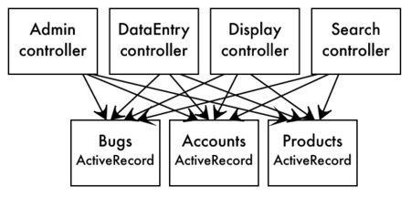 |
Figure 2. Using Magic Beans leads to vinelike tangles. |
The class interaction diagram (shown in Figure Using Magic Beans leads to vinelike tangles.) is messy and hard to read; it only gets worse as we add more controllers and DAO classes. This should be a strong clue that the code that uses different models together is duplicated across controllers. You need to use another approach to simplify and encapsulate part of your application.
When you employ the Magic Beans antipattern, you find that testing each of the layers in MVC is harder.
If you could separate business logic from the database access and separate business logic from presentation, it would help to meet the goals of MVC, and it would make testing simpler too.
The following clues may mean that you have Magic Beans:
Controllers handle application input and views handle application output, both relatively simple and well-defined tasks. Frameworks are best at helping you put these together quickly. But it's hard for a framework to provide a one-size-fits-all solution for models, because models comprise the rest of the object-oriented design for your application.
This is where you actually need to think hard about what the objects are in your application and what data and behavior those objects have. Remember Robert L. Glass's estimate that the majority of software development is intellectual and creative?
Fortunately, there's a lot of wisdom in the field of object-oriented design to guide you. Craig Larman's book Applying UML and Patterns[AUAPAITOAADAID] , for example, describes guidelines called the General Responsibility Assignment Software Patterns (GRASP). Some of these guidelines are especially relevant to separating models from their data access objects:
The object responsible for an operation should have all the data needed to fulfill that operation. Since some operations in your application involve multiple tables (or no tables) and Active Record is good at working with only one table at a time, we need another class to aggregate several database access objects together and use them for the composite operation.
The relationship between a model and a DAO like Active Record should be HAS-A (aggregation) instead of IS-A (inheritance). Most frameworks that rely on Active Record assume the IS-A solution. If your model uses DAOs instead of inheriting from the DAO class, then you can design the model to contain all data and code for the domain it's supposed to model---even if it takes multiple database tables to represent it.
How the model persists its data in a database should be an internal implementation detail. A domain model that aggregates its DAOs should have the responsibility to create those objects.
The controllers and views in your application should use the domain model interface, without being aware of what kind of database interaction is necessary for the model to fetch or store data. This makes it easy to change the database queries later, in one place in your application.
It's important to decouple logically independent blocks of code. This gives you the flexibility to change the implementation of a class without affecting its consumers. You can't simplify the requirements of the application; some complexity has to reside somewhere in your code. But you can make the best choice about where you implement that complexity.
The interface for the domain model class should reflect its intended usage, not the physical database structure or CRUD operations. Generic methods of the Active Record interface like find, first, insert, or even save don't tell you much about how they apply to application requirements. Methods like assignUser are more descriptive, and your controller code is easier to understand.
When you decouple a model class from the DAO it uses, you can even design more than one model class for the same DAO. This is better for cohesion than trying to combine all work related to the given tables into a single class extending Active Record.
In Domain-Driven Design: Tackling Complexity in the Heart of Software[DDTCITHOS] , Eric Evans describes a better solution: the domain model.
A model in the original MVC sense---not in the opinionated software sense---is an object-oriented representation of a domain in your application, that is, the business rules in your application and the data for those business rules. The model is where you implement business logic for the application; storing it in a database is an internal implementation detail of a model.
Once we have the model designed around concepts in our application, instead of database layout, we can start to implement database operations completely hidden within our model classes. Let's look at a possible refactoring of our earlier example code:
<?phpclass BugReport{ protected $bugsTable; protected $accountsTable; protected $productsTable; public function __construct() { $this->bugsTable = Doctrine_Core::getTable("Bugs"); $this->accountsTable = Doctrine_Core::getTable("Accounts"); $this->productsTable = Doctrine_Core::getTable("Products"); } public function create($summary, $description, $reportedBy) { $bug = new Bugs(); $bug->summary = $summary $bug->description = $description $bug->status = "NEW"; $bug->reported_by = $reportedBy; $bug->save(); } public function assignUser($bugId, $assignedTo) { $bug = $bugsTable->find($bugId); $bug->assigned_to = $assignedTo"]; $bug->save(); } public function get($bugId) { return $bugsTable->find($bugId); } public function search($status, $searchString) { $q = Doctrine_Query::create() ->from("Bugs b") ->join("b.Products p") ->where("b.status = ?", $status) ->andWhere("MATCH(b.summary, b.description) AGAINST (?)", $searchString]); return $q->fetchArray(); }}class AdminController extends Zend_Controller_Action{ public function assignAction() { $this->bugReport->assignUser( $this->_getParam("bug"), $this->_getParam("user")); }}class BugController extends Zend_Controller_Action{ public function enterAction() { $auth = Zend_Auth::getInstance(); if ($auth && $auth->hasIdentity()) { $identity = $auth->getIdentity(); } $this->bugReport->create( $this->_getParam("summary"), $this->_getParam("description"), $identity); } public function displayAction() { $this->view->bug = $this->bugReport->get( $this->_getParam("bug")); }}class SearchController extends Zend_Controller_Action{ public function bugsAction() { $this->view->searchResults = $this->bugReport->search( $this->_getParam("status", "OPEN"), $this->_getParam("search")); }}You should be able to notice several improvements:
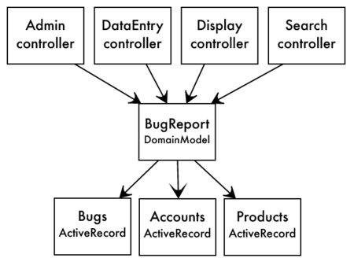 |
Figure 3. Untangling the vines by decoupling |
Ideally, you should be able to test your model without connecting to a live database. If you decouple your model from its DAO, then you can create stub and mock DAOs to help unit test your model.
Likewise, you can test the interface of a domain model just like any other object-oriented testing: call methods of the object, and then validate the method's return value. This is faster and easier than creating fake HTTP requests to feed to a controller and parsing the resulting HTTP response.
You still test your controllers with fake HTTP requests, but because the controller code is simpler, you don't need to test as many logical paths.
If you separate models and controllers and separate data access components from models, then you can unit test all these classes more simply and with better isolation. This makes it easier to diagnose defects when they occur. Isn't this the point of unit tests?
You can use a data access object productively in any software development framework, even one that encourages the Magic Beans antipattern. However, developers who don't learn how to employ object-oriented design principles are doomed to write spaghetti code.
The basics of domain modeling described and cited in this chapter will help you choose the best design to support testing and code maintenance. You'll finally be able to achieve great productivity developing database-driven applications.
|
Decouple your models from your tables. |
|
This term relational doesn't refer to relationships between tables. It refers to the table itself, or rather, the relationship between columns within a table. In a way, it refers to both.
Mathematicians define a relation as the combination of two sets of values from different domains, with some condition applied that gives us a subset of all the possible combinations.
For example, one set is the names of baseball teams, and the other set is cities. The combination of every team to every city is a long list of pairings. But we're interested in a particular subset of this list: the teams paired with their home city. Valid pairs include Chicago/White Sox, Chicago/Cubs, or Boston/Red Sox, but not Miami/Red Sox.
The word relation is used in two ways: as a rule ("this city is the home city of that team") and as the subset of pairings that comply with the rule. In SQL, we can store that result in a table with two columns, and one row per pair.
Of course, relations support more than two columns. You can combine any number of domains, one per column, into a relation. Also, you can use domains like the set of 32-bit integers or the set of text strings of a specific length.
Before we can begin normalizing tables, we need to be sure that they are proper relations. They have to meet a few criteria.
In SQL, a query returns results in an unpredictable order, unless you use an ORDER BY clause to specify the order. But apart from the order, the set of rows is the same.
Whether we ask Steven to test the product Open RoundFile against bug #1234 or whether we need to know if bug #1234 can be verified in product Open RoundFile by Steven, the result should be the same.
This is related to the antipattern in the Chapter Implicit Columns, where we would use columns by their position instead of by their name.
Once you know a fact, stating it again doesn't make it any more true. Given the name of a baseball team, your data dictates the city. We say the city depends on the team name.
To prevent duplicates, we have to be able to tell one row from another and to address individual rows. To ensure this in SQL, we declare a primary key constraint for a column or set of columns, whatever is needed to uniquely identify rows.
We might have duplication among nonkey columns---there are two teams in the city of Boston---but the row as a whole is still unique because the team names are different.
A relation has a header that defines the names and data types of the columns. Every row must have the same columns as those in the header, and a given column must have the same meaning on all rows.
We saw an antipattern break this rule in two ways in the Chapter Entity-Attribute-Value. First, the EAV table models an entity that can have a custom set of attributes for every instance, so the entity is not bound by any header that defines its attributes.
Second, the EAV attr_value column contains all the entity's attributes, such as the bug's date reported, the bug's status, the account the bug is assigned to, and so on. A given value like 1234 in this column may be valid for two different attributes but mean something totally different.
The antipattern in the Chapter Polymorphic Associations also breaks this rule, because a given value like 1234 references the primary key of any of the multiple parent tables. You can't say 1234 on one row means the same thing as 1234 on another row.
Columns contain data values, not physical storage indicators such as row IDs or object IDs. Above in the Chapter Pseudokey Neat-Freak, we saw that primary keys are unique, but they aren't row numbers.
Some databases bend this rule, giving you access to internal storage details with extensions to SQL (for example, the ROWNUM pseudocolumn in Oracle or OID in PostgreSQL). However, these values aren't properly part of the relation.
It's hard to find a subject that is so widely misunderstood, despite having a precise definition. You are practically guaranteed to encounter developers who express with complete confidence untruths such as these:
The following are the objectives of normalization:
Notice that improving database performance is not on this list. Normalization helps us store data correctly and avoid getting into trouble. It's practically inevitable that a database that is not normalized becomes a mess. We find ourselves developing a lot more code to clean up inconsistent or duplicate data. We experience delays and expenses to our businesses from faulty data. If you include these scenarios, the benefits to performance from normalizing a database become clearer.
When a table satisfies rules of normalization, we say the table is in normal form. There are five traditional normal forms, describing progressive levels of normalization. Each normal form eliminates a specific type of redundancy or anomaly when you design a relation. Generally, if your table satisfies a normal form, the table also satisfies all the preceding normal forms. There are three additional normal forms that researchers have described. The progression of normal forms is shown in Figure Progression of normal forms.
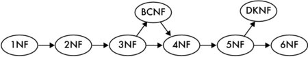 |
Figure 1. Progression of normal forms |
The most fundamental requirement for first normal form is that the table must be a relation. If it doesn't meet the criteria for a relation described in the first section, then your table can't be in first normal form or any of the subsequent normal forms.
The next requirement is that the table must not have any repeating groups. Remember that each row in a relation is a combination between several sets, choosing one value from each set. A repeating group means that one row may have multiple values from the given set.
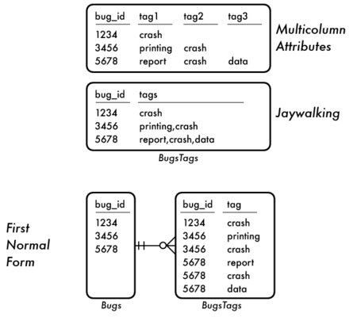 |
Figure 2. Repeating groups vs. first normal form |
We saw two antipatterns that create repeating groups:
In Figure Repeating groups vs. first normal form, we can see repeating groups according to each of these antipatterns. The proper design that satisfies first normal form is to create a separate table. Tags now occupy a single column, and we can support multiple tags by storing one tag per row.
The second normal form is identical to the first normal form, unless your table has a compound primary key. In the tagging example, let's keep track of which user chose to apply each given tag to a bug. We're also interested in who first coined a given tag.
CREATE TABLE BugsTags ( bug_id BIGINT NOT NULL, tag VARCHAR(20) NOT NULL, tagger BIGINT NOT NULL, coiner BIGINT NOT NULL, PRIMARY KEY (bug_id, tag), FOREIGN KEY (bug_id) REFERENCES Bugs(bug_id), FOREIGN KEY (tagger) REFERENCES Accounts(account_id), FOREIGN KEY (coiner) REFERENCES Accounts(account_id));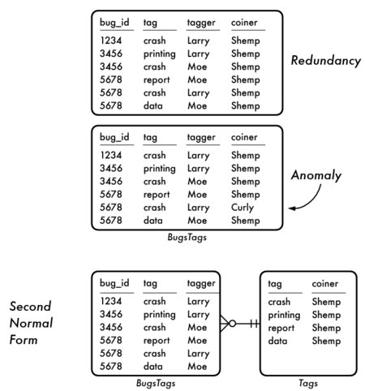 |
Figure 3. Redundancy vs. second normal form |
In Figure Redundancy vs. second normal form, we can see that the identity of the coiner is stored redundantly.[40] This means someone might create an anomaly by changing the identity of the coiner on one row for a given tag (crash) without changing all rows for the same tag.
To satisfy second normal form, we should store the coiner for a given tag only once. That means we have to define another table, Tags, where the tag is the primary key, so there's bound to be only one row per distinct tag. Then we can store the coiner of that tag in this new table instead of in BugsTags and prevent anomalies.
CREATE TABLE Tags ( tag VARCHAR(20) PRIMARY KEY, coiner BIGINT NOT NULL, FOREIGN KEY (coiner) REFERENCES Accounts(account_id));CREATE TABLE BugsTags ( bug_id BIGINT NOT NULL, tag VARCHAR(20) NOT NULL, tagger BIGINT NOT NULL, PRIMARY KEY (bug_id, tag), FOREIGN KEY (bug_id) REFERENCES Bugs(bug_id), FOREIGN KEY (tag) REFERENCES Tags(tag), FOREIGN KEY (tagger) REFERENCES Accounts(account_id)); In the Bugs table, you might want to store the email of the engineer working on the bug.
CREATE TABLE Bugs ( bug_id SERIAL PRIMARY KEY -- . . . assigned_to BIGINT, assigned_email VARCHAR(100), FOREIGN KEY (assigned_to) REFERENCES Accounts(account_id));However, the email is an attribute of the assigned engineer's account; it's not strictly an attribute of the bug. It's redundant to store the email in this way, and we risk anomalies like in the table that fails second normal form.
In the example for second normal form the offending column is related to at least part of the compound primary key. In this example, that violates third normal form, the offending column doesn't correspond to the primary key at all.
To fix this, we need to put the email address into the Accounts table. See how you can separate the column from the Bugs table in Figure Redundancy vs. third normal form. That's the right place because the email corresponds directly to the primary key of that table, without redundancy.
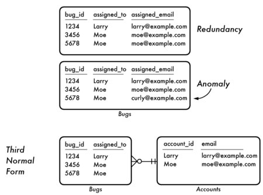 |
Figure 4. Redundancy vs. third normal form |
A slightly stronger version of third normal form is called Boyce-Codd normal form. The difference between these two normal forms is that in third normal form, all nonkey attributes must depend on the key of the table. In Boyce-Codd normal form, key columns are subject to this rule as well. This would come up only when the table has multiple sets of columns that could serve as the table's key.
For example, suppose we have three tag types: tags that describe the impact of the bug, tags for the subsystem the bug affects, and tags that describe the fix for the bug. We decide that each bug must have at most one tag of each type. Our candidate key could be bug_id plus tag, but it could also be bug_id plus tag_type. Either pair of columns would be specific enough to address every row individually.
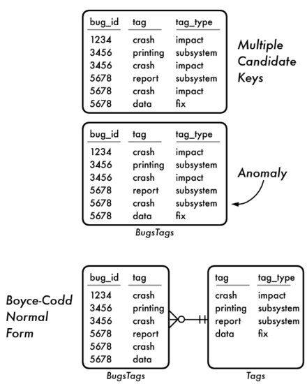 |
Figure 5. Third normal form vs. Boyce-Codd normal form |
In Figure Third normal form vs. Boyce-Codd normal form, we see an example of a table that is in third normal form, but not Boyce-Codd normal form, and how to change it.
Now let's alter our database to allow each bug to be reported by multiple users, assigned to multiple development engineers, and verified by multiple quality engineers. We know that a many-to-many relationship deserves an additional table:
CREATE TABLE BugsAccounts ( bug_id BIGINT NOT NULL, reported_by BIGINT, assigned_to BIGINT, verified_by BIGINT, FOREIGN KEY (bug_id) REFERENCES Bugs(bug_id), FOREIGN KEY (reported_by) REFERENCES Accounts(account_id), FOREIGN KEY (assigned_to) REFERENCES Accounts(account_id), FOREIGN KEY (verified_by) REFERENCES Accounts(account_id)); We can't use bug_id alone as the primary key. We need multiple rows per bug so we can support multiple accounts in each column. We also can't declare a primary key over the first two or the first three columns, because that would still fail to support multiple values in the last column. So, the primary key would need to be over all four columns. However, assigned_to and verified_by should be nullable, because bugs can be reported before being assigned or verified, All primary key columns standardly have a NOT NULL constraint.
Another problem is that we may have redundant values when any column contains fewer accounts than some other column. The redundant values are shown in Figure Merged relationships vs. fourth normal form.
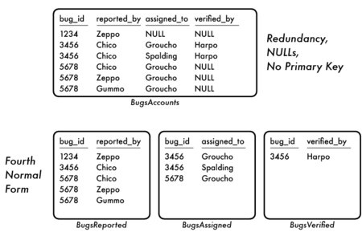 |
Figure 6. Merged relationships vs. fourth normal form |
All the problems shown previously are caused by trying to create an intersection table that does double-duty---or triple-duty in this case. When you try to use a single intersection table to represent multiple many-to-many relationships, it violates fourth normal form.
The figure shows how we can solve this by splitting the table so that we have one intersection table for each type of many-to-many relationship. This solves the problems of redundancy and mismatched numbers of values in each column.
CREATE TABLE BugsReported ( bug_id BIGINT NOT NULL, reported_by BIGINT NOT NULL, PRIMARY KEY (bug_id, reported_by), FOREIGN KEY (bug_id) REFERENCES Bugs(bug_id), FOREIGN KEY (reported_by) REFERENCES Accounts(account_id));CREATE TABLE BugsAssigned ( bug_id BIGINT NOT NULL, assigned_to BIGINT NOT NULL, PRIMARY KEY (bug_id, assigned_to), FOREIGN KEY (bug_id) REFERENCES Bugs(bug_id), FOREIGN KEY (assigned_to) REFERENCES Accounts(account_id));CREATE TABLE BugsVerified ( bug_id BIGINT NOT NULL, verified_by BIGINT NOT NULL, PRIMARY KEY (bug_id, verified_by), FOREIGN KEY (bug_id) REFERENCES Bugs(bug_id), FOREIGN KEY (verified_by) REFERENCES Accounts(account_id));Any table that meets the criteria of Boyce-Codd normal form and does not have a compound primary key is already in fifth normal form. But to understand fifth normal form, let's work through an example.
Some engineers work only on certain products. We should design our database so that we know the facts of who works on which products and which bugs, with a minimum of redundancy. Our first try at supporting this is to add a column to our BugsAssigned table to show that a given engineer works on a product:
CREATE TABLE BugsAssigned ( bug_id BIGINT NOT NULL, assigned_to BIGINT NOT NULL, product_id BIGINT NOT NULL, PRIMARY KEY (bug_id, assigned_to), FOREIGN KEY (bug_id) REFERENCES Bugs(bug_id), FOREIGN KEY (assigned_to) REFERENCES Accounts(account_id), FOREIGN KEY (product_id) REFERENCES Products(product_id));This doesn't tell us which products we may assign the engineer to work on; it only tells us which products the engineer is currently assigned to work on. It also stores the fact that an engineer works on a given product redundantly. This is caused by trying to store multiple facts about independent many-to-many relationships in a single table, similar to the problem we saw in the fourth normal form. The redundancy is illustrated in Figure Merged relationships vs. fifth normal form.[41]
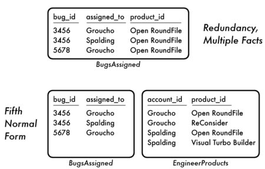 |
Figure 7. Merged relationships vs. fifth normal form |
Our solution is to isolate each relationship into separate tables:
CREATE TABLE BugsAssigned ( bug_id BIGINT NOT NULL, assigned_to BIGINT NOT NULL, PRIMARY KEY (bug_id, assigned_to), FOREIGN KEY (bug_id) REFERENCES Bugs(bug_id), FOREIGN KEY (assigned_to) REFERENCES Accounts(account_id), FOREIGN KEY (product_id) REFERENCES Products(product_id));CREATE TABLE EngineerProducts ( account_id BIGINT NOT NULL, product_id BIGINT NOT NULL, PRIMARY KEY (account_id, product_id), FOREIGN KEY (account_id) REFERENCES Accounts(account_id), FOREIGN KEY (product_id) REFERENCES Products(product_id));Now we can record the fact that an engineer is available to work on a given product, independently from the fact that the engineer is working on a given bug for that product.
Domain-Key normal form (DKNF) says that every constraint on a table is a logical consequence of the table's domain constraints and key constraints. Normal forms three, four, five, and Boyce-Codd normal form are all encompassed by DKNF.
For example, you may decide that a bug that has a status of NEW or DUPLICATE has resulted in no work, so there should be no hours logged, and also it makes no sense to assign a quality engineer in the verified_by column. You might implement these constraints with a trigger or a CHECK constraint. These are constraints between nonkey columns of the table, so they don't meet the criteria of DKNF.
Sixth normal form seeks to eliminate all join dependencies. It's typically used to support a history of changes to attributes. For example, the Bugs.status changes over time, and we might want to record this history in a child table, as well as when the change occurred, who made the change, and perhaps other details.
You can imagine that for Bugs to support sixth normal form fully, nearly every column may need a separate accompanying history table. This leads to an overabundance of tables. Sixth normal form is overkill for most applications, but some data warehousing techniques use it.[42]
Rules of normalization aren't esoteric or complicated. They're really just a commonsense technique to reduce redundancy and improve consistency of data.
You can use this brief overview of relations and normal forms as an quick reference to help you design better databases in future projects.
| [A] | AntiPatterns, William J. Brown and Raphael C. Malveau and Hays W. {McCormick III, 1998. |
| [SPT] | SQL Performance Tuning, Peter Gulutzan and Trudy Pelzer, 2003. |
| [HPM] | High Performance MySQL, Baron Schwartz and Peter Zaitsev and Vadim Tkachenko and Jeremy Zawodny and Arjen Lentz and Derek J. Balling, 2008. |
| [JCTAHISFS] | Joe Celko's Trees and Hierarchies in SQL for Smarties, Joe Celko, 2004. |
| [SDP] | SQL Design Patterns, Vadim Tropashko, 2006. |
| [JCSPS] | Joe Celko's SQL Programming Style, Joe Celko, 2005. |
| [ARMODFLSDB] | A Relational Model of Data for Large Shared Data Banks, Edgar F. Codd, 1970. |
| [POEAA] | Patterns of Enterprise Application Architecture, Martin Fowler, 2003. |
| [WECSSKAFA] | What Every Computer Scientist Should Know About Floating-Point Arithmetic, David Goldberg, 1991. |
| [DSOSS] | 19 Deadly Sins of Software Security, Michael Howard and David LeBlanc and John Viega, 2005. |
| [AWDWR] | Agile Web Development with Rails, Sam Ruby and David Thomas and David Heinemeier Hansson, 2008. |
| [FAFOSE] | Facts and Fallacies of Software Engineering, Robert L. Glass, 1992. |
| [TLOLA] | The Law of Leaky Abstractions, Joel Spolsky, 2002. |
| [POEAA] | Patterns of Enterprise Application Architecture, Martin Fowler, 2003. |
| [TPPFJTM] | The Pragmatic Programmer: From Journeyman to Master, Andrew Hunt and David Thomas, 2000. |
| [AUAPAITOAADAID] | Applying UML and Patterns: an Introduction to Object-Oriented Analysis and Design and Iterative Development, Craig Larman, 2004. |
| [DDTCITHOS] | Domain-Driven Design: Tackling Complexity in the Heart of Software, Eric Evans, 2003. |